C.
Wise, Vice-President
INTERNATIONAL BIBLE STUDENTS CONVENTION AT TORONTO, (TUESDAY, JULY 19, 1927)
__L-i___.______*____________________________________________■_____:_______________________________________________________________________________________________________________________________________•__________'■ - •__________________ ■ ■■________u_________________,______________
GREAT THRONGS OF BIBLE STUDENTS TAKE POSSESSION OF CITY j
__
City Theirs, Says Mayor. Spread Out All Over Toronto.
The Bible Students are coming!
They have been planning for it for months. Up in the great wheat fields of Saskatchewan is a wheat grower who requires twenty-five horses to do his work. • His fa-rm is a big one. It is one of the granaries of the world. His responsibilities are great. He makes a study of wheat growing, and makes a success of it ; but he has something of far greater,importance on his mind.
There are college graduates here, plenty of them," and mingling with them are the rank and file of the common people that have had to be content with common school educations. A few will be found, here and there,, whose education has been limited to a few weeks of schooling in some district school; but some of these will be found surprisingly versed in God's Word.
There are manufacturers here who have left large busineSfcTiTTrr the hands of subordinates, so that they might have a share, in the good things that will be brought forth : from the Bible at this convention of God’s people. There are real ' estate operators and others here who have been blessed with temporal prosperity; but they are not ; purse-proud.
They are using their surplus funds in the spread of the truth, and jithough they have come from long distances and in the finest of autoinobiles that money can buy, yet when you talk with them about the Bible you find that they are jtist jcommon folks.
There are all kinds of cars here, mostly rather good ones, because the Bilile Students are particular people! and are not just satisfied with apything that will turn on four wheels; but there are some of the cheaper ones too, and thousands have (come by train, instead of autombbile, for the very good reason that they had no automobiles. Two <5f the earlier arrivals started to walk to the convention from . southern Illinois, but by the kindness ot good-hearted folks along the road, ‘giving them a lift now and then, (they managed to cover over a hundred miles a day and got through quicker than they had expected.
greeting!
TO THE LORD’S ANOINTED
Please accept my greetings and best wishes for your happiness in the Lord. You are welcome to this convention. Have you come here with the determination to honor Jehovah’s name? If so, then you will receive a blessing and be a blessing to some others. The anointed ones now on the earth compose God’s temple class. In His temple everyone speaks of Jehovah’s glory, because it is His will that the witness to His name shall now be.-given, and it delights His servants to obey Him,
Jesus came to the earth to bear witness unto the truth and counted it the greatest privilege s.o to do. There could be no greater privilege than to follow in the footsteps of Jesus. Those who come in contact
with His anointed brethren should be able to say of and concerning them; They have learned from Him to be faithful witnesses unto the truth.
During the convention opportunity will be afforded for every one of you to have some part in giving testimony to Jehovah’s name and to the name of His King, whom He has placed upon His throne. You will watch for these opportunities and joyfully embrace them. May this be the happiest convention you ever attended.
Your brother and servant
by His grace,
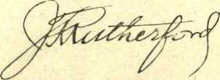CONVENTIONERS ENTHUSIASTIC
Probably never in the history of the International Bible Students Association did a convention start off with greater enthusiasm than the one which opened yesterday at Toronto. The Opening Rally was a grand success. .
In other-words. 11 was a good bit like a foretaste of heaven to be at' thdfOpening Rally, but that lets us in for a serious thought. The convention is not merely a place for the meeting of those that have loved one another in years gone by, but it is like heaven in a more important sense.... It is, or is to be, a place of order.
Let us think about this a little. Here arc thousands of men and women, earnest children of God, who have came, many of them, thousands of miles, to meet in Christian assembly. They have come in obedience to what they believe to be the will of God. If you ask them of their motives they will tell you, one and all, that they have no other aim in life than the doing of God's will; and that is the truth.
Well, then! The doing of God's will, which was their main reason for coming, should be the touchstone of their every act while here. It is not the doing of God’s will to spend the time allotted for meetings in any other way than at the meetings, unless press of duties require one's absence.
That means to get out of bed in the morning in time to be sure to be at every meeting before the meeting opens. There is not as much exmse for, a conventioner being late at the Lord’s business as there would be in being late at the business of his earthly employer; and there is no excuse in either case. The matter of getting up in the morning is purely a matter of going to bed the night before.
And the doing of God's will in the meetings means to sit with perfect silence and with perfect attention throughout the entire service, just as the Germans always do at every meeting. Would anybody say that it is God’s will for him to annoy the listeners all about him, or distress the speaker by coming in late, whispering, shuffling about, going out early, etc.? To ask the question is to have the answer. IPe have come to the convention to do the will of God. Let us do it, and have done with disorder.
Our God is a God of Order, and it stands to reason that He will be far more likely to smile upon those who try to serve Him in an orderly fashion than upon those who follow their own will, and, to that extent, the example of the lawless one.
Judge Rutherford Arrives
The President of the Association Takes up the Reins of the Convention at once on Arrival
The President of the International Bible Students Association is a unique figure in the world, from many points of view, and would
attract immediate attention in any concourse of humanity. This
would be partly because of his physical size, which is' unusual, partly because of his rather boyish smile, often upon his face, and partly
because of the clear, limpid depths of his brown eyes and the wealth
of benevolence, real love of his fellow-man, which shines out of them.
The Judge, as his fellow-workers love to call him, had those supreme advantages which comb from the necessity of having to fight his way up in the world. As a boy he longed for education, and at sixteen years of age this Missouri boy, even then over six feet tall, braved all winds and weathers selling books among the farmers of his community, far and near. On one of these occasions his weight crushed the thin ice of a stream, and in freezing weather he was drenched from head to fbot, and only escaped pneumonia that night by rising from his bed and resorting to the most extreme exercise to bring about a perspiration.
Three or four years later he was earning ten dollars a day as a court reporter and using in that work his own system of shorthand, a great achievement in itself. In that best of all possible law schools he; gained an intimacy with law and lawyers, judges and juries, plain-.iffs and defendants, questions and answers, arguments and phrase-olpgy, and soon gravitated natuYally into a skillful lawyer with a arge and lucrative practice, and from that to the bench.
J. R. RUTHERFORD ENROUTE TO THE CONVENTION
For a few years, while still in his twenties, Judge Rutherford gave much attention to politics, and was for some years a staunch advocate of the policies, or what he supposed to be the policies, of that one of the two great parties in the United States which makes loudest claims that its motives are the blessing of the common people.
But in a short time his heart was torn with the evidence piling up about him that the way .of the common people is a way of sorrow, and that there are forces at work in earth, and in league with each other, which tend constantly to place, privilege, (opportunity, education, wealth and power in the hands of those who already have more than their share of the good things of life; while the burdens of pain, sorrow, disappointment, disillusion, poverty and dread are carried forever on the shoulders of those who are least able to bear them.
(.Continued on Page 2)
COLPORTEUR MEETING TODAY
PROGRAM TODAY
This afternoon, 1.30 to 2.30
Chairman, R. S. Emery of Brooklyn
Place of meeting, Transportation Building, facing the lake
|
Morning |
Evening | ||
|
9:30 |
Praise and Testimony E. J. Coward |
8:00 |
Radio Program Music • ' |
|
10:30 |
Discourse W. E. Van Amburgh |
8:20 |
Lecture Behold,' I make |
|
11: a 5 |
Discourse F. H. Dougherty |
8:55 |
E. L. Beaulieu •'•Aff Things New Music |
|
Afternoon 2:00 |
Praise and Testimony A. M. Graham |
9-I5 9A5 |
Listening in on Prof.- .Sjand-., . , .. , well and Harry Goodwin .‘ ■■■ .I.- ‘(Os at mm ? Music - . ::cn- v.u ot |
|
3:00 ,3:45 |
Discourse J. C. Watt Discourse George Draper |
/ • .1; L.gnivif ■ STATION CKCX (291 ■ Metres X-u !o( 5.') . Hid U'iOfl --------------------------------—----u----,----*---- | |
•1.
ATTENTION!
SERVICE WORKERS!
As soon as possible this morning, get territory assignment for rural ■ and city service work.
Automobile owners please select . .,own parties for rural district service .-work.
llAppIy 'at service book room in MDolisfentt.
J. R. RUTHERFORD ENROUTE TO THE CONVENTION
JU®
(Continw*f% While Judge
RUTHERFORD ARRIVES
l)
Jrfierford, facing these things in his daily practice,
CHAIRMAN OF CONVENTION, CANADIAN BRANCH MANAGER
and on the bench, was pondering over these injustices, in the providence of God the d’vine plan was brought to his attention, and provided him then, and since, as it has provided every honest soul who comes in contact with it, a new and thrilling motive in life.
W. F. Salter, Manager of the Toronto Office, Chairman of the Convention Sessions
The Judge saw that the one hope of humanity is in the kingdom for which the Lord instructed His disciples to pray, and which Jesus Himself preached and taught HL disciples to preach; and, as far back as 1906, when he was still a young man in his thirties, he left the bench, resigned from his law firm, sold his law books, and took to the
. GENERALISSIMO OF THE STUDENTS' ORGANIZATIONS
The chairman of the Toronto convention of the International Bible Students Association, who will guide the proceedings of the convention, is W. F. Salter. Mr. Salter has been in charge of the work in Canada since 1918. For some time the work was directed from the Headquarters Office, but in later years it seemed advisable that the Canadian field should be directed from local headquarters. In keeping with this spirit, Mr. Salter is the chairman of the international convention of the Bible Students, now bfeing held jn territory under the jurisdiction of the Toronto Office. Managing arrangements for the convention to get on smoothly is in the hands of the chairman. He has appointed various committees in charge of different phases of the work, who have their instructions as to what is to be done. The chairman acts on behalf of the President of the Watch Tower Bible & Tract Society, Judge J. F. Rutherford, in so far as the convention activities are concerned and, with daily conferences, the chairman is in a position to know the President’s wishes and desires in connection with convention proceedings.
public platform to tell, the people, not about some or any political parijq.but about the great King that he saw clearly from the Script-i res would begin to oust Satan from his position as the god of this world in events of unparalleled magnitude that would begin in Jthe
A corrimittee has been appointed having information regarding railroads and other general information items. The committee in charge of rooms will help you to get located comfortably. Any complaints of service or rooming conditions should be brought to the attention of the rooming committee, so that your comfort might be taken care of. The committee will be only too glad to see that you are located comfortably so that you can enjoy to the full the convention proceedings. The bookroom committee is in charge of publications for sale. Books are not admissable into Canada free of duty; hence, purchases should be limited for
’ desired to be used in the States can be ordered in the bookroom and shiplment will be made from the Brooklyn Office, or one of the United States depots.
fall of 1914.
Today there are thousands of med in their thirties who will remember the stirring lectures which Judge Rutherford gave to them from tbe University platforms while they were still in their teens and millions since then, and millions now, have heard and are hearing from his lips the story of God’s wonderful arrangement for blessing all the nations, kindreds and families of the earth living and dead, by the reign of Christ Jesus, God’s anointed King, which reign, Judge Rutherford proclaims, has already begun.
If Judge Rutherford’s ideas are correct, and Bible Students who have followed his arguments on the question do not admit any likelihood at all that his conclusions are not correct, then we are living at the most important, most stupendous time in all the history of the world. But it is not our place in this little sketch to tell what his arguments are. That is for him to do. We merely draw attention to the man so that his motives may be seen. Those motives are clear as crystal, white as snow, and the logic with which those motives are balanced makes Judge Rutherford the most commanding public figure of the day.
But the Judge is more than a lecturer, and more than an author. He is a born organizer and executive. Surrounded by men who have the same motive as himself, he is the hardest worker of them all and thinks nothing of working twelve, fourteen and even sixteen hours a day. He is an inspiration and an example to all around him.
A recapitulation of his duties reads like a fairy tale; but it is no fairy tale. The stern realities of writing books that will be read and
WALTER F. SALTER Canadian Branch Manager
studied by millions, writing regularly, week after week, articles that will constitute the most important features of The Watch Tower and The
Golden Age, lecturing regularly every week, answering thousands of letters on every conceivable subject, planning 'the construction of buildings, watching the finances, directing the work of the Association in every corner of the world, supervising the legal affairs of the Society, makes demands upon his vitality that could not be carried by a man of less robust physique.
Sometimes the Judge gets overworked, but he understands how to care for his body, knows what to do, and does it. His favorite recreation is doing a little work on the grounds of WBBR, such as ploughing or dragging a field, chopping down trees, or riding to an appointment by automobile. He is shown in the accompanying photograph just as he is about to leave for the Toronto convention.
Judge Rutherford is busy, but he is a happy man. He is doing * the work which he knows the Lord wishes him to do, and that is the most supreme happiness that can come to any man. His friends think that he does that work as no other living man could do it. Anyway, they are gla'd he is here, and on the job. They hope that he will keep well and they look forward with keenest anticipation to the blessings which the Lord will shower upon him and which he will pass on to them and millions of others while he is here.
This is Walter F. Salter, Chairman of the Convention, who will necessarily be much in evidence throughout the whole allotted eight days. He will carry out Judge Rutherford’s prearranged plans for the convent'on.
A service committee will be in ■ charge of the distribution of books, assignments of territory, etc. A committee of doctors will have charge of a temporary hospital. A grounds committee will look after the condition of the convention grounds. The chairman will appreciate it if you will get in touch with the different committees in order that your wants may be taken care of.
If there is some important matter that you would like to see the chairman about, you might get in touch with him through the brother who is to speak at the next session of the convention.
OFFICE PERSONNEL TO BE KEPT
INTACT
Judges’s Secretary Will Arrange for an Appointment and ' Interview
DONALD HASLETT
Judge Rutherford’s Secretary
Donald Haslett, private secretary to J. F. Rutherford, has charge of appointments and interviews. In order that There may be no unnecessary delays in taking care of the volume of mail, preparation of articles for magazines, newspapers, radio talks, etc., Judge Rutherford has opened an office in Toronto. Any communication with Judge Rutherford by letter or otherwise can be placed in the hands of Donald Haslett, and he will see to it that the Judge’s attention is called to the matter. The Judge, has set^aside-certaimdayx ■fer ""tTHT"!views' ijlTfl LUnsultationsr He asks, however, that such interviews and consultations be mainly regarding the interests of the work and will appreciate it if all who wish to see him, confine .their visits to the discussion of plan<F fbr the' advancemerif;^ ta orte sum other, of the work of the International Bible Students Association.
Donald Haslett can be seen at the convention sessions and Can be reached at the Judge’s office. He will be glad to make appointments for all who have some pertinent and important matter regarding the work of the I. B. S. A. that requires the Judge’s personal attention or decision.
Obviously, Judge Rutherford’s time for such interviews is limited; and if there are matters that come within the scope of the different departments, such as the Service Department, Foreign Department, etc., it would be well to first get in touch with the members of the office organization at headquarters^ It is quite likely that the Judge has handed down a certain rule that will apply to your particular query. If the department is unable to be of assistance, then a consultation will not only be necessary but welcome.
WHERE ALL THE ENGLISH SESSIONS OF THE
CONVENTION -ARE HELD
ADVANCE REPRESENT* ATIVE REMAINS
.THROUGHOUT
CONVENTION
A. H. Macmillan to Continue Efforts in the Interests of the Convention.
A. H. Macmillan preceded |he conventioners" by some twb'wee|cs and has been; in Toronto Ap tend what help was possible in arranging for’ the coniforts of tfi’e81"cop-ventioners. A. H. Macmillan is acquainted with the different rnfeS .established by the Canadian am} United States Customs Officials regarding ingress to and egress froffl Canada,. L If you .haVe had difficulties in getting across the border, Mr. Macmillan will help you get straightened out.
It is hoped that there will be little trouble with the rooming arrange-ments; but, whether little or mupfi, the purpose of the rooming cofji? mittee is to look after the ppmforts and conveniences of the convert? tioners. It is their desire to makb you comfortable and they stptpl ready to see that you are comfortably located. Mr. Macmillan wishes to state that if your accommodations are not to your liking; the rooming committee stands ready to arrange for such changes as wj|l make you comfortable.
Judge Rutherford sent Mt. Macmillan that he might report tq him directly of the progress being made; and Mr. Macmillan styj occupies this position and will bring all matters of importance regarding conveniences to Judge Ruther-fordls attention. He will see' to it that whatever can be done to arrange for your comfort will be done. Whatever needs the official action of the President during tbe convention will receive such actiqp.
The different City departments and City heads want the conven-tioners to feel that Toronto has ex?-tended them a welcome hand. They are glad that a representative sucp as Mr. Macmillan can come to thepl with the feelings and attitude of the attendants at the convention.
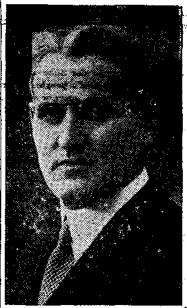THE JUDGE’S ADVANCE
REPRESENTATIVE '
A. H. Macmillan is well acquainted with the Bible Students throughout the United States and Canada, and he is, therefore, well fitted to take care of their individual comfort and convenience.
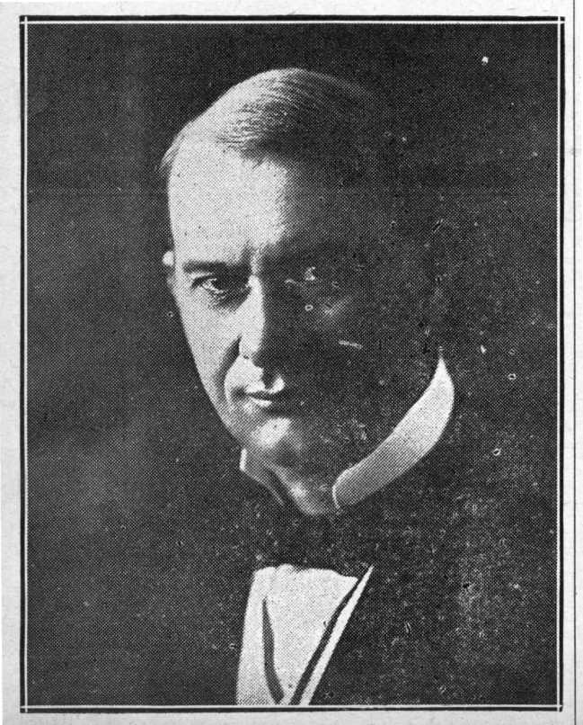GENERALISSIMO OF THE BIBLE STUDENTS' ORGANIZATIONS
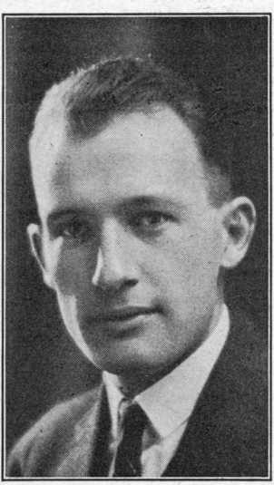DONALD HASLETT
Judge Rutherford’s Secretary
WALTER F. SALTER
Canadian Branch Manager
THE JUDGE’S ADVANCE REPRESENTATIVE
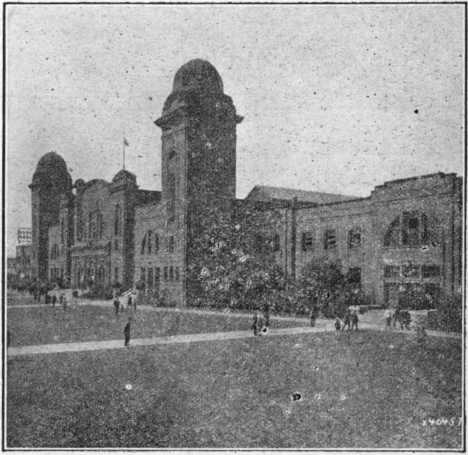WHERE ALL THE ENGLISH SESSIONS OF THE CONVENTION ARE HELD
WATCH TOWER SECRETARY HERE.
task that falls to Mr. Wise. Under
W. E. Van Amburgh Reports After Long Road Trip.
W. E. Van Amburgh, Secretary and Treasurer of the Watch Tower Bible & Tract Society, has arrived at Toronto for the convention ses-
his the of the the
supervision are, the upkeep of Bethel Home, repairs, alterations the building and supervision of mechanical equipment, under direction of the President, Judge
become very much interested in field work, distributing the publication of the Watch Tower Bible &
sions. absent
Mr. Van Amburgh has been for the past month and a
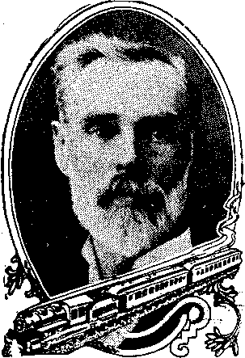W.C. VAN AMDVRGK
E. Van Amburgh, Sec.-Treas.
J. F. Rutherford. Housing activities are divided into different departments, but directly representing Judge Rutherford is the Vice-President, Mr. C. A. Wise.
Though released from his immediate activities for two weeks due to the convention and vacation period at headquarters, yet Mr. Wise will be concerned with assisting as best he can, looking after the comforts of the conventioners, acting as an
assistant to Mr. Macmillan.
Wise will be glad to hear your
Mr. ex-
pression regarding convention ar
rangements and will do what he
can
to make the arrangements entirely agreeable.
Service!
w.
half that
on an extensive lecture trip carried him to the Pacific
Coast. One of his first moves upon arrival was to report to the President, Judge J. F. Rutherford, his observations and findings on his long lecture trip. He comes to the convention particularly fitted to represent the field as a whole, especially those not able to be in attendance.
Mr. Van Amburgh has been in long association with the activities of the Watch Tower Bible & Tract Society. For over thirty years he has served the interests of the Society in one way or another. While in attendance at the convention Mr. Van Amburgh will be serving in the capacity of his office aaSecretnry b»
available for such help-'as /be ..may be able to lend those conventioners who are anxious for information regarding features of the work in his hands.
VICE PRESIDENT OF THE SOCIETY AT CONVENTION
ln Charge of Brooklyn Home Accommodations for Bethel Workers ,
C. A. Wise has put in an appearance at the convention and plans to be here at all of the sessions. Mr. Wise is the Vice-President of the Watch Tower Bible & Tr<ct Society and is in charge of the housing arrangements for the Bethel workers. Brooklyn headquarters takes
C.
Wise, Vice-President
care of the comfort of those who work in the office and factory; rooms are looked after; meals are prepared rjnd the comforts of its workers Dre supervised; so that they mav be fit to keep up their duties. This housing of the workers is a
Tract actual most B. S. hands
Society. He has gone into field work and is one of the successful workers of the I. A. in placing literature in the of the people. On several
RADIO DEPARTMENT REPRESENTATIVE HERE
Mr. Barber is here to lend what assistance he can to those who are planning to make arrangements for broadcasting and to do what is
occasions he h^s been instrumental in placing over 200 books rnd booklets in the hands of the people in one day. .
This but emphasizes that activities need not necessarily be confined to one field, but that their scope can take in many branches of I. B. S. A. work.
C. J. Woodworth hr's been the editor of the Golden Age since its very beginning in 1920. He hopes that the convention sessions will enable him to become better acquainted with contributors who send articles for publication in the Golden Age.
R. H. Barber, Now Busy in Organizing Radio Department at Brooklyn Headquarters, Here to Advise Regarding the Extension of Radiocasting Through Local Stations.
R. H. Barber arrived with the Bethel Special. For some years he has been in charge of the Pilgrim Department, arranging for appointments of the traveling lecturers of the International Bible Students Association in the United States. He was in charge of the Bethel Special, which arrived today, bringing the co-workers at the
Service!
Service!
There will be two service days, Thursday, July 21st and Saturday, July 23rd. The rural territory will be worked, as well as the outskirts of the City of Toronto. If you are unable to get in with an automobile* party, you may get your individual territory and work on the edge of the City.
All owners of automobiles, please report for service at once.: Ar-' range your own auto parties of workers.
Books. There is a specially prepared bag containing 30 books and 20 convention souvenirs, all of which will cost you $3.00. When you receive your territory card it will give you all information as to the selling price of the books. As soon as you receive your territory, which we hope will be the first thing you do, you may then buy a ticket at a cost to you of $3.00. With this ticket you may obtain your books at any time.
A bag containing seven Volumes of Studies in the Scriptures, an entirely different package, will cost you $2.00. Please secure a ticket,
R. A. Johnson, Convention Service Director
value $2.00, for one set of Volupies. We encourage all the friends to try to sell the volumes first. Where there are several going together, one or two sets of Volumes should be sufficient.
When you get your territory, we urge you to immediately study your card and cayry out the instructions. There will be some phase
of service for everyone, so ALL will please report at the Service partment, which will be located at the rear of the Coliseum.
Experiences in the service: We desire to publish in
Messenger the exceptional experiences. If you have such an
perience, please write it out plainly on the back of your report.
Convention Souvenirs. Everyone is pleased with the convention souvenir, and you will receive twenty in your bag of books. These are not to be sold, but are to be given away with each sale of books, as explained on the back of your territory card.
GOLDEN AGE EDITOR HERE
C. J. Woodworth Transfers Activities to Convention.
The Golden Age is one of well-known bi-weekly journals
His
the of
the United States. The editor, C. J. Woodworth, is in attendance at the convention. There will be much to report to Golden Age readers and Mr. Woodworth is here to get firsthand information. He will cover the lectures to be given by Judge Rutherford, so that $ie Golden Age will contain the report of the one lecture that the Judge will use as his keynote speech of the convention. The Judge has not yet given anj inkling as to what he will talk about, nor has he taken any one into his confidence rs to what is most important in his mind. Conventioners will hear this, and Mr. Woodworth will report it to Golden Age readers in a forthcoming issue of that magazine.
Mr. Woodworth has many interests. He is a very busy man. He does .not confine himself to any one effort, but his activities are widespread. During the past year he has
C. J. Woodworth, Editor Golden Age
R.'H. Barber, Radio Department Head possible toward advancing the radio* work throughout the United States and Canada.
WBBR PROGRAM DIRECTOR ARRIVES
Judge Rutherford Will Direct Radio Program Through WBBR’s Organization.
The principal station of the International Bible Students Association, Station WBBR, New York, will be closed during the sessions of the convention. The program direct~ tor, musicians, choral singers and lecturers will assume their roles in connection with the programs to be broadcast through Station C K C X. Judge Rutherford thus brings the-
De-
The ex-
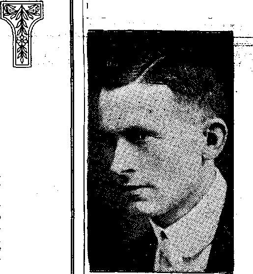headquarters of here to enjoy sessions,
the I. B. S. A.
the
convention
The enlarging
of the
radio work
made it necessary f__ J-2O-
Rutherford to arrange for the organization of the radio department. Judge Rutherford’s idea is
for Judge
that the broadcasting of lectures representing the International Bible Students Association’s views should be brought as nearly in accord with the lectures of the principal station, W B B R, as is possible. To this end he has arranged for the radio department to collect all lectures, dialogues and dramalogues, etc., and to have these lectures, dialogues, etc., put into use wherever lectures will be broadcast.
R. H. Barber has been asked to assume charge of the radio department. His duties are to receive and examine the manuscripts and to forward copies to the different stations radiocasting for the I. B. S. A. An interview with Mr. Barber disclosed that over 49 stations are now radiocasting for the I.B.S.A., and it is hoped that more local ecclesias of the Association will be able to use the facilities of their local stations for broadcasting I. B, A. lectures.
V. F. Schmidt, Announcer at WBBR radio organization of the I. B. S. A.’s principal station to assist and direct the activities of radiocasting during the convention sessions. Programs are to be arranged; lectures are to be broadcast; musicians, singers and other helpers will have a share. The program director of Station WBBR will act for Judge Rutherford in the radio division. Victor Schmidt will be in attendance during the entire convention and will be glad to assist, as his time may allow, those who are serving as announcers or otherwise in connection with one or another of the forty stations that broadcast weekly for the International Bible Students Association.
Made Popular by WBBR
R. H. Barber, Radio Department Head
R. A. Johnson, Convention Service Director
V. F. Schmidt, Announcer at WBBR
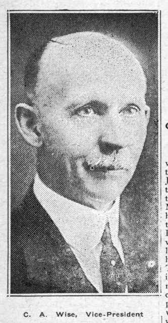Wise, Vice-President
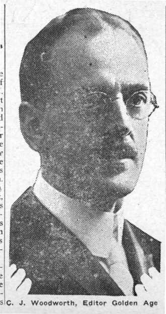Woodworth, Editor Golden Age
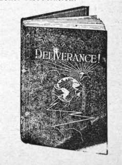Made Popular by WBBR
EARTH’S GREATEST EMPIRE
Since the days of Eden it has been' the expressed purpose of. Jehovah to establish for man’s benefit a universal empire on the earth.. It is through this empire that God has promised that He will bless all the families and nations of the earth. By and through the peoples of Israel God organized a typical empire, which foreshadowed the real and greater empire" thrpugh which the blessings shall come to mapkiiid-Because of unfaithfulness to God He overthrew the nation of Israel and there , permitted the Gentiles to establish a • world-wide empire under Nebuchadn'ezzar. ^It was- at that time that God said, in. substance, that the Gentiles would continue without, interruption until He -.whose right it is shall com?,’ and. to Him will I give 'the. kingdom. ’ ' ■ . ■ - •
Shortly thereafter God caused His. prophet Daniel to briefly sketch the history of the world powers, from the overthrow of Israel
irom lire ovenmuw ui a*a<*** , <
tire endL of . the ' Gentile ' P e^s.ure"
Having done this, He added; “And in the days of these kings shall the God of heaven set up a kingdom, which shall never be destroyed; and the kingdom shall not be left to other people, but it shall break in pieces and consume all these kingdoms, and it shall stand for
ever.”—Daniel 2 :44. • ;
Here is the positive statement that God intends to erect a universal kingdom or empire that shall exercise dominion for the good of mankind forever. Further reference to the time and the establishment of that universal empire is made by the prophet when he wrote: “And the kingdom and dominion, and the greatness of the kingdom under the whole heaven, shall be given to the people of the saints of the Most High, whose kingdom is an everlasting kingdom, and all dominions shall serve and obey him.”—Daniel 7:27.
As a further evidence that the great King who shall reign in that empire shall rule for the benefit of man and that the dominion there-' ' of shall be. universal, it is written: “In 'His days *shall the righteous ’ flourish; and abundance of peace so long as the moon endhir'eth. He , shall .have dominion also from sea' to sea, and from the river unto the ends of the earth.”—Psalm 72:7,8.
That great King is The Christ of God, the great Messiah of Jehovah.: That He will have associates with Him, made up of those who have; been faithful to Him, is evidenced; by the Scriptures: “To him that overcometh will I grant to sit with
My Father in elation 3:21) cometh, and unto the end,
Me in my throne, even as I also overcame, and am set down with “ ‘ " Flis thron’e.” (Rev-“And he that over-keepeth My works to him will I give the nations: And
power over ----------
he shall rule them with a rod of
iron; as the vessels of a potter shall, they be broken to shivers ri even as I received of My Father.”! —Revelation 2 :26,27. i
In the outworking of the divine1 Plan God has moved forward majestically, notwithstanding the opposition of the enemy Satan and his representatives. On this occasion we examine some of the Biblical proofs concerning the preparation for this mighty empire.
Empire means a vast government possessing and exercising supreme power, sovereignty, sway and con-; trol. The empire herein referred to is God’s government or kingdom, organized, possessing and ex-; ercising supreme power for the benefit of His creatures, and particularly for the benefit of man. That government or empire is delegated to His beloved Son; hence,, it is properly called the empire or government of Messiah. The supreme power proceeds from the God of heaven, and, therefore the empire ‘is properly called the kingdom of heaven. We must not infer that God has not always governed his obedient . creatures. There is no record of the beginning of the exercise of Jehovah’s sovereign power. In fact, the Scriptures speak of the prie«t "Melchizedek, priest of the Most High God, as picturing the executive officer of God carrying out the divine Plan at all times. There is no record of the beginning of his days nor the end of his life.
But here we consider God’s plan and provisions pertaining to man. God created the earth for the habitation of man. (Isaiah 45:12, 18.) The expressed purpose of God is to< the effect that the perfect man shall have dominion or rule over
the earth. Man’s first overlord, Lucifer, who committed the great crime of treason against God, in-dueed man to turn awAy-from God; and man thereby lost life and the right to. lifers Lucifer, who is now Satan the Devil, builded a great organization of his own to hold 'man in subjection to himself and to keep the mind- of man turned away from Jehovah, to the end that Lucifer might receive the worship of man. God’s plan and purpose is to deliver man from the power and influence of SatAn and to restore him to his former condition of life and of blessings incident thereto. To this end God
builds a mighty empire or king-dv,.n, with’ His beloved Son as
dom3
-King. His arrangement is that Christ Jesus shall have associated •with Him one hundred and forty-four thousand ■others who shall form a part of His empire. In .building this empire God has made no haste, but has majestically prd-'gressed with it according to His
A Both Zion and Jej-usalem- ace:
names applied to God’s organiza-
RUTHERFORD, AUTHOR, LECTURER, ONE OF THE BEST KNOWN BROADCASTERS ON THE AMERICAN CONTINENT
tion. t ion must
It is out of this organiza-of Zion that the Deliverer come. (Romans 11 :26) Of
organization. Therefore
it is
necessity, the foundation of the great empire must be laid in God’s written : *“Therefore thus saith the Lord God, Behold, I lay in Zion for a foundation a Stone, a tried Stone, a precious corner Stone, a sure foundation: he that believeth shall not make haste.” (Isaiah 28:16) This prophecy without doubt refers to Jesus Christ, the beloved Son of God, to Whom He has committed all power in heaven and in earth. The great empire is symbolically represented as a stone structure, the foundation stone of which is Christ. He was tried and tested, and under the most severe test proved His loyalty and faithfulness to God. It is certain that God can always trust Him. He justly earned the title, “The Faithful and True.”
Jesus is called the “precious coroner stone” because He is the, dearest treasure of Jehovah’s heart. He is the fairest of ten thousand and altogether lovely. “Gird Thy sword upon Thy thigh, O most Mighty, with Thy glory and Thy majesty. . . . Thou lovest righteousness, and hatest wickedness: therefpre God, Thy God, hath anointed Thee with the oil of gladness above Thy fellows.”—Psalm 45 :3,7.
i Jesus is the “sure foundation,” the One that can never be removed, always upholding the dignity and honor and good name of Jehovah God. This foundation stone is the foundation and chief corner of the empire that shall carry into operation God’s great plan for the deliverance of man.
As to the time of the laying of this foundation, we have the proof ‘from the Scriptures that it was at ■the time of the consecration of Jesus at the Jordan. About that time John said of, and concerning him: “Behold the Lamb of God, which taketh away the sin of the world.” (John 1:29) About this time Jesus came to the Jordan to be baptized by John, and it was there that the prophecy written of and concerning him was fulfilled, to wit: “Then said I, Lo, I come: in the volume of the bpok it is written of Me, I delight to do Thy will, O My Gerd: yea, Thy law is within My heart.”--—Psalm 40:7,8; Hebrews 10:7.
Jesus is also pictured as a lamb slain. From that time He was counted as slain and as the great sin offering; on behalf of man. It is written concerning Him: “The Lamb slain from the foundation of the world.” (Revelation 13:8) Thus is fixed the time of the laying of this precious, foundation; namely, at the time Jesus was baptized in the Jordan and begotten of the holy spirit.
Associate Rulers
Before Jesus’ first advent God had made His plan. That plan provides that there shall be a building upon this precious foundation stone, composed of other stones that shall form a part of the mighty empire. It necessarily follows that the class of persons to be thus made a part of the empire, also the manner of their selection, testing and completion, was prearranged according to the good pleasure of God. Hence it is written: “Blessed be the God and Father of our Lord Jesus Christ, who hath blessed us with all spiritual blessings in heavenly places in Christ: according as He hath chosen us in Him before the foundation' of the world, that we should be holy and without blame before Him in love: having predestinated us unto the adoption of children by Jesus Christ to Himself, according to the good pleasure
/
Radio Lecture by J.
of His will.” (Ephesians 1:3-5.) These words of the apostle apply to those, and. to those only, who shall constitute a part of God’s great empire which in due time shall govern and rule all the nations of the earth..
It is of keen interest to note that those who are to be associated with Christ in His empire are not selected from amongst the angels of heaven. It is God who selects them through Jesus Ghrist, acting as the representative of the Most High God. He lays hold upon, or takes them from the human race, that is to say, he selects, men possessing the faith of Abraham, as it is written: “Besides, he does not in any way take hold of angels, but he takes hold of, the seed of Abraham.”—Hebrews 2:16, Diaglott.
bers of the. royal line. This
is
in
That which distinguishes Abraham above any who preceded him is his faith- in God. Trusting implicitly in Jehovah,. Abraham deported himself accordingly. Such faith as exhibited by him furnishes the criterion for the selection of the memharmony . with . the lesson which Jesus impressed upon His disciples as of paramount importance; namely, “Have faith in God.” (Mark 11 : 22) It is clearly manifest from the Scriptures that God grants His great favor to those, who implicitly rely upon His Word.
Much that Jesus taught His disciples they could not comprehend at the time. Much He did not teach them until after His. resurrection and ascension on high. Without doubt He guided the minds of the disciples then. On the last night He was with them in the flesh He said: “I have yet many things to say unto you, but ye cannot bear them now.” (John 16: 1?) Why could 'they not understand at that time? The answer is, Because the holy spirit had not been given. It was essential that Jesus die, be raised from the dead and then appear in heaven in the presence of Jehovah God and present the. merit of His sacrifice unto Jehovah, before the holy spirit could be giveri. The giving of the holy spirit to the disciples was an evidence that His sacrifice had been accepted as the great sin offering on behalf of those for whom it was presented.
Jesus had said to His disciples : “Nevertheless I tell you the truth. It is expedient .for you that t go
away: for if I go not away, the comforter will not come" unto you; but if I depart, I will send him ;unto you.” (John 16:7.) The comforter here mentioned is the holy ■spirit. (John 14:26) The promise ;here is that when the holy spirit should be given, then the disciples1 would understand all that Jesus had }taught them and what He should ’’ yet teach them. .“Howbeit when he, ‘the spiritxff truth, is come, he will guide you into all truth: for he shall not speak of himself; but whatsoever he shall hear, that shall he jspeak: arid he will show you things to come.”—-John 16:13.
The holy spirit is the invisible power of God, operating upon mind of matter as God may will. Prior to the- coming .of Jesus the holy spirit, by Qod’s.will, operated upon tfie minds of only such men as God chose for servants and as prophets. These holy men as prophets spoke as1 God, by His spirit, moved their minds to speak or write.—2 Peter 1;,21.
Joel was one of the prophets, ’ He prophesied that the time would come when God would:, pour owi Hjs spirit upon all those w.puld call upon His name. (Jdei2‘:28, This, prophecy of Joel" had fts/fttk filment at Pentecost. Pentecost $v,as the fiftieth day affer the resurrection of Jesus. At the time of the ascension of Jesus into heaven He had assembled His disciples on the , side of the Mount of Olives. He there commanded them that they should not depart from Jerusalem until they had received the holy , spirit, and promised therh that then they should receive power and that they should become His witnesses unto the uttermost parts. of the. earth.-—Acts 1 :4-8.
In obedience to this command the disciples remained at Jerusalem. “And when the day of Pentecost was fully come, they were all with one accord in one place. And suddenly there came a sound from heaven, as of a rushing mighty wind, and it filled all the house where they were sitting. And there appeared unto them cloven tongues, Irkc'as <j£.4»re, and it sat \ upon each of’them: and they.,were all filled with the holy spirit, and began to speak with other tongues, as the spirit gave them utterance.” (Acts 2: 1-4) Thus was made manifest the fulfilment of the prophecy of Joel above mentioned, as specifically : stated7 by the apostle.—Acts 2:16-20. . _ .
A city is a symbol of a government or empire. It is written concerning the empire or kingdom: “And the wall of the city had twelve foundations, and in them the names of the tyVelve apostles of the Lamb.” (Revelation 21: 14) The Lord Jesus Christ is the chief corner Stone in that kingdom, and the apostles of the Lamb are the twelve foundations. —1 Peter 2:6.
Prior to His crucifixion the Lord Jesus'had promised that He would confirm in heaven what these faithful apostles did on earth. (Matthew 18 :18) It was at Pentecost, and after receiving the holy spirit, that. Peter testified concerning Jesus Christ, as follows: “This is the Stone which was set at nought c-f yoti builders, which is become; the head of the corner. Neither is there salvation in any other: for there is none other name under heaven given among men, whereby we must be saved.”—Acts 4:11, 12.
The Jews had thought to build an empire; and they looked forward to that empire which, ’under the Messiah, would rule all nations of the earth. The clergy of that time especially thought that they were the builders; but when the chief corner Stone was laid they rejected Him, even as the prophet had foretold they would do. (Isaiah 53. 3; John 1: 11, 12) The fact that the Jews rejected the chief corner -Stone in no way hindered or), delayed the progress of the buildihg, for the chief corner Stone and foundation of the new and glorious empire was laid, its building began and progressed according to the will of God. The holy prophet had testified that pn thjs chief corner Stone should reSt the new government which should bring deliverance to the people. “For upto us a Child is born.* unto us a Son is given, and the government shall be upon His shoulder; and His name shall be called Wonderful, Couriseller, The mighty God, The everlasting Father, The Prince of Peace. Of the increase- of -His government and peage?there, shall be no end, upon the.. throne ..of Pavid, and upon ,his . kingdom^,tp order it, and to .establish it. with judgment arid with justice, from
J. F. RUTHERFORD, AUTHOR, LECTURER, ONE OF THE BEST KNOWN BROADCASTERS ON THE AMERICAN CONTINENT
henceforth even forever. The zeal of the Lord of hosts will perform this.”—Isaiah 9 : 6, 7.
The apostles were also prophets because they, under inspiration from God, foretold things to come to. pass in the distant future. A true prophet is one who gives testi mony by divine authority. That Jesus Christ and His apostles con stit.ute respectively the chief corner Stone and foundation of the great empire, and that others are added thereto, the Apostle Paul, who also Was a prophet, under inspiration testified: “Now, therefore, ye are no more strangers and foreigners, but fellow-citizens with the saints, and of the household of God; and are built upon the foundation of the apostles and prophets, Jesus Christ Himself being the chief, corner Stone; in whom all the building . fitly fraped together
grpyveth unto an holy temple in the. Lord: in vyhom ye also are, builded together for an habitation tjf God through the spirit.”—Ephe sians 2:19-22.
How Chosen.
The members of the empire are not chosen by men nor by manmade organizations. It is God who has chosen them through His beloved Son Christ Jesus. (Ephesians 1:4; 2- Thessalonians 2:13; 2 Timothy 24; James 2:5; 1 Peter 2:4.) Those who are chosen to be of the royal line are called or invited by the Lord God, through .His beloved Son, Christ Jesus. (1 Corinthians 1:2; 7:15; Ephesians 4:4; Colossians 3:15; 1 Thessa . lonians 2:12.) Cannot priest or clergyman of some church denomination call a sinner to become part of the kingdom of God and then choose him for that purpose? Neither a priest, nor any other clergyman possesses any such power or authority. The Scriptures alone must be the guide as tb how these are called and chosen. The only way for sinners to come to God is through Jesus Christ, as He
States: “Jesus saith unto him, am the' way, the truth, and the life no man cometh unto the Father. . but by me.” :(John 14:6.) _ The
tures, of coming to God tferdfigh
Jesus Christ is as follows: knowledge, faith, consecration and justi-} fication.
Faith means to know the Word of God and then to rely upon it. Therefore knowledge must precede faith. “So then faith cometh by bearing, and hearing by the Word of God.” (Romans 10 :l,7i) From . the Word of God man learns that he was born a sinner, that there is no other name given under heaven whereby he can come again into harmony with God, except through Jesus Christ. He learns that Jesus died upon the cross, and that whosoever believes upon Him should not perish, but have an opportunity for life, everlasting. (John 3: 16, 17) Coming to a knowledge of this fact man is thereby drawn to Jesus, learns that Jesus is nis Redeemer, and that to please God he must — follow the direction that the Lord Jesus points out. The one thm seeking the Lord God must now exercise faith; and the first thing of importance is to believe that Jehovah exists, and that He rewards those who diligently seek Him. (Hebrews 11 :6.) To such Jesus
says: “If any man will come after Me, let him deny himself, and take up his cross, and follow Me.”— Matthew 16: 24.
Self-denial means a willingness to completely surrender oneself unto God, agreeing to do the wil’ of God, while trusting in the merit of Christ Jesus’ sacrifice. This is consecration. This is what Jesus did when He appeared at the. Jordan, as it is written of Him: “I come to do thy will, O my God.” This is an agreement that thereafter the will of the man will be exercised in harmony with the wil1 of God, and that he will use his mind to ascertain Gfid’s will and then do it. /
, Now the Lord Jesus presents the man who consecrates to Jehovah It is Jehovah God who judicially determines whether or not the one thus presented is right. Justification means made right with God and it therefore includes the judicial determination by Jehovah thal the one thus consecrating is right The Scriptures, therefore, show three separate and distinct things involved in justification (1) Faith-(2) the blood of Jesus; (3) the judicial determination by- Jehovah-as it is .written: “Therefore being justified by faith, we have peace
with God .through.our Lo^d '■'Jesus Christ”’,. (Romans 5 ::11 )..;..< “Much more then, being now justified by His blood, we shall be saved from wrath through Him” --(Romans 5:9); “It is Gqcl.that justifieth.”— Romans 8:’ 33. 4
Justification, between the time of Pentecost and the completion oi the empire, is by faith and for the
purpose of enabling the one thus justified to sacrifice all T>f his earthly hopes and prospects, particularly his right to. live on earth, to the end that he might participate in the chief resurrection and -reign' with Christ as a member of that empire. (2 Timothy 2:11; Revelation 20: 6): The justification by Jehovah therefore constitutes a call* or'invitation1 to membership in the kingdom on empire. Thereupon God begets j such an one by His spirit.
To beget means to begin; and the) begetting or beginning is to a hope: of life and to an inheritance in-:]
corruptible, spirit is a
This begetting of the covenant that God
makes with the one consecrating. God gives to such a.n one His Word* of Truth; and then He causes His* invisible power to so operate upon the one to whom He gives this Word as to begin to carry on the transformation of .the one thus be-J gotten into the likeness of the, Head, Christ Jesus, the chief, cor J ner Stone laid in Zion. . I
It is written: “Of His own will begat He us with the Word of Truth, that we should be a kind of firstfruits of His creatures.” (Jame 1:18) The ones thus begotten are] addressed by the Apostle Peter in these words : “Elect according to; the foreknowledge of God the. Father, through sanctification oi‘the spirit, unto obedience and sprinkling of the blood of Jesus Christ: Grace unto you, and peace, be muL. tiplied. Blessed be the God and Father of our Lord Jesus Christ which according to His abundant, mercy hath begotten us again unto a living hope by the resurrection of Jesus Christ from the dead, to, an inheritance incorruptible, and •mdefiled, and that faded not away.; reserved in heaven for you, who are kept by the i powem of^ God
u„ro!SKttoh“ eS?
Jo .be revealed in the last t’imeA4-|1 Peter
1:2-‘5.
These are begotten to the divine nature. God has promised such the divine nature if they are faithful o their part of the covenant. God is always faithful to His*. “Accord; ng as JJis divine power hath given into us all things that pertain unto life and godliness, through the knowledge of Him that hath called is to glory and virtue whereby arc given unto us exceeding great and precious promises; that by these ye might be partakers of the divine nature, having escaped the corruption that is in the world through ’ust.”—2 Peter 1 : 3, 4.
Living Stones,
The one begotten of the holy spirit is now a new creature in Christ. (2 Corinthians 5: 17) Hi; Ihope of life is on the spirit plane
with Christ Jesus, lead as a human vis right to live as ixpired with the
He is counted being, because a human being acceptance o'
iis sacrifice. To him thq. apostle says: “Set your affections on things above, not On things on the earth. For ye are dead, and your life is hid with Christ in God.”-— Colossians ’3 : 2, 3;
• The one now addressed must be builded up as . a living stone in the temple of God, if he would be or the royal line and participate in the great empire. Because he is just beginning he is spoken of as r babe newly born; and addressing such the Apostle Peter says: “A- । newborn babes, desire the sincere milk of the word, that, ye may grow thereby: if so be ye have tasted that the Lord is gracious. To whom coming, as unto a living
stone, disallowed indeed of, men but chosen of God, and precious ye also, as living stones, are buil' up a spiritual house; an holy priest hood, to offer up- sacrifices, a-rentable to God by Jesus Christ. Wherefore also it' is contained in the Scripture, Behold, I lay in Sion a chief corner Stone, elect, precious : and he that believeth on Him shall not be confounded. Unto you, therefore, which believe He is precious but unto them which be disobedient, the Stone which the builders disallowed, the same is made the' head of the corner, and a stone of stumbling, and a rock, of offence, even to them which
stumble at the, word, beihg disobedient; whereunto also they were • appointed.”—1 Peter 2: 2-8.
When Peter wrote this the leaders of the Jewish people in particular .had rejected Jesus, the .chief corner S.tone. The apostle adds -. “He that believeth on Him shall not be confounded.” To believe means - - to remain steadfast and faithful; we must show our faith by what we do. “Unto you, there fore; which believp He .is precious.’ , It: is a.precious thing, to observe, the chief corner. Stone and to be conformed according to His way. Such are .called to follow in HL] steps. (1 Peter 2 :21) The one who is thus designated a living stone to be builded up into the building; of God is anointed. To anoint.
i means to designate to some posi-i tion in the empire, “Now He which stablisheth us with you in Christ, - and hath anointed us, is God.” (2 . Corinthians 1: 21) These are anoint-ed to represent Jehovah and the
, Lord Jesus Christ.
' God having made this promise, i and as His promises are nevei 1 broken, He. counts His anointed. 1 ones as now a part of the new kingdom or empire or nation.. Hence the apostle says concern-, ing them: “But ye are a chosen ‘ generation, a royal priesthood, an-holy* nation, a peculiar people; that-ye should shew forth: the praises of Him who hath called you out of- darkness into His marvelous light.” (1 Peter 2 :9.) In order to show forth the praises of Jehovah, God they must not only believe Jehovah is God, but must joyfully] obey His will, represent His cause . and use the faculties with which, they are endowed to testify to His great name and His goodness and His purposes. To do this one could not conform himself to the evil world, but must stand aloof from it and serve the Lord God. The Word of God is his guide. The Word informs. him that he must not conform himself to the world, because Satan the- enemy is the god of this: world. Concerning such the apostle: writes: “Be not conformed to this world; but be ye transformed Dy the renewing of your mind, that ye hjay prove what is that good, ^and perfect? wik.
■JThe transformation * process now j is-carried on by the Christian build-]] irfg up his mind by studying the Word of God; from it ascertaining the will of God and by it proving what is-the good and acceptable and‘perfect will of God? It can be easily seen that the Lord would not make any one a fnember of that empire unless he is in full and complete * harmony with the Lord Jesus, the chief corner Stone, as it is written: “For whom He did foreknow, He also did predestinate to be' conformed to the image of His Sow, that He might be the firstborn among many brethren.” (Romans 8: 29) This, means that each one who will ultimately be a member of that empire must grow in. the likeness of the Lord Jesus, being transformed day by day by virtue of the spirit of the Lord working in him to will and tc do God’s good pleasure.—2 Corinthians 3: 18. '
This world, means the people of this earth organized into forms of government under the supervision of their overlord, Satan the enemy (2 Corinthians 4: 3, 4) The Devi, is the prince or ruler of this world (John 14.30) He is the enemy of the Lord Jesus Christ, the enemy of God, and the enemy of every one who attempts to do God’s will The .one who will ultimately be oi the empire of righteousness must
not love the world, as it is stated by the apostle: “Love not the world, neither the things that arc in the world. If any man love th world, the love of the Father i not in him. For all that is in the world, the lust of the flesh, and the lust of the eyes, and the pride or life, is not of the Rather, but is of the world. And the world passeth away, and the lust thereof: but he that doeth the will of God abideth for ever.”—1 John 2: 15-17.
Early in the experience of the church it was manifest that those whom God will approve must be transformed into the likeness of Jesus Christ. Christ Jesus is Flead over the house of sons, and all the other members of the household must honor Jehovah as Jesus honors Jehovah. They do, and must, love God with a supreme devotion, and delight to show forth His •'raises and to testify that He is God. Their very course in the way of righteousness would ’ drkw against them the opposition of Satan the enemy.
Antichrist.
After Jesus was 'put to death Satan the. enemy thought that he had succeeded in destroying the heir of promise, who was promised a kingdom. Satan therefore rea-
soned that he would continue to rule the world without any successful interruption. He must have been disappointed when Jesus arose from the dead. He must have ob-
course, was to turn the minds of the people away from Jehovah. Crucifixes were erected, and the worship of the people was turned to these rather than to the intelligent worship of th£ Lord Jehovah and the Lord Jesus. Christ. Beads, so-called holy water, and like things were used, and are still used, to blind the people. Gradually, subtly, seductively and wickedly the Devil, through willing instruments, corrupted those who called themselves Christians.
served what transpired at Pentecost, and there noted the begin ning of the building of the other living stones in conformity with the chief corner Stone, Chris Jesus. It is reasonable to presume that he was familiar with the in structions given by the inspirec apostles to those of the church ----- >
He would understand that these | government. Thereby who were united in Christ were tc form part of the seed of promise, even as Paul had testified.' (Galatians 3:16, 27-29.) Destruction of this seed, would bring reproach upon God, and now this became the objective and purpose of Satan the enemy. He saw that the Lord Jesus Christ, exalted to the divine
Rome was then the great world power of which Satan was the god, (2 Corinthians 4 :3,4) It was in the fourth century that this great world power adopted Christianity as the religion of the state or
____y the Devil ' succeeded in having the people call themselves by the name of God and of His Christ and at the same time; constantly bring reproach Upon the* name of the Lord, and, in fact; represent the Devil. To show how stealthily and fraudulently the Devijf overreached the people and turned' their minds from the true God the: following is quoted from the history! Old Roman World:
. nature, was now beyond the influ-; ence of his (Satan’s) power. He realized that he must now do something to counteract the influence and power of those who were
1 being brought into Christ, if he ■ would thwart the divine plan.
Antichrist means that which is offered as a substitute for Christ the Messiah, therefore in opposition to the Messiah. Satan the enemy set about to organize “the mystery of iniquity” or of lawlessness; an arrangement which would be contrary to and in opposition to Christ. Evidently he knew tha: John had said to the church: “Ii is .the last time.” (1 John 2:18) The Devil would therefore reason that if he could corrupt the seed of promise and turn their minds, and the minds of the people, from God he would defeat God’s purposes. He evidently saw that the devel opment of the seed of promise ■ would cover a long period of time; therefore he went about the preparation of the antichrist deliberately.
It ' was 'in the] days of Enos ' (Genesis 4:26, margin) that Satan had adopted the hypocritical scheme of having the people call) ,them selves by the name of fhU Lord while at the same time misrep resenting the Lord. He thereby mocked God and brought reproach upon His name. Early in the Christian era Satan the enemy-adopted a similar scheme of hypocrisy, but on a far greater scale. He kfiew that man is so constituted that he_ must worshi:
something; and if Satan could no' get the people who call themselve Christian to directly worship hin then he would inaugurate a scheme by which he would Jturn away their minds from Jehovah God. and yet let them call themselves Christians.
Satan saw that it would be pro fitable to his scheme to have the Christians become more popular j therefore the Christian religioi became ostensibly the religion o his wicked world. The Devil there after planted amongst the Christians ambitious men, those who had a desire to shine amongst men and who in the course of time had themselves appointed or elected to the positions of bishops and chief elders; and in due course there was established a clergy class, as distinguished from the laity or the common people. The clergy thus organized introduced into the church false doctrines taught by heathen philosophers, which - or
course were the Devil’s own doe trines. These were used to corrupt the message of the Lord God. Thr elerg • and the rulers in the church then established theological school wherein men were trained for th<-clergy for the purpose of carryinr ’ on the work of the;r system no1' organized and in operation. Ir due course statements of belief or creeds were formulated and ore sente.d to the professed Christian-and any one who taught contrary to these creeds was considered -heretic and was dealt with accord ingly.
False doctrines were freely intr^ duced and substituted for th< truth. Amongst these were and are the doctrines of the trinity immortality of all souls, dterna tort”re of the wicked, the cbvin' r’P-ht of,the clergy and the diviiv right of kings to rule. In . thf course of time Mary, ■ the mothw of the child Jesus, was deified' and the people called upon to worship her as the mother of God Satan’s purpose in all this, of
In the Second Century there are no greater names than Folycarp, Ignatius, Justin Martyr, Clement, Melito; and Apollonius, quiet bishops of in-, trepid martyrs, who addressed their] flocks in upper chambers, and who’ held no worldly rank, famous only.fofi their sanctity or simplicity of Chirac-! ter, and only mentioned for their sufferings and faith. We read of martyrs; some of whom wrote valuable treatises and apologies; but among them we And no people of rank. It was a dis-l grace to be a Christian In the eya of fashion or power. The early, Christian literature is chiefly apolo-i getic, and the doctrinal character is simple and practical. There are controversies in the Church, and intense religious life, great activities, ; great virtues, but no outward conflicts, no secular history. They had not as yet assailed the government or the great social institutions of the empire. It was a small body of pure and blameless men, Who did not _ aspire to control society. But they, had attracted the notice of the gov-, - i frntnhnt and were of sufficienV'Wfiik*- < iequence to be persecuted. . They. /: were looked upon aS ’fahatics' who) nought to destroy a revelreil^&f’' ixisting institutions. ■ T* •
It was but a short time until the. enemy overreached Christianity byr .nixing it with politics. From that; ime forward politics and! so-called Christianity have walked hand in hand, and with the advancing cen-.
curies ecclesiastics have become' more brazen in their participation n the politics of the world. There is but one Christ and one Christian doctrine. Notwithstanding • this (there have sprung up numerous denominational systems taking the [name of Christ. The evident purpose of Satan in engineering this iwas to confuse the minds of the people and turn them aWay from . the true God and the preparation of His true kingdom for the blessing; of mankind.
The Christ
true
followers of Jesus
have never been popular.
They are now very unpopular, especially amongst the denominational systems called Christian. He who, faithfully represents the Lord must keep himself aloof from alliances with any part of the Devil’s organization, and this of course makes him unpopular.
There are many sincere people in the earth who de.;ue to know the truth concerning God’s great empire for the blessing of mankind. The time has come for them to know i;
know and understand necessary to have a ‘standing of Satan’s and how he has used the issue.
In order to it is likewise clear underorganization it to becloud
This matter is of greatest interest, convenience and public necessity and of greatest importance be-’ cause it has to do with the general welfare of all the peoples of earth. We may be sure that the great God of the universe will afford ample opportunity for the people to receive such things. It becomes a great privilege for anyone theny who knows of God’s kingdom and its preparation to make known these truths to his fellow-creatures and to do so without money and without charge; -
Reports of Discourses Delivered at Monday’s Sessions
By G. S. Kendall.
In this world conquerors have re-,, ceived the highest plaudits of men. Monuments have been erected to their memory. Histories are principally the recorded', acts and achievements of the great who subdued kingdoms, led armies to victory, obtained thrones and rulership.
GEO. S. KENDALL.
But our text today does not apply to the present world, to its honor or its crown. We choose our text from- Revelation 3: 21; “To him that overcometh will I grant to sit with me in my throne.”
To make this more emphatic and dramatic we read it from the original Greek: “To the conqueror will k grant to sit with -Me in -My throne, even as. I conquered and am set down with My Father in His throne.” .". These are the words of the risen . Lord to the beloved John, the last of the faithful band of chosen apostles, a conv.ict upon the stony Isle of Patmos. Our Lord’s voice as of a great trumpet rang clear: “I am he that liveth r'nd was dead.”
He had conquered; and, as the Captain of our salvation, He speaks with clear clarion notes to the warriors of the cross down through the centuries of the seven stages of the church’s history, telling them how to fight and what to fight; and only the victors will be crowned.
In the seven messrjges given to Ephesus, Smyrna, Pergamos, Thya-tira, Sardis, Philadelphia and Laodj-- cea, what is the outstanding thought, clear, comprehensive and powerful? Is it not loving devotion, loyalty, faithfulness and no compromise with the enemy?
Seven times in seven messages to the seven epochs are the same com-’ prehensive statements set forth and, - according thereto, only the conquerors are crowned.
The Capta n is Christ made perfect through suffering.
The True Soldiers are those who have enlisted under the banner of Christ, are fully consecrated to His service, wholly devoted to His will and have no entanglements in this world. _
The panoply is referred to in Ephesians 6. 11: “Put on. the whole armor of • God that ye may be able to stand against the wiles of the Devil.”
The necessity for this armor in this evil day is paramount. How few of the organized millions who profess Christian'ty attempt or even consider the duties and great responsibilities of a soldier of our King.
IVha I zee overcome . The Apostle Paul 1'n ,thc 9th. chapter of first Corinthians, 27th verse, declares to the contenders for crowns, that one important item must not be forgotten, and that is our flesh.
"How1 true this has been in our own day. Many noble and true apparently fought a prom'sing battle " for years, but weakened and surrendered to the enemy.
Powerful and subtle are the tendencies of our flesh with its desires. Be. not deceived. God is not mocked. Whatsoever a man soweth E at shah he also reap.
The , Devil. The true soldier must come in direct confhct with the prince of darkness. The Cap
tain of our salvation met this powerful enemy and resisted faithfully. With every attack He used the polished shaft of truth, “It is written.” How simply, ?how directly, with what death-dealing power this weapon smote the rebellious head of the enemy
And now ye warriors of the cross, Arouse yourselves! Awake! for this’is the day of great peril. Gird yourselves, too, with the strength of your God, for “the weak will He increase in strength”; and with this polished shaft of tfuth let us resist constantly.
“Ne’er think the victory won, Nor once at ea’se sit down;
Thine arduous work will not be done
Till thou hast gained thy crown.” The world. The world means the Devil’s organizaton, for Satan is the prince of this world. (2 Cor. 4:4) His organization, visible, is termed a ‘beast.” (Rev. 13 chapter). His counterfeit system of worship is the “great harlot” of Rev. 17 :5. She has contaminated the ruling factors and s ts upon many waters.
And now the time has come for the greatest battle of all ages, visible '(nd invisible, the decisive battle of light and darkness, truth and error, our Captain against the prince of darkness, for the complete possession of this earth. This is pictured by Joshua marshalling his hosts to the battle aguinst the five kings of Cariaan at the valley of Gibeon; and by Gideon’s band, 300 strong, against a host rs grasshoppers for m utitude—the brave 300, with trumpet, pitcher, and candle. Every man stood in his place around about the camp.
How little the people of earth realize, and even the great and mighty, what it all menns. The great of earth awaken and the men of war draw near to the battle, led by their over-lord Satan, to the most momentous event of the world’s history.
And when the final command shall come, let us blow our trumpet, ,declare the time, and shout, “The sword of the Lord rpid of Gideon”; and the battle will be on, the Battle of Armageddon, a ‘ battle-' between the frightened, demoralized and selfcondemned units of Satan’s empire that will beggar the description of tongue or pen, for the slain shall cover the earth.
By R. S. Emery.
Millions of dollars were reported as lost in the great flood wh'ch swept the cities along the Mississippi. Sorrow and suffering were everywhere. Why is it that God permits such things to take place?
The failure to find the answer has led - many into infidelity and into doubting the existence of a God of love, just'ce, wisdom and power. If there is such an One, surely the Bible, as His Word, ought to give us an explanation of why He permits evil.
God Not the Author of Sin
The Bible shows that God was not the author- of sin but that the responsibility rests upon Lucifer, now called Satan. This one was one of God’s creations, very wise and beautiful and perfect in all his ways until iniquity was found in him. (Ezek. 28.15.) He became selfish and ambitious for a' kingdom of his own, betrayed the trust which God had g'ven him as protector over Adam and Eve and the human race, and alienated their love for God by picturing God as a liar and himself as the benefactor of the human race. Since that time the human race has continued in the course of sin and disobedience.
As God is all-nowerful, it must be admitted that He could have created man so that he could not have sinned; but if he had been so made, his obedience would not have been prompted by love for the Creator. Voluntary, not compulsory, service is that which brings pleasure. Thus God made man as a free moral agent. Mam was nerfect without the knowledge of evil. Since Adam’s fall, the ’■ace has been imperfect, obtaining a knowledge of the exceeding sinfulness pf sin. When the race has learned this lesson, then, through the Redeemer, it will be restored to oerfection and receive a knowledge V God’s goodness and the blessings that come through living in harmony with Him.
Why Calamities Are Permitted
But why should God permit such great calamities as the Mississippi,
flood, the earthquakes in Palestine and Japan, the war, famines, plagues, etc., which have been taking place particularly since 1914?
The Bible mentions repeated occasions wherein the Lord permitted calamities to come upon the children of. Israel who had .entered into a special covenant with Him. These calamities came because of their disobedience and failure to live up to the terms of their contract. God had promised to bless and protect them from the calamities which were common to the world in general, ' providing they would obey Him; but their forsaking Him necessitated His chastening them, that they might know that He is the true and living God and not as the false idols to which -they had turned to render worship.
God desired Israel’s obedience to Him, not for a selfish purpose but because He knew that He was the only Being in the universe who had the power to grant them the blessings which they sought. The world :n general has been estranged from God. Thus the calamities have come because, though claiming to be Chris-* tendom, the world has not looked to Him for guidance and protection.
Jehovah Making for Himself a Name
It now becomes necessrry for Jehovah to make for Himself a name in the earth. The theory that man’s happiness does not depend upon God but rather upon himself, has become so prevalent among men because of the activities of the evil one and his representatives, that now Jehovah must in some way bring man to a realization of the truth.
Jesus foretold what would be the “signs” of the time for the setting up of His kingdom, which kingdom
By A. H. Macmillan
“Remember ye the law of Moses my servant, which I commanded unto him in Horeb for all Israel, with the statutes and judgments.
Behold, I will send you Elijah prophet before the coming of great and dreadful day of Lord.”—Malachi 4:4, 5.
Just how the Jewish people terpreted this prophecy we may
the the the
in-not
be sure. However, they looked forward to the time when the Lord would send them a messenger who would announce the coming of the great Deliverer in fulfilment of this promise. When John the Baptist appeared, some enquired of him if he were Elijah. John promptly answered, No. When asked if he were that Prophet, the Messiah, he answered, No, saying he was just a voice, a messenger, proclaiming the presence of the great Deliverer.
Later on, Jesus was enquired of by the -disciples concerning the coming of Elijah before the great day of the Lord. Jesus answered, saying that Elijah had come; and they knew he spake of John the
Baptjst. Luke clears up the parent contradiction by saying
R. S. EMERY, BROOKLYN OFFICE
would enable man to regain his former condition; and the Bible
abounds with proof _that this due time arrived in A. ~ '
D. 1914. For
forty years prior to that date this
message went forth throughout the earth, but (he people, on account of the activities of their leaders, heeded not.
The Lord promised that actual proof of His presence would be furnished at that date. Great calamities would then be permitted to come upon the earth, that the people might awaken to a realization that the pre sent order is Satanic, that the t me for its end has come, and that ali efforts to bolster it up that it, might endure are futile; and also that they might recognize that they cannot frustrate the plans of Jehoyah, for He is the mighty God. If the peop'e desire life and happiness, the time has come for them to turn to the Lord and cense supporting the Devil’.-arrangement.
Many are the great calanutie: wh'ch already have taken place since 1914: War, famine, pestilence, earthquakes in various places; and yet many are they who take no heed. But Jehovah with His forces of truth on one side, and Satan and hic forces of evil on the other, are marching to the final great struggle, known in the Scriptures as Armageddon.
In this final battle the great power of God will be so plainly vis’ble that the people shall know that He is God. If the people would but heed, all this trouble would be unnecessary; but failing to do so they cannot help but be injured in the downfall Of Satan’s empire, for it must be destroyed before the right eons kingdom of the Lord can bring the blessings to thg human family
ap-that
John tame in the spirit and power of Elijah and fulfilled this promise.
Types and Shadows
We notice now a certain difference between types and shadows that was not observed in the past. According to the illustration, a material shadow begins at a certain distance from the substance and continues and Can be followed and traced to the substance casting the shadow. Pictures given in the Bible that Are called Shadows, continue to be repeated, or continue in existence until the substance is reached.
lie Passover lamb was a shadow. It was sacrificed yearly until ’the substance came in Christ, the real Lamb of God which taketh away the sin of the world. The Tabernacle sacrifices were shadows of the atonement work to be accomplished by our Lord, and they were repeated each year until the Lord began His work.
Thus we see that shadows continue in existence until the substance comes. A shadow might contain a type, but a type is never a shadow. A type is a picture or outline of a matter that will appear in acturjity on a higher plane later on. Elijah was a type. As such, the picture could be partially fulfilled at one time and completely fulfilled at another time; but this could not be so with a shadow.
The Type
The special feature of Elijah’s activites as a type is found in the
fact that he restored the worship of the true God in Israel. Led by -_ wicked kings, culminating in the wicked reign of King Ahab and Queen Jezebel, Israel had turned away from the true God and Worshipped Baal. They killed the prophets of the Lord and destroyed His altars, exalted the priests of Baal instead, and established the worship of Baal in the land.
Elijah was sent by the Lord.to restore the worship of the true God in Israel. After a period of three and one-half years of drought, Eli-jah appeared before Ahab, who had charged him with troubling Israel. Elijah replied that these troubles ' came upon Israel from Jehovah because the people had forsaken Him.
He requested the King to assemble the people at Mount Carmel to receive the message that Elijah had from the Lord. The prophet enquired of the people why they halted between two opinions with reference to who was the true God. If Baal is God worship him; if not, come out boldly and declare yourselves as worshippers of Je- J,’-' hovah.
There were four hundred antf . fifty prophets of Baal present, and Elijah then invited them to prove to the people that Baal was the true God. If they failed to do this, he was prepared to prove that Jehovah was God. The test was to be made by building altars, putting their, sacrifice upon the altars and calling upon their God to answer by fire. The people agreed that it was a good test, and that they would be governed by the results. The prophets of Baal worked all day, pleading and praying to Baal, but received no response.
At the time of the evening sacrifice, Elijah constructed an altar and put a sacrifice upon it, and ordered several barrels of water poured over the sacrifice to prove that there was no trickery. Then he prayed to Jehovah; and instantly fire appeared * before the people and consumed . the. sacrifice, the altar and the- '•water,'* and Jgft ngthhig but the tjare ground. The, people prostrated ,7A
before Jehovah and acknowledged Him as God.
Elijah then ordered the prophets of Baal destroyed, and four hundred and fifty were taken to the brook, Kishon and put. to death. He told Ahab to hurry home, for a great deluge of rain would come immediately ; and it was so. Here is -the picture given to us as a type for our consideration. At this time we are aided in our study of this by knowing that this type was partially fulfilled in the life of John the Baptist.
When Ahab arrived home, he related the day’s experiences to Jezebel. She became greatly enraged and sent a messenger to Elijah, informing him that he would be put to death w thin twenty-four hours. Although Elijah was not a particle fearful of the four hundred and ' ' fifty prophets of Baal, the king, and
A. H. MACMILLAN
the .wh’olfe nation of Israel, but stood courageously before them on Mount Carmel; yet, like all other men, when this little woman threatened him he ran for his life.
At the time of the Lord’s first advent the nation of Israel had drifted away from the Lord and was broken up in numerous sects, each warring against the other. John the Baptist was sent to restore the worship of the true God in Israel, in order that there might be a remnant to receive the Messiah.
John was not permitted to speak in the synagogues or the temple, but xlid his work in the rural communities in a quiet and unostentatious way whenever he could get a hearing. The work that John did was a real, permanent work, although Emited in scope. In the type, Elijah did a restoration work that was quickly lost sight of, for the people went back to idolatry.
Those restored to fellowship with .the Lord through John’s ministry ^remained faithful and many of them .became followers of the M-aster. John’s work progressed satisfactorily .until he, too, got into trouble with ;a woman. Herodias was ntarr.ed 10 Philip, the brother of Herod. iBut Philip didn’t amount to much; and Herodias gave hifn the air and associated herself with Herod. John reproved Herod for this and brought down upon himsel£ the wrath of Herodias. She had him put to death.
Here we see a partial fulfilment of the type made by Elijah. The complete fulfilment of this picture is found in the experience of the church in this end of the ^ge. When the harvest work began, the Lord’s consecrated children were in terrible darkness concerning His plan, and were in bondage in the various systems of Babylon. The work of restoring the worship ’of the true God began with the harvest time, and from a very small start, increased and spread until a witness had been given to all the truly consecrated. These were gathered together in ecclesias throughout the land, making up the temple class. The work was complete in 1918, and then the Lord came to His temple.
Elijah got into trouble with Jezebel when his work was completed. Jjphn the Baptist, in partial J.ulfil-lrterff.-of -the -type,-was attacked by another woman, Herodias. When the true church completed the type furnished by Elijah, the. antitypical Jezebel, Papacy, made a strenuous efferU^p destroy -the Society carrywork? -'A- strange coinci-found in the fact that the cothplaint which caused the American; government to take action against the Society in 1918 was received from Rome.
we see here that after the Elisha work began in /1918, the Lord gave us additional refreshment from the waters of truth. /
If we had received no further information from the Lord after 1918, we would have been sadly perplexed as to why the church is still here and what they are to do.
With the purifying of the waters of truth we see there is a great work for the church yet to do, as pictured m the activities of ulish^, who took Elijah’s place to complete the work assigned to him.
Those who have been drinking of the fountain of truth since 1918 have been truly refreshed; they have a clearer appreciation oi the truth and rejoice in the privilege of service granted them.
Anointing of Jehu
The next. important item in Elisha's activities was the anointmg oi jeha; and this was done in a secret way. The servant sent to anoint nim called Jehu into a private room and poured the anointing oil upoi. bum and immediately fled, Jehu wa. the one who destroyed the house ot Ahab, the worshippers of Baal and Jezebel.
In fulfilling the Elisha picture, lie church in the flesh wdl anoint Jehu. I will not attempt to explain who Jehu is, but believe he pictures a class of people that will come to a measure of understanding <of the tiuth as a result of the work of the church. Therefore this anointing will be done through an educational work carried on by the church. The purpose will be to picture before the Jehu class the horrors of Satan’s organization and the history of his activities for the past 6,000 years, and, in addition to this, picture the Lord’s kingdom in its true color as the only hope for human deliverance.
The Devil’s organization was pictured in its two phases by Ahab and Jezebel, Ahqb representing the civil phase, and jezebel the ecclesiastical, when this Jehu class, a class of men and women of goodwill with a desire for higher and better things, comes to fully appreciate the depraved spirit of the present order of things representing the Devil’s organization, they will be glad to sacrifice themselves and their substance to destroy it. When they come to appreciate the blessings in store for mankind through the Lord’s k ngdom, they will be ready to make great sacrifices to bring it about.
The Destruction of Ahab’s Sons
■ Ahab was destroyed, and his sons —seventy of them—were destroyed and the worshippers of Baal. Then Jehu, gave his attention to Jezebel. She painted herself and dolled herself up with the idea in mind of making, a good appearance, and planned to vamp Jehu and get him under her control; but Jehu was too well acquainted with this role rind her spirit to be influenced. With the aid of her servant eunuchs she was thrown down from her point of advantage, and destroyed. In due time the servants of Baal will see her in her true light; and when d.e time is in evidence for her destruction they will gladly turn against her and in throwing her down for the dogs to dispose of.
From this point of view, then, ■ here are millions of people in the world today for the church to approach with the literature portraying the terrors of Satan’s organization, and the glories of God’s kingdom. In the past we were not in a posi tion to do this, as we did not understand Satan’s organization and methods until the article on the “Birth of the Nation” and the Deliverance • book were published.
Who Will Do the Anointing Work,
The work is a world-wide one and it is very gratifying to see that the Lord is guiding His children in such a way that they are prepared to publish sufficient literature to deluge the world. Thus they will anoint the Jehu class. Hazael was king of a foreign country, yet he was anointed by Elisha. This miglr indicate that people of good will who do not claim to be Christians, but who nevertheless appreciate the justice of our cause, may come to the rescue in aiding in the final destruction of Sat?n’s organization, for it is written that none would escape finally: “For him that esca-peth the sword of Hazael shall Jehu slay, and him that escapeth from the sword of Jehu shall Elisha slay.” thus showing that the destruction of Satan’s organization will be absolute and complete.
The Anointing of Elisha
Before Elijah was taken away he was told to anoint Elisha to be a prophet ih his room or stead; to anoint Jehu king over Israel and Hazael, king over Syria. The anointing of one prophet to take the place of another was rather an unusual procedure. There is no other record of this kind found in the Bible. As many prophets served contemporaneously, however, this proves that the two men were to act as types of the same class, picturing two definite phases of the work given them to do.
Before Elijah was taken, he enquired if Elisha had any requests to make. Elisha promptly asked for a double portion of his spirit. Elijah answered, If you see me when I am taken, your request will.' be granted; if not, it will not be granted. If Elisha had tarried at any of the points suggested by Elijah he would not have seen him go, and would not have received the blessing. He stayed -with him, saw him go, and was grrnted his request.
The friends were given to understand that their earthly career would end in 1910, Later on, the date was advanced to 1914, and, finally, to - 1918. Quite, a number became disgusted and no longer followed on.
Those who remained loyal raid continued in the service were permitted to see Elijah taken in 1918, that is, to appreciate the full significance- of this type, and that the activities of the two men illustrated two phases of the work which the Lord desired the church to do. Those who are not able to see this point do not enjoy the double portion of the spirit; and it is quite impossible to get them to see it.
After Elisha received the mantle of Elijah, he purified the waters at ;Jericho that were poisoned. Elisha’s well is an attractive place for all tourists who visit Jericho, and is one of the finest wells of water in Palestine, As the type continues,
LONDON REPRESENTATIVE ARRIVES
Manager of the Work in Britain Here for the Convention Sessions
J. Hemery is here for the week. The manager of the London Office of the Watch Tower Bible & Tract Society comes to bring an additional means of contact with the work in foreign fields. The distribution of the publications of the Society are principally in English.
J. Emery, British Branch Manager. Millions of copies are circulated in the English language, where hundreds of thousands are circulated in other tongues.
Through Mr. Hemery’s attendance at the convention, more intimate touch will be established with that large English field that is reached by the Watch Tower publicatipns ip thg British Isles. J. Hemery egmes tg make a report to the President gf the §gciety, Judge J. F. Rutherford, and, while here will obtain his instructions to guide his activities in England during the ■'comfirgye-ar, ..... ’.....
Hejnery has, been in charge of the work in England from the early days when the activities of the Society were numbered by a circulation of literature and pamphlets of but a few thousands. He has seen this work grow from a small beginning to one of world-wide importance. From the early publication of a few pamphlets in one language, Mr. Hemery is one of the members of the Society who has been able to personally note the expansion of the work to that of a circulation in over forty different languages.
The work in England is mainly that of guiding the distribution of literature. The Headquarters at Brooklyn print and ship books, booklets and magazines to be distributed and circulated in Great Britain. International conventions, such as the Toronto convention, afford excellent opportunity for the Branch managers to compare their work with that of other Branch managers and obtain such assistance as these conferences grant in promoting the activities of the 'Watch Tower Bible & Tract Society in their respective territories.
Mr. Hemery will return to London shortly after the convention to resume his duties there.
Paul Balzereit, Manager of Branch in Germany
MAGDEBURG BRANCH REPRESENTATIVE
HERE
Manager of Printing Plant aiid Director of Work in Germany
in Attendance at Convention.
The work in Germany is directed from the Watch Tower Bible & Tract Society’s Office at Magdeburg. A modern printing plant, equipped with the latest developments of printing and bookbinding machinery, prints and supplies books for Central Europe. The direction of the work includes the dispatching of speakers to different provinces and the circulation of The Watch Tower and The Golden Age, and the wide distribution of free literature and pamphlets. Mr. Paul Balzereit is in charge of the Magdeburg Branch. Since the World War the work in Germany has seen great and rapid expansion. Beginning in 1918 with a small office at Barmen, the work has enlarged so that a modern factory and large living quarters are necessary in order to keep up with the ever increasing demand for literature.
Prior to the French occupation of the Ruhr, the Office was moved to Magdeburg. Paul Balzereit directs the activities of the factory, as well as the field activities, and travels extensively throughout Germany, giving lectures in the principal cities of the German republic.
While in attendance at the convention, Paul Balzereit will be in close touch with the German Branch, which directs the work in the United States and Canada. He plans to get some acquaintance with the ad vanced methods of production employed at the Brooklyn Headquarters of the Watch Tower Bible & Tract Society. His stay in America will necessarily be short, as the demands of the field in Germany make an early return necessary.
The Bible Students’ Convention in Magdeburg, Germany, last Year,
15,0C0
Strong
A CANADIAN MANAGING SPANISH AND PORTUGUESE
WORK
Has Had Extensive Experience in Spanish-Speaking Countries.
George Young, former Canadian, in attendance at the Toronto convention of the Bible Students, has recently returned from Spain, where he directs the work in that country and Portugal. It is a sort of home-coming for him. For some years he had been engaged in the public lecture work throughout the provinces of Canada. Shortly after the World War he was asked to undertake the direction of the work in South America. It was there that he first became acquainted with the Spanish and Portuguese tongues. From South America he was sent to take care of the work in Spain and Portugal.
Though distribution of the Spanish publications of the Watch Tower Bible & Tract Society was not pushed vigorously until about 1924, today this literature receives a wide acceptance. The large government-owned radio stations of Spain have been, on occasion, turned over to the I. B. S. A. for broadcasting, and large daily newspapers there have published the lectures of Judge Rutherford upon the occasion of his visits. .
It is such demand for the literature of the Watch Tower Bible & Tract Society that George Young arranges to meet. As director of the work, he endeavors to supply the culls for the literature; and to meet the calls necessitates the immediate translation into Spanish, finding
Gecrge Young, Ambassador at Large translators and arranging for publication of the translation. Directing the distribution of the literature, published in an almost untouched and virgin field, is the work of George Young.
While at the convention, he will have an opportunity to confer with the President of the Society, Judge J. F. Rutherford, and receive his instructions and further directions as to the general scope that the work in Spain and Portugal will take during the coming year.
ADAM DONALD RECOVERING NICELY
Adam Donald has a genius for planning the details of work which is almost uncanny. ' .
Just at the time when his plans were fully made, and a portion of the articles had been written or edited, and some of the cuts had been arranged for and others had not, Mr. Donald became suddenly
Adam Donald, Brooklyn Office, ill with pneumonia. His fever went up immediately to 104, and for several days he was a very s'ck man.
A series of treatments by Dr. Mae Work, specialist in the treatment of pneumonia cases by osteopathy, reduced the fever, and when the present staff of The Messenger started for Toronto to take up the work which he had so well begun, he was well on the road to recovery, but will hardly gain sufficient strength to visit Toronto before the convention is over.
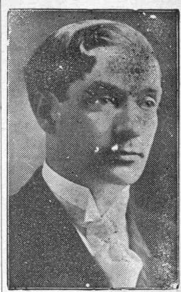Gecrge Young, Ambassador at Large
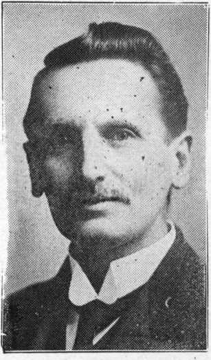J. Emery, British Branch Manager.
The Bible Students' Convention in Magdeburg, Germany, last Year, 15,0C0 Strong
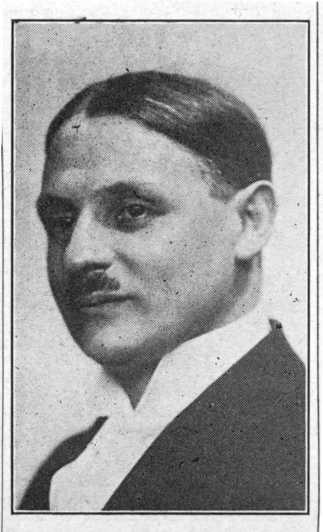Paul Balzereit, Manager of Branch in Germany
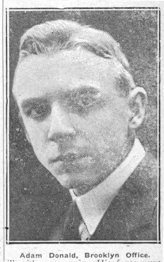Adam Donald, Brooklyn Office.

JUDGE RUTHERFORD PREPARING THE KINGDOM MESSAGE FOR FORTY OR MORE STAT’ONS
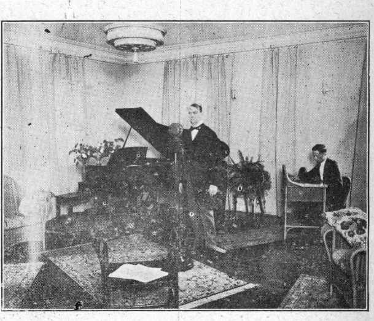THE JUDGE IN ACTION BEFORE THE MICROPHONE AT WATCH TOWER WBBR
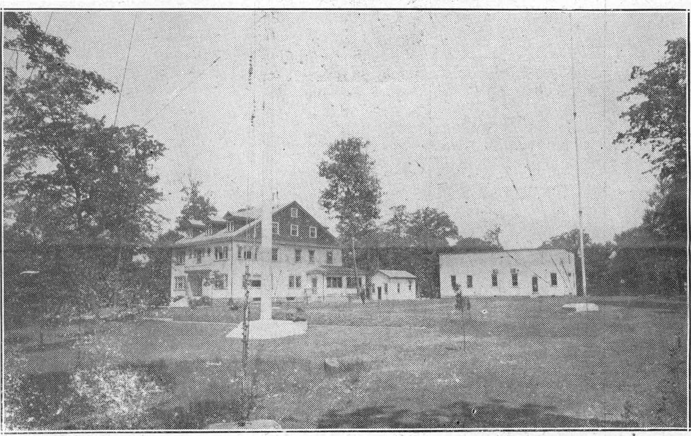SELECTED ABOUT THREE YEARS AGO BY JUDGE RUTHERFORD AS AN IDEAL LOCATION FOR A RADIO STATION. LOCATED ON STATEN ISLAND FAR REMOVED FROM THE GREAT MASS OF STEEL BUILDINGS OF NEW YORK CITY, IT IS CONCEDED, BY EXPERTS, TO BE THE BEST EQUIPPED AND BEST SITUATED STATION IN THE EAST.
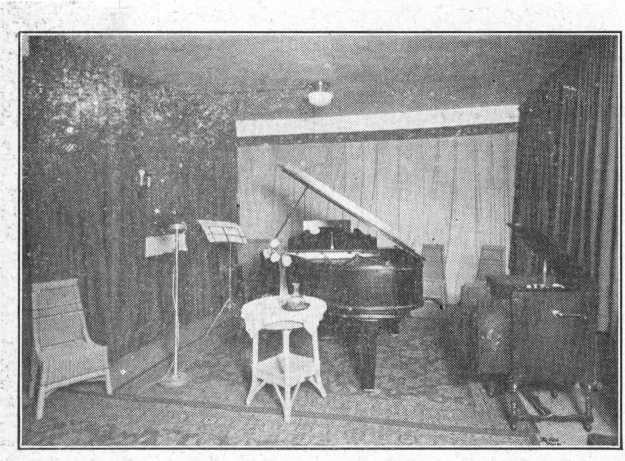WATCH TOWER WBBR STUDIO EQUIPMENT
On account of its novel location in the centre of a considerable tract of land, it is possible to have much better ventilation in the studio of WBBR than in any other of which we have knowledge. The windows are usually left open while broadcasting is going on, which is not commonly possible elsewhere.
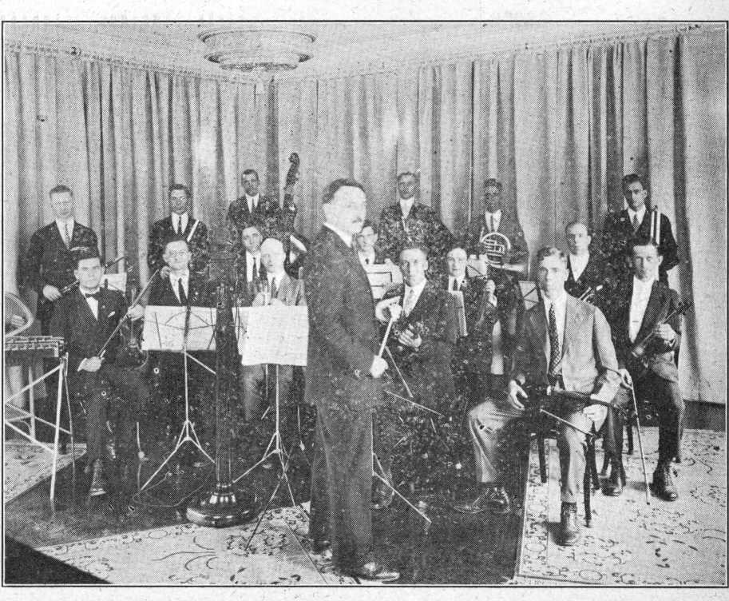WBBR STUDIO ORCHESTRA. SOME OF THESE WILL BE HEARD OVER CKCX DURING THE CONVENTION
OFFICIAL OPENING OF THE CONVENTION
Mayor Foster Welcomes Conventioners
Judge Rutherford Responds to Mayor’s Welcome
Judge Rutherford, ladies and gentlemen, it affords me very great pleasure that I have this opportunity to welcome to the Queen City, the City of Toronto, the delegates from all parts of the world who are attending this magnificent convention. I have much pleasure as the magistrate of the City of Toronto in welcoming you to our city. I extend to each and every one the freedom of our City while you are attend.ng this great congress. I hope after you have completed your very important work that you will remain in the City of Toronto for a day or two so as to have some relaxation from your strenuous work, that you may become acquainted and see something of our Queen City.
We have a City here which is developing /rapidly. To give you an indication of its progress and the public works that are under way, our system of water supply to our citizens has about ninety mill.on dollars invested, which is entirely owned by the people of the City of Toronto, not by private corporat.ons. V, e are) up to the, peak of that suppl We are now duplicating it at aJi efT-penditure whi-h is under way cost-.ng fifty million dollars. We ha.e also a supplementary reservoir, which cost eleven million dollars, to meet the demands for domestic and sanitary conveniences in the northern part of the city, a district which has been developed within the last five years, which I hope you will have the pleasure of seeing. It is very much elevated, some four or five hundred feet higher than where you are located today.
You may observe in coming and going to our waterfront that there is a large work under construction, which is costing the city some twenty-five or thirty million dollars. The object of increasing the improvement is to give facilities for industrial and for large manufacturing sites, and also to assist the people- in crossing froth up town to the water front, to insure the safety of our people. The viaduct is costing some thirty million dollars which is financed partly by the Government, the two railroads and the City of
Toronto. We have under way many public buildings throughout the city that are costing millions of dollars. The C. P. R. which, as you know, almost belts the world, is building a magnificent hotel opposite the new Union Station. This will cost, it is said, between eight and ten milion dollars. In fact, they say it will be the finest in the British Empire.
Let me say, that while you are visiting our City and driving and sight-seeing, you will notice we have some very nice parks opposite the Horticultural buildings and in connection with the grounds. We have about 2,000 acres in parks and recreation grounds. We have a population of about 110,000 children for which we provide supervision throughout the City in the various parks, giving them recreation in the open air to make them good, healthy and bigger future citizens.
In addition to these attractions, we feel that we have in our Queen City almost the finest educational center that there is in America or in the Dom nion of Canada. You will, no doubt, in your sight-seeing, visit Queen’s Park where the Parliament buildings and University are located. We have some forty-eight to fifty buildings in connection with educational work. Some five or six thousand students who attend there come from all parts of the world, indicating the confidence that the people have in the educational facilities in the City of Toronto. We established several years ago a technical school for the purpose of giving special training to the coming generation, and several have been built s.iue, accommodating now about 15,000 students.
I extend to you my deep appiecia tion of your holding this great congress in our City. I thank Judge Rutherford and the rest of you for coming to our City, for I do appreciate this wonderful congress, annost the largest ever held here, and I hope you will be favored with splen did weather during your visit here.
CROWD IN THE COLISEUM AT THE OFFICIAL OPENING
I hope that as you assemble you will exchange views and will benefit mentally and socially and be better acquainted with those who are attending the congress and, after returning home to your own community, that you will have a good word to say of the City of Toronto. I have no doubt after you have been here that you will be able to benefit vour community, giving them advice, our views and what you have heard in addresses. I am sure you will have something special to give your community after this congress, after
PROGRAM TODAY
|
Morning 9:'O 9.30 |
Praise Discourse M. A. Howlett |
|
10:30 |
Discourse |
|
J. F. Rutherford | |
|
Afternoon 2:00 |
Praise and Testimony A. S. Rogers |
|
3:00 |
Discourse F. W. Franz |
|
4:00 |
Discourse E. D. Orrell |
|
Evenng |
Radio Program |
|
10:00 |
Music Musical Resurrection |
|
Dramalogue, “The Return of Little Betty Brown” |
Act I .
Scene I Betty’s Parents Plan a Birthday Party
Scene IT The Party
Act II
(Betty is accidentally killed while at play.)
Scene I Betty’s Funeral Sermon
Scene II Bereaved Parents Discuss the Sermon
Scene III Parents Attend an I.B.S.A. Lecture
Act III
Scene I The Visit of Benjam n, a Friend
Scene II The Happy Reunion
you have heard Judge Rutherford next Sunday, when he will, I have no doubt, well please not only Canada, but the world by his address, which is to be broadcast from the Atlantic to the Pacific, from Canada to all parts; and I am sure the public will appreciate his wonderful address to be given next Sunday.
I again congratulate you for having your congress here. I am glad to meet you, I am sorry to part, but I hope you will all come again soon.
Mr. Mayor and the good people of Toronto, I have much pleasure in acknowledging the words of greeting spoken by the Mayor. I received a letter from him some months ago inviting us to hold this convention here, and I was favorably impressed from that time. The treatment accorded us in Toronto and by Toronto’s officials has been unusually kind, and we appreciate it very much. It has been my good pleasure to visit every city in Canada from Quebec to Vancouver, and I unhesitatingly say that Toronto stands at the head of the list. Canada is a wonderful, resourceful country. It has great rivers, wonderful lakes, marvelous mountains, broad fields. It produces practically everything that man wants; and if a man should be thankful anywhere on earth he should be in Canada.
Why is it so wonderful? The great Jehovah God, the Creator of heaven and earth, made it. That is the reason. Long years ago the Indians lived here; and when the white man came he began to improve it and that improvement has progressed until today we see many wonderful things that were not dreamed of when Toronto began. I speak to you in an ordinary tone, and, with instruments provided, the voice is carried throughout the hall. Not only this, but with a similar instrument the voice is broadcast throughout the land that an audience of millions of people may hear and hear distinctly. Of course, many men not knowing otherwise have thought that these things have come about because of the wisdom of man. The prophet of God, however, more than 3,000 years ago wrote about the radio and now we have come to the time when the Lord has brought it to pass; and it is our privilege to use it to His glory; and we have come here for the purpose of magnifying the name of Jehovah and giving witness to the good people of Canada and of the United States and all other places that might hear concerning | God, His promises, His kingdom and the blessings that He has in store for all the families of the earth. I am happy to know, and I am sure that you are happy, that, as we observe the progress in this new land and see the people making improvements, we are much happier to say that the time is not far distant when the improving will be far greater. Toronto shall continue to grow, the beauty of Canada shall continue to grow, and the beauty of the people shall continue to grow, because the knowledge of Jehovah God, of His kindness and His glory shall fill the whole earth as deep as the lake out here, ana much deeper, until all shall know Him from the least unto the greatest. And then it will not be necessary to hold conventions and for people to travel for thousands of miles to come together to tell each ■>ther about God, but all shall know Him from the least to the greatest, because we are entering pon the time in which the people shall know; and it is our privilege to be students of His Word to try to ,"s w ’<• s ,o^iklderstand- His __ goodness and His provision for jRtc benefit of mankind. We would live in vain if what little we do here hould pass awa ■ for ever, but we know that Jehovah created this earth for the benefit of man, that He purposes to make the earth a glorious place and that He has promised to restore and will restore the human race to perfection until all men shall become as youths, their flesh become fresher than a child’s, their eyes keener than any we have seen, their wisdom surpassing anything we have known and, above all, possessing joy and health and life everlasting. I call to mind that you have come here from every part of the earth to th:s convention, -to bear witness, from the United States, from Continental Europe, from Great Britain, from Australia, from South America, and every part of the world. We have come as one people, with one heart and one purpose, to glorify God and do something good for our fellow man. I hope that everyone of you here will bear witness to the Toronto people by the course of action which you take, that you are looking to a better time for them and for us and that you are happy to know and happy that they shall know that all peoples upon this earth will dwell together in happiness. The friendship of America, Canada and Europe should unite all the peoples all over the earth, and will in God’s due time, and we are glad to see it starting now. 1 am sure that you will enjoy this convention. No better place could have been selected. The climate is good, the people are kind, everything is for your pleasure; and I am sure, Mr. Mayor, that we will enjoy the hospitality of Toronto very much, and I thank you and thank the City.
CROWD IN THE COLISEUM AT THE OFFICIAL OPENING
“COME OVER INTO MACEDONIA”
Colporteurs Bowen have a very up-to-date house-car fully equipped with bed, etc. A little closet holds their clothes; a cupboard contains their eatables; two leather-covered ramps on the side of the car serve as seats and also contain the Society’s books which they sell. Windows are beautifully curtained and a carpet on the floor matches interior decorations. The house-car was erected on a Ford truck chassis.
Mr. and Mrs. Bowen, colporteurs, left Amarillo, Texas, on May 28th, a distance of about 2,000 miles from Toronto. They travelled in this house-car.
They canvassed nearly all the way to Wichita, Kansas, where they
I.B.S.A. REPRESENTATIVES ON THE GOLD COAST
The British and French know more about the Gold Coast of Africa than do most people on this side of the Atlantic. In the old slavery days there were plenty of Bostonians who knew about it, for it was largely to the Gold Coast that the slave ships of Boston went for their
ANY INCREASE IN RAILWAY FARES DOESN’T WORRY THESE BIBLE STUDENTS
cargoes of living freight for the cotton fields arid the Carolinas.
The Gold Coast is a name generally applied that great shoulder of Africa which projects
of
Georgia, Alabama
From Carbondale, Illinois, to Toronto, on. foot.
to for
the under side of over a thousand
stopped for a three-day convention, June 10th, 11th and 12th. There were about 240 students there.
They went from Wichita to Topeka, Kansas, and from there found concrete roads all the way to Toronto. They stopped • three days in Kansas City.
They had a slight accident in Topeka. Their house-car was parked by the side of the road when a wheel came off another man’s car, and the car hit the house-car, damaging the wheel and fender.
They celebrated the 4th of July by going on a drive with the St. Louis, Missouri, class.
They like the house-car fine as it saves lots of housework, and they have no other object than to continue in the colporteur work.
miles out into the bosom of the Atlantic. It is one of the world’s great, storehouses of raw materials, producing such quantities of vegetable oils that the rivers which run jlown from the edge of the Sahara into the Gulf of Guinea are sometimes called the Oil Rivers.
In this part of Africa are found some of the most intelligent specimens of the Negro race. With a very little opportunity they become lawyers, doctors, government officials, or what not. Their descendants in America to-day are rapidly rising in the scale of material advancement, and there is no class of work for which they can not and do not fit themselves.
It is now several years since the Society opened an active campaign for presenting the truth to these progressive natives, in their own land. If it were not for the garb of honor on the central figure of the picture, no one would know but that the accompanying picture was taken in one of the southern states instead of in Africa.
The facial expressions, the beaming countenances, the clothing, the furniture and the postures all show the wonderful possibilities for
Mrs. Grace C. Hall and her daughter, Lottie M. Hall, age 15 years, left their home at Carbondale, Ill., on Sunday morning, July 10th, at 8.00 a.m. Mrs. Hall is the mother of six childlren, Lottie being the eldest.
I.B.S.A. REPRESENTATIVES IN SPAIN
In some sense of the word, eight is a perfect number in the Scriptures, and so it seems quite appropriate that our representatives on the Iberian Peninsula should be eight in number, Some of these are quite youthful; see the picture!
The work of 'the I. B. S. A. in Spain and in Spanish-speaking countries is not large, as the world counts size. For instance, it could not be said of all the Watch Tower subscribers in Spain, Fear not,
They carried with them one Boston bag and one sample case. They only walked about two" miles when they were picked up and taken eight miles. They walked a little farther and then were given a lift of about 50 miles. They were picked up about six or seven times on that day. After covering about 200 miles of their journey they stayed that night in Bloomington, Illinois.
They stayed in Bloomington with some people who were much interested in their trip, and as they were going on a little trip themselves the next day, decided to go about twice as far raid took them to Pontiac, Michigan, just to help them along. That night they stayed at St. Joseph, Michigan, with 179 miles more of their journey behind them.
On Tuesday it rained, and after covering 61 miles, they stopped at Marshall, Mich., for the night.
On Wednesday they travelled from Marshall, Michigan, to Windsor, Ontario, a distance of about one hundred miles. They stopped there
the spread of the truth among these kind hearted and intelligent people, so long down-trodden by the devices of the Adversary. Those who love the Lord will look into theses faces with unusual interest.
early in the evening as tired. Mrs. Hall had blisters on her feet that stop and doctor them.
they were so many she had to They at-
at Detroit
the western seas
first from
was The God
Reformation was at hand, and___
had prearranged that liberty lovers from all over the world should sail
pleasure to give you the
for it is your Father’s good
would be appropriate to the Roman church, not the
nevertheless, considerable work to do in taking care
was able to sail
with a confidence born of assurance
that he would find land in season.
As a matter of fact the land found just in God’s due season.
great big flock, kingdom. That Lord’s.
But there is,
Norse records in Iceland, and with this knowledge in his possession he
Columbus obtained his knowledge about America
of the interests of the subscribers, which now run to several hundreds in number. Some one must answer the letters, mail out the books, look after printing and distributing, etc.
will be appaFenr^hat the Spanish representatives are just one •” happy family in the Lord. At this distance it does not look as if the two little folks sitting on papa’s knee would be of much assistance in the work, except in the warming of papa’s and mama’^ hearts, as they look forward to the blessings coming upon their heads when kingdom blessings are everywhere abroad in the earth.
To be sure, America was really discovered by Leif Ericson. This fact is now universally conceded by American scholars. Relics of his expeditions to this land have been found which leave the matter no longer open to question. But the Norsemen did not continue their voyages, and the few whites that they left on American shores drifted south, and were manifestly the progenitors of what are called the White Indians of Panama, a race of Indians far above the average indicating in various ways their origin in one of the Nordic races.
tended testimony meeting with the friends in Windsor. _____ •
morjin^ they^lef?^ Wmdsoi’. -at eight o’clock and were soon picked up by a man driving alone to New York. He was much interested in their trip* and was glad to have their company to Hamilton, a lift of nearly 200 miles. They did hot even stop for lunch and Lottie was found tightening up her belt every little way.
In Hamilton they were picked up by a Ford jitney, which took them, free of charge, to the highway. They arrived in Toronto on Thursday evening. -
HARMONY OVER CKCX
Those who had the pleasure of listening in last night over CKCX will not soon forget it. We do not claim for Bible Students that they are the best musicians in the world, but in a jazz-mad age, when there is so little real music and so much anarchy in the realm of sound, it is refreshing to hear high class music played the way it was played last night.
There is something about the truth that puts music into a man’s heart. He understands the reason for the deep diapason of trouble that has for thousands of years borne down the hearts of men, the reason for the moaning of the prisoners, the reason why the notes of hope have been so few and so soft and tremulous. In his heart ’ he hears the Hallelujah Chorus coming, and he loves to express it at every opportunity.
All the performers over CKCX last night were truth-lovers. Loving the plan of God, and the Author of that plan, and with the , consciousness that all that they do is done for Him, we can be pardoned if we say that we detect, in their renditions of the work of the old masters, a sympathy and feeling which is not often found.
The selections for broadcasting over stations of the I. B. S. A. are made with care. The music, .shelves of Europe and America have been made to deliver up some of the very best compositions, in addition to which, at some of the- stations, songs have been used which
due
have not reverence a general good and
found expression elsewhere. All of these songs breathe a for Jehovah, which is refreshing in a day when there is such neglect of the Father of lights from Whom cometh every perfect gift, including music.
COWARD Judge Rutherford’s Representative at Detroit
America is the land of opportunity for the downtrodden and oppressed of Europe. While this is true to a considerable extent of Canada yet it is specially and most emphatically true of the United States, which has become the home of millions of people from every part of Europe, and, for that matter, every part of the earth.
There is no question but that the hand of God is discernible in the hiding of the American continent from the warring powers of Europe until God’s due time, and it is interesting that that due time coin
across the great sea and find conditions which would be more favorable for the unhampered study and circulation of the truth than was possible in most European lands.
And so it happens that we now have on American shores all kinds
of nationalities.
the United
Among these, in
States, are several
million people who trace their origin to Poland, Czechoslovakia, Hungary and Lithuania.
It was not possible for some of these to find their way into Canada and back again, and it would have been difficult for some for whom it was entirely possible; and so, having in view the difficulties of language and of customs barriers, Judge Rutherford decided that these should have their convention in Detroit, but at the same time that the other I.B.S.A. conventions are
being held here in Toronto. E. J. Coward has been sent to Detroit as
cided so closely with the invention the President-s representative at that
of printing.
convention.
Mrs. Grace Hall and Daughter
These folks were not financially able to come on the train and there was no one from their class coming by car.
When asked if they were not afrrid to take such a trip, Mrs. Hall replied : “No, not a bit, I knew if the Lord wanted me to get to the convention I would get there.”
E. J. COWARD Judge Rutherford’s Representative at Detroit
Mrs. Grace Hall and Daughter
BETHEL SPECIAL ARRIVES—“CY OF THE LEHIGH” _ . IN CHARGE
The “Bethel Special” arrived at the Exhibition Grounds promptly on time at 8:25 a.m. Monday. Our friend “Cy”, though not a Bible Student, was, nevertheless, very much interested in the crowd of 305 people who were under his supervision on this train. Cy expressed himself as being surprised at the many different nationalities on board. There were Lithuanians, , Polish, Greek, Armenians, Syrians, Germans, English, Italian and colored. Cy dubbed the train the “Melting Pot”. He is manifesting some interest in the truth, and will have to watch out or he will be a Bible Student in the Melting Pot himself.
The Lehigh train left Pennsylvania station, N.Y., Sunday night, July ’17th, friends joining it at Newark, Plainfield, Easton, Allentown, and Wilkes-Barre, Penn. There were nine sleeping cars, two coaches and one baggage car, with delegates from Connecticut, New York, Pennsylvania, New Jersey and Texas. .
Some one was heard to remark that only two persons were seen smoking cigarettes on the train; of whom one was Cy and the other a stranger.
When the train left New York the heat was oppressive, but in the early evening a shower of rain cooled the air so that it was uncomfortably cool during the night.
DETRAINING FROM THE BETHEL SPECIAL
- Radio Lecture, broadcast from Station CKCX, Toronto, by Earl L. Beaulieu, July 19, 1927, 8:20 P.M.
In spite of our best endeavors, things go wrong. However, we can take fresh courage; for the old order is passing and a new world is beginning. Earth’s new King tells us: “Behold, I make all things new.”—Revelation 21:5.
Man’s troubles began with the deception of Eve by Satan. Mankind soon reaped the results of sin: sorrow, suffering, and death. Forced out of the garden of Eden into the inhospitable earth, the descendants of Adam competed for the limited good things of the earth. Poverty led to selfishness. Mankind imbibed the spirit of the Devil and began to oppress one. another. Oppression is injustice. With varying characters and changing scenes the play has gone| on until the present time. There is no new thing under the sun.
Threefold Change
However, “He that sat upon the throne said, Behold, I make all things new.” To bring about a complete reversal in earth’s affairs, three changes must take place f (1) In rulership; (2) in the economic conditions; and (3) in man’s heart. This change is prophesied. “We, according to his promise, look for new heavens and' a new earth, wherein dwelleth righteousness.” (2 Peter 3:13) Formerly marfy
The train crew found they could not give us heat, because the steam couplings were not connected. They did not anticipate such a sudden cold spell. Nobody complained, however.
The first incident of importance occurred at the boundary, when the Canadian immigration officials boarded the train for purposes of inspection. To the majority on the train this was a new experience. However, the officials accepted the word of Mr. Kammerlein and R. H. Barber, who were in charge of the Bethel Special, to the effect that the delegates did not carry any contraband ; and consequently the suitcases were not searched. As the officials approached the train, two men were standing on the rear platform. The officials mistook one of them for a Chinaman. It seems there is some law against Chinamen entering the Dominion. Boarding .the train at the front end they demanded to know where the Chinaman was, insisting that they had seen him on the rear platform. Mr. Barber protested that there were no Chinamen on board. Never, theless they refused to be convinced, and a search was instituted. Mike John, a Syrian Bible Student, of New York, was found on the rear platform. He it was who had been mistaken for the Chinaman. We failed to see any resemblance, however. John enjoyed the joke hugely.
believed that the literal heavens and earth are to be burned up. Bible students today know that the Apostle Peter had no such thought. He looked forward to the supplanting of the present social, political and ecclesiastical order by a new regime. The old heavens has been composed of Satan and his cohorts. The old earth is the present iniquitous league of big business men, big politicians, and big ecclesiastics.
The new world will be composed of a spiritual ruling power (heavens), and its earthly representatives (earth). With Satan bound, the present spiritual ruling powers will be no more. The new King will have His own heavens, the church.
The return of the Jews to Palestine marks the beginning of the new earth. When they have returned, there will be fulfilled the words of Jeremiah: “This shall be the covenant that I will make. . . . I will put my law in their inward parts, and write it in their hearts.”— Jeremiah 31 :31-33.
Princes
The leaders of the children of Israel at that time will be the awakened worthies of old, Abraham, Isaac and Jacob, and all the prophets. Jesus informed the religious rulers of His day: “There shall be weeping . . . when ye shall see Abraham, and Isaac, and Jacob, and all the prophets, in the kingdom of God, and you yourselves thrust out.” (Luke 13:28.) They shall see them as princes on the earth. Jews are not to be alone in the new earth. “The Gentiles
The officials were very kind and generous, only requiring to see the papers of those who were not American-born citizens.
It was a hungry crowd that arrived in Toronto, having eaten an early supper, and not a diner or sandwich man on the train! Wm. Frange was prepared to take a picture of the friends as they came off the train, but they were all so hungry they scattered in every direction, and the picture was not secured.
One novelty in connection with this train was that sleeping accommodations were not sold through the regular ticket office, but sold by Cy himself, who passed through the train and sold berth tickets to those who held the seats. This saved the friends the trouble of standing in line for hours to get their sleeper tickets. However, Cy did not like it because it involved two hours and a half of hard work for him, and it was so warm in the train that he surely earned his salary.
The “Bethel Special” will leave the Exhibition Grounds, Monday, July 25th, at 8:30 a.m. Standard Time. The friends will spend the afternoon and evening at Niagara Falls, leaving Niagara at 12 :30 p.m. Standard Time, arriving in New York at 11:30 a.m., Tuesday, July 26. The train will consist of standard sleepers, and day coaches.
[also] shall come to thy light.”— Isaiah 60:3.
Equality and Plenty
Not only will political and social equality be preached? it will actually be practised. “The lofty looks of man shall be humbled, . . . and the Lord alone shall be exalted in that day.” (Isaiah 2:11) In the past much of the substance of the earth has been wasted in the riotous living of a few, in disastrous wars, and through an inefficient industrial system. In the new world plenty will prevail. “The desert' shall rejoice, and blossom as the rose.”—Isaiah 35:1.
“All nations shall flow unto it ithe new world]. They shall beat their swords into plowshares . . . nations shall not . . . learn war any more.”—Isaiah 2 :2-4.
New Spirit
The permanency of the new order is secured by a new perfect foundation—a new spirit, the holy spirit of God. “I will put my spirit within you, and cause you to walk in my statutes.” (Ezekiel 36:26-28) . It is because mankind will imbibe this new spirit that they shall obtain the blessing of the new age.
To enjoy these blessings man must first of all live, and then be in such physical health that he may enjoy life. Life itself is the greatest gift in the power of the new King. “Whosoever liveth and believeth in me shall never die ” (John 11:26) Instead of dying, they shall become perfectand the physical ailments of mankind will cease to exist.—Isaiah 35:5, 6; Revelation 21 :l-5.
While Mr. and ‘Mrs. J? T. Shaw of Australia boast the age of three score years* and ten, they are still the “young men” who see with much clearness kingdom visions. They are young in spirit and in zeal for the Lord. Their interesting report follows.
“We left Sydney on May 5th, and ever since that time the dear Lord has guided us all the way. We brought along all the literature we could possibly carry, and disposed of it among' our fellow passengers.
From Far-Off Australia
asking the party to read them, and
We could have disposed of much more had we had it with us. Qur method was to give the books away, to pass them on to others.
“We found some who evidently had hearing ears. We greatly rejoiced in noticing the difference in the attitude of the people tqday, as compared with our last visit to these parts about two years ago.
' “There ’ tiemen' coi
not
and, Without being invited?"’^sailed • us because we did not belong to any ; sect or ’creed.; He said that he , knew who we were, “Sheep stealers and nothingisms.” We calmly replied that if the shepherds watched and fed their flocks the sheep could not be stolen, for the Lord said: “My sheep know My voice and they follow Me,” and that the clergy, as a class, were responsible for the straying of the sheep in our day.
“Upon reaching Auckland, New Zealand, we spent an evening of weet fellowship with the Gates family. It was evening when we arrived at Suva, Fiji Islands, and the office of the Bible Student there was closed.
“On reaching Honolulu we were met by the dear ones and had a delightful time of sweet fellowship, especially as they see and understand the beauty of the up-todate Watch Tower articles.
“On the way to Vancouver we learned that Mr. G. R. Pollock was to speak on Sunday. We told many on board who had become interested in the glad message, and some decided to wait over the week-end and hear h;m. Two ladies, fellow passengers from New Zealand, were so earnest that we took them to stay with us. They told Brother Pollock that they were favorably impressed with his lecture. They crossed the Rockies with us and stayed a few days at our daughter’s home in Alberta, and left rejoicing in what they had heard, promising to give the glad news to their relatives in New York.
“We had many such privileges of givmg out the message on our way to the .convention. On the Great Lakes steamer we were greatly assisted by dear Mrs. Ilett from Watertown. N. Y. She was never tired of singing the praises of our heavenly Father. Through our combined efforts many promised to come to the convention. Others are having the literature sent to them. .
“We had rather a hard case in connection with two ladv missionaries from China. We all enjoved the conversation until we touched on eternal torment and the trinity. Then thev lost their tempers and became bitter, one pointing her finger and saying. ‘Ah, I know, a second chance.’ They knew they would be ‘caugbt up’ at any minute and
the wicked were for ever dead. They said they felt that we were sincere, but they were very sorry for us. We replied, ‘Oh, please be sorry for yourselves, because we know we have the Truth.’ However, we gave them a loving invitation to come to the convention.
“Now we are here in the very heart of the convention, and ;t ail seems so wonderful! We really feel' that we are in the presence of the Lord, realizing the meaning of the words: ‘No vail between the Father and His children today.’ ”
Every person who has ever read the Bible has read the interesting story of Peter and Rhoda and had a good laugh at both Peter, and Rhoda’s expense. We remind the fiible Students of it.
Peter had been put into prison for preaching Jesus Christ, and for healing the cripple and doing some other things that were very offensive to the doctors of divinity, the professors in the theological “cemeteries” and other dignitaries, and he could not get out
And so it was that an angel of the Lord came in during the middle of the night, gave Peter a friendly kick in the side and told him to get up and get out of that place. Peter was all in favor of getting out, but he was handcuffed. The angel just gave the shackles a rap and away they went clanging to the floor. Then one of his unseen pals opened the prison door, and, the first thing Peter knew, he was out on the street.
go it alone. Peter went on down
flights finally Rhoda to see should
person
;men . on
that no evil-minded come and. do to the been done tp; Peter.
she<&-
. __^lts, r irtside. ,
But Peter, man-like, and, mad all the
was
all the' g to 1
house'and t without thin
what had
The angel went with him for a block or so and then left Peter to the street, turned to the first right, the second left, and up two of stone steps (maybe) and icame to Mark’s house, where Iwas waiting and watching way through because he had been jugged, wanted to get inside, and rattled and banged away at that gate enough to tear it off its hinges. If he could have gotten hold of Rhoda for a minute she would have received what the gate received.
Well! When C. E. Stewart showed up at Toronto he was like Rhoda (at the gate. The first thing he did was to call up the spacious offices of The Messenger—which consist of a plank across two sawhorses—and wanted to know if he could do anything. Well! For the love of Peter! Can you imagine it?
Here was The Messenger almost dying to lay hands on him and draft Jhim inljp the Lord’s service! If [there had bgen. .any way of pulling |him over that wire insteacEo t telling-
C. E. Stewart at Work
him to hurry up and get down here, that would have been done. Would that . .there were more really consecrated Christians in the earth like Charles E. Stewart, people who, when they get to convention, are really trying to see what they can do for the Lord, and who try, with no self-interest, to do for Him all that Ijes ip their power.
DETRAINING FROM THE BETHEL SPECIAL
C. E. Stewart at Work
WITHOUT a question of a doubt the Scriptures show that it is God’s purpose to establish a righteous government on earth for the benefit of man. He has promised it and He will bring it to pass. Before He establishes that righteous government, however, He teaches the people important lessons. Every time the people fall under the oppressive rulership of Satan and his earthly representatives and God rescues them that fact furnishes proof that God is the true Friend of man. The people must come to know that Satan is their enemy and that their help comes only from Jehovah. When this lesson is learned the people wid appreciate God’s righteous government.
The loving kindness, the Tong-suffering and patience of Jehovah is marvelous in our eyes. His perfect wisdom enables Him to know just what is the proper time to establish His righteous government. Long ago He began to make pictures foreshadowing His organization through which the people will be blessed. He organized the Israelites into a nation, and gave to them a code of perfect laws. The factl that the Jews did not keep that law is no evidence it was not perfect. What He did lor them was not so much for ' their benefit alone but to teach lessons to all people to love righteousness and hate iniquity.
An organization is a systematic arrangement of creatures or parties to carry into operation a fixed plan of action. “Known unto God are all His works, from the beginning of the world.’’ ^(Acts 15:18) Having a fixed plan of action from the be-gitining, God, of course, would have a systematic arrangement of His creatures for the carrying of that plan into operation. (1 Corinthians 14:40) The very creation of God testifies that He does everything in order and with proper organization. “The heavens declare the glory of God; and the firmament sheweth His handywork. Day unto day uttereth speech, and night unto night sheweth knowledge. There is no speech . nor language, where their voice is not heard. Their line is gone out through all the earth, and theii words to the end of the world. In them hath he set a tabernacle for the sun.”—Psalm 19:1-4.
Order is one of the hardest lessons- foY creatures to learn. A de-■’ flection from God’s way is displeasing to Him. Deflections of the human race are usually caused by ■ weakness and by being overreached by others. A wilful and deliberate going contrary to the Lord’s appointed way is treason.
Humility means to be submissive to God and to follow His appointed ways. Humility is the very opposite of pride. “Pride goeth before destruction, and an haughty spirit before a fall.” (Proverbs 16:18) God pushes the proud away from Him, and shows His favor only to the humble-minded. (1 Peter 5:5.) He who joyfully conforms himself to the way of God proves his love for God. (1 John 5:3) We may be absolutely certain that the All-wise God has one way for carrying into action His plan. It would be inconsistent for Him to have divers ways. It has ever been the policy of the Devil to induce men to believe that they have a sufficient amount of initiative and wisdom to make their . own arrangement, and to carry it out without reference to the Word of God. Those who follow such a course come to grief. “Great peace - have they which love Thy [God’s]
law: and nothing shall offend them.” (Psalm 119, 165) Nor shall they be turned away from God’s organization and plan of action. If they love the Lord’s way and joyfully seek to do it they will trust Him implicitly, and thus doing will enjoy the peace of God that passeth the understanding of men. The evidence is overwhelming and absolutely conclusive that God has a plan. Man must learn God’s systematic method of organization for carrying His plan into operation. This is what we are studying this evening. Man should not spend all of his time in trying to learn if God has a plan. That should be easily understood. Man should devote himself to ascertaining how God is carrying out His plan, and then get himself in exact harmony with God’s way and Joyfully follow therein. *
RUTHERFORD, PRESIDENT OF THE INTERNATIONAL BIBLE STUDENTS ASSOCIATION
From the time of Eden until the overthrow of Egypt the great lesson God was impressing upon the minds of His willing and obedient ones was that the Lord is the Almighty God, in whom is vested wisdom, justice, love and power, in equal and exact balance. He selected the descendants of Jacob, otherwise called Israel, and organized that people into a nation in furtherance of His own fixed plan. The first lesson that He taught the Israelites was that the Lord is God. For their benefit He got Himself a name when He overcame the Egyptians and over threw their false gods. The lessons given Israel were for their benefit, and for those who should follow thereafter.
A shadow is a reflected image, as from a mirror or from the clear surface of still water. It is the representation of something real. The word type is sometimes used in a similar sense. It is a figure or representation of something to come. God’s dealing with the nation of Israel, and particularly in the law which He gave to that people, was to foreshadow better things coming later. As the Apostle Paul puts it: “Which are a shadow of things to come” (Colossians 2:17); and “for the law, having a shadow of good things to come.” (Hebrews 10:1) Referring then to the experiences of Israel the record is: “Now all these things happened unto them for examples: and they are written for our admonition, upon whom the ends of the world are come.” (1 Corinthians 10:11) Based] upon these and corroborative scriptures, the conclusion is reached that the nation of Israel, organized by the Lord, was His typical organization and foreshadowed something better to follow in God’s due time. For this reason the Lord’s dealings with Israel hold the greatest interest to all who desire life and who would know God’s way of leading men to life and happiness.
him to again begin to people the earth. The young man Abram chose the way of faith and trust in the Lord God. (Genesis 12:1-3) In obedience to God’s command Abram left the land of his nativity and journeyed to the strange land then occupied by the Canaanites and hence known as the land of Canaan. (Genesis 12:7 Then Abram journeyed on to the south part of the country. There was a famine in that land, and Abram went on down into Egypt.
To Abram God had made the promise that he should have a seed, and that through him and his seed the blessings of all the families of the earth should come. The Devil hated that seed. (Genesis 3:15) Doubtless he knew of the promise made to Abram. He therefore began to devise a scheme to have the wife of Abram debauched by Pharaoh, one of Satan’s own servants, and thus compel God to either accept this unholy offspring as the seed or
The beginning of God’s typical organization was Abraham, who was first called Abram. He was the grandfather of Jacob, afterwards called Israel. He is known as the father of the faithful. He was counted a righteous man and the friend of God. As a man he was imperfect, of course, being one of the descendants of Adam;' but his heart was right and he believed on and served God, and therefore his faith was counted for righteousness. —Romans 4:9, 24.
Abram resided with his father Terah in Ur of the Chaldees. Only two generations had passed since Adam’s death, and by tradition Abram would learn of Adam’s wrongful course. He would learn about Abel, and also how God rewarded the faith of Enoch. r Ke would learn, too, that it was. the faith of Noah that caused God to save him from the flood and to use and said: “I am the Almighty God; walk before me, and be thou perfect. . . . Neither shall thy name any more be called Abram, but thy name shall be Abraham; for a father of many nations have I made thee. And I will make thee exceeding fruitful, and I will make nations of thee, and kings shall come out of thee. And I will establish my covenant between me and thee, and thy seed after thee, in their generations, for an everlasting covenant, to be a God unto thee, and to thy seed after thee. And I will give unto thee, and to thy seed after thee, the land wherein thou art a stranger, all the land of Canaan, for an everlasting possession; and I will be their God.”—Genesis 17:1, 5-8.
else repudiate his own word. Satan so arranged it that the princes of Pharaoh would see the beautiful wife of Abram, and then go to Pharaoh and commend her to the king, who, to gratify his lust, would be an easy tool to carry out the Devil’s scheme. (Genesis 12:15-17) Accordingly Pharaoh had Sarah, the 1 eaubful wife of Abram, brought into his palace, intending to gratify himself. But the Lord God protected Abram and Sarah by bringing great plagues upon the house of iharaoh; and the king, becoming alarmed, sent Sarah away undefiled, failed another wicked scheme of Satan.
Abram then returned to the land of Canaan, and God again made promise to him that he should have that land for himself and for his ..ecd after him. (Genesis 13:15; When Abram was ninety-nine years old God appeared unto him
Ever on the alert to thwart the purposes of the Lord, again Satan made an attempt to have Sarah, the wife of Abraham, debauched that the promised seed might be defiled. Again God thwarted the wicked one’s purpose.—'Genesis 20:1-7.
When Sarah had passed the time according to women, and Abraham was one hundred years old, God overruled these seemingly unfavorable conditions and caused Sarah to conceive and bear a son; and he was named Isaac. The Lord made the promise then to Abraham: “In Isaac shall thy seed be called.” (Genesis 21:1, 12) That Isaac foreshadowed “the seed of promise” through whom the blessings must come to mankind is clearly stated by the divine record. See Galatians 3:8,. 16; 4:22-28, •y - .
At this point God made a living picture which foreshadowed the unfolding of a part of His plan. In this picture Abraham was used to represent God, while Isaac was used to represent the only begotten and beloved Son of God, who was afterwards called by the name Jesus. Abraham’s offering of Isaac upon the altar foreshadowed that the Son of God would be offered as a great sacrifice to provide a sin offering for the benefit of the world, to the end that i~ God’s due time the peoples of the earth might be delivered from the enemy; from his wicked influence and from his wrongful acts which had brought death upon the human race. Abraham did not understand what the picture meant. With him it was purely a matter of faith. God commanded him what to do and that he did. It was a test of Abraham’s faith, but he bravely met the test and God rewarded his faith.
In making this picture the Lord God directed Abraham to take Isaac, his only son, whom he loved dearly and in whom he had all of his hopes centered, and to go to Mount Moriah and there offer up his son as a burnt offering. Because God had told Abraham that “in Isaac shall thy seed be called” and that the blessings shall come through him, this was- a crucial test to offer up as a sacrifice this only son. In obedience to the Lord’s command Abraham provided wood for the altar, fire, and a knife; and with this provision he and his son journeyed to Mount Moriah. Abraham built the altar, laid the wood in order, bound his ■ on. Isaac and laid him upon the l’ar upon the wood, and then tretched forth his hand and took the knife to slay his son. In another instant the knife would fall and his son would be dead. God’s purpose here was to test and prove
J. F. RUTHERFORD, PRESIDENT OF THE INTERNATIONAL BIBLE STUDENTS ASSOCIATION
Abraham’s faith. Having met the test the Lord God arrested the hand that would have slain the son. The record reads:
“And the angel of the Lord called
Jacob became
had twelve sons, and they . Emphasis is here laid upon the the heads of the twelve point that God provided by this
unto him out of heaven, and said.
tribes or divisions of the nations of Israel. Jacob grew old, and the time came for him to die. He called before him his sons and, his mind
covenant, and the law thereof, that
______ en, anu miu, ------------
Abraham, Abraham: and he said, being moved upon by the invisible Here am I. And he said, Lay not power of God, he uttered this thine hand upon the lad, neither great prophecy: “The sceptre shall do thou any thing unto him: for not depart from Judah, nor a lawnow I know that thou fearest God, giver from between his feet, until seeing thou hast not withheld thy Shiloh come; and unto him shall son, thine only son from me. And the gathering of the people be.”— Abraham lifted up his eyes, and Genesis 49:10.
this
law-
shall
looked, and, behold, behind him a ram caught in a thicket by the
Sceptre means the right to rule.
ram caugm iu <*
horns; and Abraham went and took The lawgiver means one who shall the ram, and offered him up for guide the people in the way that a burnt offering in the stead of his they shall go, who shall shield and son. And Abraham called the name protect them and teach them the of that place Jehovah-jireh: as it is way to life. Shiloh means the said to this day, In the mount of Messiah, or great Deliverer. “Unto the Lord it shall be seen. And Him shall the gathering of the the angel of the Lord called unto people be.” Thus the' Lord God Abraham out of heaven the second caused a prophecy to be uttered by time, and said, By myself have I Jacob, foretelling the coming of sworn, saith the Lord; for because Him who would undo the evil work thou hast done this thing, and hast of the Devil and who would do also not withheld thy son, thine only son; that which Lucifer should have that in blessing I will bless thee, done when he was perfect, before and in multiplying I will multiply iniquity was found in him.
thy seed as the stars of the heaven, and as the sand wh.ch is upon the
Law Covenant
sea shore; and thy seed shall pos
sess the gate of his enemies; and We left the children of in thy seed shall all the nations of standing safely upon the eastern the earth be blessed; because thou shores of the Red Sea, singing a hast obeyed my voice.” (Genesis song of deliverance from Egypt. 22:11-18.) The shadow made by (Exodus 15:1-21) Three months this picture was afterwards carried later they were in the desert land out in every particular.—John of Sinai. Moses, whom God had 3:16, 17. used as their deliverer from Egypt,
Afterwards, Rebecca became the went up into the mountain; and wife of Isaac, and Rebecca was there the Lord God said unto’ him : barren. Then Isaac entreated the “Thus shalt thou say- to. the house Lord for his wife, and Rebecca LlifftflAtF
Twin sons were born Israel: Ye have seen what I did
Israel
the people should have no other gods beside Him; that they should make no graven images, and should not bow down to them nor serve them. What was the moving cause for this law? Was it because Jehovah feared that His adversary, His disloyal son the Devil, would get the worship to which He, the Lord, was entitled? Was it selfishness on the part of God that moved Him thus to provide by the law that there should be no other
। gods ? No! None of these reasons is correct. The Devil has made many men believe that it was selfishness that induced Jehovah to act, but this is not true. God had already demonstrated His unlimited power and His ability to destroy the creatures of heaven and earth, including Satan the Devil, whensoever He might desire. It is impossible for God to fear. Then why did He make this provision in the law? The Lord God knew that the insatiable desire of Satan was, and is, that he might have the worship of other creatures. He knew that if the people followed after Satan they would be led into wickedness and must die. Surely the great flood and the destruction of the Egyptians were sufficient to prove this to all reasonable creatures. “As I live, saith the Lord God, I have no pleasure in the death of the wicked.”—Ezekiel 33:11.
the Lord continued to deal with them and use them to make shadows of better things to come pertaining to His kingdom and His ' manner of bringing deliverance and blessing to the people.
In due course God permitted the Israelites to have a king. Saul was anointed as the first king of that people. After a brief reign he was commanded by the Lord to go and destroy the Amalekites, one of the representative tribes of the Devil’s arrangement. The Amalekites had opposed God’s chosen people when they were marching to Canaan. The Devil had induced them so to do and used them for that purpose.
The delight of the Lord was not in the destruction of the evil ones. He would teach an all-important lesson to His intelligent creatures.
conceived.
and were named Esau and Jacob, unto the Egyptians, and how I bare God made it clear that Jacob should you on eagles’ wings, and brought succeed to the promise, and that you unto Myself. Now, therefore, through him should the seed for if ye will obey My voice indeed, the blessing of mankind come, and keep My covenant, then ye Satan, alert to acts of wickedness shall be a peculiar treasure unto Me and following his usual course, de- above all people: for all the earth vised a scheme to have Esau kill is Mine. And ye shall be unto Me his brother Jacob. (Genesis a kingdom of priests, and an holy 27:41-43) Jacob fled into the land nation. These are the words which of Haran. On the way he slept on hou shalt speak unto the children a hill, afterwards called Bethel. ?f Israel. And Moses came, and For a pillow he used a stone, for called for the elders of the people, a mattress the bare ground, and ind laid before their faces all these for a covering the canopy of heaven ^Ords which the Lord commanded above. While he slept the Lord him. And all the people answered appeared unto him in a dream and together, and said, All that the Lord said to him: I am the Lord God hath spoken we will do. And
of Abraham thy father, and the |Moses returned the words of the God of Isaac: the land whereon ||,eople unto the Lord-”—Exodus,
thou liest, to thee will I give it, [9.3.3
and to thy seed; and thy seed shall
be as the dust of the earth, and On the third day thereafter God thou shalt spread abroad to the onfirmed the Law Covenant which west, and to the east, and to the Te had made with Israel in Egypt north, and to the south: and in it the time of the Passover; and thee and in thy seed shall all the now He gave to them specific laws families of the earth be blessed, which should be their guide, And, behold, I am with thee, and imongst which is the following: will keep thee in all places, whither And God spake all these words, thou goest, and will bring thee laying, I am the Lord thy God, again into this land; for I will not vhich have brought thee out of the leave thee, until I have done that which I have spoken to thee of.”—‘ Genesis 28:13-15.
It was this same Jacob whose I son Joseph was sold into Egypt, and later became the ruler of that
land, and gave a witness in the name of the Lord God. It was this same Jacob who was the father of the great multitude of Israelites whom God miraculously delivered
ious reign of Solomon, which foreshadowed the peaceable and glorious reign of the great Prince of Peace, the Christ in gloiy.
God’s dealing with Israel over a long period of time was also to use that people as witnesses for Him. Many times Israel was unfaithful to the Lord and turned away from Him. and many times §he cried unto Him and He heard the cry and delivered her out of the hands of her enemies. These experiences foreshadow how the-Lord, in the exercise of His loving kindness, will in due time deliver all the human race that call upon His name and serve Him.
Their wickedness had now to the full.
Saul failed and refused to out the instructions of the
and understand that the one way that leads to life and happiness is by doing good, and that none can do good who are out of harmony with the great Eternal Good One. The love of God for mankind provided the Law Covenant, and particularly the command that the Israelites should have no other gods beside Him.
and of Egypt, out of the house of
bondage. Thou shalt have no other iods before Me. Thou shalt not make unto thee any graven image, m any likeness of any thing that is in heaven above, or that is in the earth beneath, or that is in the water under the earth: thou shalt not low down thyself to them, nor serve
|them; for I the Lord thy a jealous God, visiting the
from Egypt. From that day to of the fathers upon the this God caused a chain of events unto the third and fourth
God am iniquity children genera-
world who shall deliver from the commandments. Thou shalt
enemy and from his wicked influ- take the name of the Lord thy
ence every one of the human race in vain; for the Lord will not
who will show faithfulness unto him guiltless that taketh His name
Cod.
in vain.”—Exodus 20:1-7.
come
carry Lord.
although he pretended to do so. Because of his disobedience he was rejected from being king. Samuel,
the prophet, speaking
as the
mouthpiece of the Lord, said unto Saul: “Hath the Lord as great delight in burnt offerings and sacrifices, as in obeying the voice of the Lord? Behold, to obey is better than sacrifice, and to hearken than the fat of rams. For rebellion is as the sin of witchcraft, and stubbornness is as iniquity and idolatry. Because thou hast rejected the wort of the Lord, He hath also rejected thee from being king.”—1 Samuel 15:22, 23.
Being rejected of the Lord Saul thereafter sought solace and comfort at the hands of the .Devil, by communing with the Devil’s co! leagues, the evil spirits. (1 Samuel 28:6-11) Saul’s experience represents and foreshadows that oT the nominal, or so-called Christian, churches. As declared by the Prophet Jeremiah, God planted the church a noble vine, and today we see it degenerated into a strange
Zion is the name of God’s organization. Any part of that organiza-tion is properly called Zion. When Israel was in harmony with God, and when they were the people of God, that nation was a part of Gold’s organization, and therefore called Zion. When Israel was car-, ried away captive to Babylon, and her people were asked to sing a song of Zion, they wept when they remembered Zion and recalled how blessed were that people when they were a part of God’s organization and obeyed Him.—Psalm 137 :l-3.
The people of Israel, organized into a nation and entered into a covenant with God, were typical
of the chosen out of 132:13;
true Zion which God has as His dwelling-place and which He shines. (Psalm 50:2) Of course the enemy
Satan has always opposed Zion. He corrupted the chosen people of God from time to time by inducing them to worship devils and to turn away from the true
vine of 2:21-23)
the earth.
(Jeremiah
The so-called Christian
churches, the systems, have for-
saken the Lord hands with the
and have joined Devil; and now
God’s dignity would preclude Him from commanding any creature to worship Him for God’s own good. He owed the human race nothing. Strictly adhering to justice, God would have wiped the human race completely out of existence, but His love for man led Him to make a plan for man’s deliverance ; and, having made it, He will carry it out. The reason, therefore, for the Law Covenant with Israel may be summed up as follows: (a) It was made for the good of the people, and as a schoolmaster to lead them in the right way until the coming of the Redeemer ; (b) to prove to the people and to all mankind that no one can get the blessings of life by his I own efforts; and (c) to prove the necessity of a great Redeemer, Mediator and Deliverer.
For forty years God led the children of Israel through the wilderness before they were permitted to enter the land of Canaan. During that period they had opportunities to learn many lessons. Their experiences in the wilderness, under the leadership of Moses, were typi-1 cal; foreshadowing the experiences of Christians who follow in the foot-steps of Christ Jesus during the wilderness period of the Christians on earth, during which time the Gentiles have been in power, ruling under the supervision of the god of this world, to wit, Satan the Devil. (2 Corinthians 4:3, 4) At the end of that period of forty years the Israelites entered into Canaan, now Palestine, and there
they seek solace at his hand by
communing with
the evil spirits.
These systems are confusing the people, as their name Babylon in-' dicates. They have mixed with all the nations and rulers of the earth and have made them drunken with their false doctrines. Concerning them it is written: “Babylon the great is fallen, . . . and is uecome the habitation of devils, and the hold of every foul spirit, and a cage of every unclean and hateful bird.” —Revelation 18 :2.
These wicked systems, like their prototype, parade before the people in the name of the Lord to mislead the people. But God has rejected them even as he rejected
in a covenant witn God and parting therefrom to' worship idols was an illicit relationship with the evil ones. This the Lord denounced as harlotry with other gods, and for this He punished them.
Similar conditions exist on earth ioday. There are many organizations called churches that claim to be in relationship with God and to worship Him. At the same time these form a part of the Devil’s organization because such constitute the religious element of this world. For this reason God has cast them away from His favor. Within these organizations, however, are many good people who love the Lord." These are in fact prisoners. If these prisoners will forsake the unrighteous organizations of church systems and turn themselves wholly to the Lord He will bless them.
Saul.
David succeeded Saul as David means beloved, and shadows those who love the and who are faithful to Him.
king, foreLord
The
Dev 1 sought in every wav possible to kill David, because he was faith
ful to God.
feet God own was
man,
David was not a yet it is written
called him “a man after heart”. (Acts 13:22)
per-th at mine Tim
because of David’s faithfulness
to the Lord. Whenever he, because of weakness, had committed a wrong he was quick to confess it to God and to ask forgiveness; and under all circumstances, he faithfully represented the Lord. He foreshadowed the true Christians, fighting the good fight of faith and refusing to compromise in any manner with the Devil or any part of the Devil’s organization. After David came the peaceable and glor.
In the ecclesiastical systems of the present time the leaders are arrogant. They assume great piety and speak with absolute authority. They misrepresent the Lord and-His truth. They oppress the people who do not concur with them. God has promised that their arrogance shall be brought low because the time is here for the Lord God to establish His righteous government and reward righteousness.
The organization of the peoples of Israel and God’s dealing with them foreshadowed the organization of His true people who faithfully obey Him. The casting away of Israel foreshadowed the casting .wa.. of Christendom, so-called, represented in the present. denomina-
tional systems. A few raelites were faithful cepted Christ as King, number of Christians
of the Is-and ac-A small on earth
faithfully adhere and give their allegiance to Christ the great King. He v/iil establish God’s righteous government and that He is now proceeding to do. But before He does so He will rebuke the arrogance of those who claim to represent Him and who do not represent Him.
By W. E. Van Amburgh
For the past six thousand years this earth has been the stage upon which has been played the most exciting drama ever enacted, with men and many of the angels of heaven as the leading actors.
Two great moral forces, right and wrong, have been active in the world ever since the days of Eden. Wrong has held the ascendency,
W. E. Van Amburgh and apparently right has been unable to cope with it. Why should this be?
God has held the power to anni' hilate sinners at any time, but for some wise purpose has restrained it until an appointed time. This being true, it follows that the permission of sin has been only by God’s sufferance, -for a limited , time. ,
Man was created to live on the .lifefaHh airt^ayniMtEntted to bring | forth and fill it with his offspring.
F Although under the sentence of
' death, man has brought forth abundantly. The earth is by no means * crowded, and there is ample room for the return of all who have ever ■ lived upon it, there being sufficient in the State of Texas alone to provide each one with a lot of ground .thirteen feet square.
While thus propagating an offspring to properly populate the earth, man has suffered terribly, and has been unconsciously acting an important part in 'the great drama of the ages. He has been learning valuable lessons himself, and his experiences will be object lessons in the ages to come. He has been tasting the bitter fruit of being alienated from his Creator, and compelled to wallow in the slime of sin and misery, with death ».—_as—the. end. - — .
Seemingly, Jehovah paid no attention to Lucifer for the part he played, as' though He might not * have known that Lucifer was the chief sinner. He was permitted to do much as he pleased, and, operating through fellow angels whom he influenced to join him, went to great lengths of unrighteousness r and abused man almost without limit. The experiences of mankind under Lucifer, the| god of this world, have been terrible, a pitiful spectacle and object lesson to men and angels.
As Jehovah did not immediately punish Lucifer, as He did Adam, apparently many of the angels reasoned that possibly God was not able to do . so. At any rate, many of them joined in Lucifer’s rebellion. God gave them plenty of time; and every angel in heaven was thus put to severe test, for the powers of sin were in full action, with mighty personalities behind them.
To set Adam and his children free from the tomb and to provide homes and sustenance for them will need much preparation: deserts to be turned into fruitful fields, houses ' provided, clothing prepared and arrangements made to care for them all, there being some 20,000,000,000 of Adam’s children now in the , grave. Not only must they be clothed, housed and fed and cared for physically, but they will need to be educated and enlightened and told the story of God’s love that they may serve and worship Him in spirit and in truth.
Preparations are already under way for the next act. The workers now on the stage are rushing about with feverish activity as though under the strain of some mighty, mysterious, unseen energy. God has, so to speak, thrown the switch and turned on the tremendous current of His divine power; and the whole world quivers as though by the vibrations of some gigantic motors.
God has guaranteed! that the forces of evil and unrighteousness shall be utterly routed, and that all who love iniquity shall go down to death. Then shall the stage be set for the next great scene, the one of greatest joy and happiness the world has ever known.
The earth is being rapidly transformed into Paradise, made ready to welcome the billions who are soon to be raised from their graves. Christ purchased Adam and all his children, and has promised that “all who are in their graves shall hear the voice of the Son of Man and come forth.” Christ awakened J airus’ daughter, the widow’s son and Lazarus to illustrate how literally and personally He would awaken all the others.
Think for a moment of the power and wisdom needed to be able to bring forth all the billions who have lived and died, and to return to each one his or her own personality, that they may remember themselves, their friends and all the lessons learned during their lives. Truly, That will be a power
Such as earth has never known, When Christ brings back our loved ones,
And gives to each his own.
By F. H. Daugherty
I opine that the major portion of this vast audience, as Christians, hope to get to heaven; but I also trust that no one here is serving the Lord merely to get there. God is not trying to take people to heaven. When God wanted creatures in heaven, He made the angels right there. When He made man He made man to live for ever on the earth. It is one thing to have and to appreciate heavenly promises, and quite another to find them constituting our chief incentive for serving the Lord.
The only proper motive back of our service must be pure, unselfish love for God, which has found expression in our unqualified consecration to do His will, not for a day, a week, a month, a year; not until death, but for ever. As we thus view our consecration, regardless of time, we can look forward to death simply as an experience in an eternal service which has already begun; and the tendency to grow weary in well doing is lessened. If one’s consecration were prompted by the promise of glory, honor and immortality it would not be entirely unselfish. If the thought that we should not get heaven would move us to quit serving the Lord now and wait until the Millennium to consecrate, we are admitting that we want to put off serving the Lord as long as we can and will serve Him only when we have to do so.
In the past we have regarded as the chief purpose of the church during its earthly pilgrimage, the preparing of itself for heaven and secondarily, witnessing to the world. This preparatory work on the Christian’s part was supposedly character development. No one questions the expediency of every one becoming as courteous, kind, considerate, sympathetic and moral is possible; but to claim that this ■s the chief purpose of the Christian is a mistake and finds no support in the Scriptures.
Why was Jesus on earth after Jordan? There, before all His suffering, He could have provided the ransom price. Why then was He on earth longer? To develop character? He was already perfect as a man. But as the Bible says, He must learn obedience by the things which He suffered. 'His sufferings for three and a half years, all of which came in connection with His witnessing for the truth, were to test and prove His obedience and loyalty. And if that were the purpose of Jesus’ earthly experiences, ours are for the same reason.
How are obedience and loyalty tested? By giving one something easy to do? No! But by something hard to do. It would be soft to serve the Lord if all we had to do was to sit down in an arm chair and read the Bible and make our minds as pure and lovely as possible. But when God chose that His house of sons should be His witnesses in an unfriendly world, He chose the crucial test for obedience and loyalty.
Jesus said regarding His mission on earth, “To this end was I born, and for this cause came I into the world, that I should bear witness unto the truth.” Then in John 17: 18, He said concerning His followers, “As Thou hast sent me into the the world, even so have I also sent them into the world.” In 1 Peter 2:9 a clear statement regarding the earthly purpose of the church is made, “Ye are a chosen generation, a royal priesthood, a people for a purpose; (what is that purpose?) that ye should show forth the praises of Him who hath called you out of darkness into His marvelous light.” Before Jesus ascended into heaven, He outlined the work of the church, saying, “Ye shall receive power, after that the holy spirit is come upon you, and ye shall be witnesses unto me, both in Jerusalem, and in all Judea, and in Samaria, and unto the uttermost part of the earth.” How anyone could possibly draw from these scriptures that the chief purpose of the church on earth is anything but witnessing for the Lord is beyond my ability to fathom.
The ultimate end of life is not an eternity of idleness and ease. The spirit of the universe, throughout all the ages to come, both on earth and in heaven, will be that of bubbling activity. Important and prominent throughout all that time will be the work of the church; and since we know that the church is to be an example of all that is right, cannot we see that each member must catch that spirit of service now?
OPERATING
ROOM AT WORD
By J. C. Watt
How may one be pleasing to the Lord and enjoy His approval and protection? The clergy tell you to join a church, support it financially, attend it regularly, accept its doctrines, and question nothing! But ihat is not the Scriptural answer. Why has Jesus always been pleas-mg to God? Because always cheerfully obedient and loyally devoted to the carrying out of God’s will. He is called “Faithful and True.”
Why is Satan displeasing to God? Because of his rebellious, treasonable and disobedient action, in which he has set aside the will of God and acted contrary thereto.
In the eleventh of Hebrews we have a long list of approved ones, r.ot because they had a sanctimonious look or were dressed in a certain garb, or belonged to a church, but because they had faith in the God and did His will as they had ability and opportunity. Some of them were very uncouth, but God loved them and they obtained a good report through faith—Heb. 11:39, ‘
Noah.was one of these. God told him to rebuke unrighteousness and build an ark; that the old order would be destroyed. In Gen. 6:22 we read. “Thus did Noah; according to all that God commanded him, so did he.” Did he have great success? No. Did he make many converts? Not one; but he obeyed God, and God protected him.
When Israel left Egypt 603,550 men, twenty years of age and upwards, walked out, but only Caleb and Joshua entered Canaan; 603,548 fell in the wilderness. In Num. 32:11, 12, we read why Caleb and Joshua were approved of God. “Surely none of the men that came up out of Egypt shall see the land I swore unto Abraham, unto Isaac, and unto Jacob because they have not wholly followed Me, save Caleb and Joshua, for they have wholly followed the Lord.” They did what God told them to do; they had faith in God; they reverenced His name; they were acceptable to God.
No Bible story is more thrilling than that of David and Goliath. The Philistine giant, haughty, proud, boastful, arrogant, pictures well Satan’s organization. He looked with contempt and disdain upon David, a lad, but a servant of God; that made the difference. David hastened, he ran in his eagerness to serve God and wipe the reproach from the name of the God of Israel.
“Am I a dog,” shouted Goliath, “That thou comest to me with staves?” David answered, and his words indicate faith and reverence for God, “Thou comest to me with a sword, and with a spear and with a shield; but I come to thee in the name of the Lord of hosts, the God of the armies of Israel whom thou has defied. This day will the Lord deliver thee into mine hand; and I will smite thee and tak’e thine and He will give you into our hands.”
head from thee; and I will give the carcasses of the host of the Philistines this day unto the fowls of the air, and to the wild beasts of the earth ; that all the earth may know there is a God in Israel. And all the assembly shall know that the Lord saveth not with sword and spear, for the battle is the Lord’s
WDBR AS SEEN FROM THE FRONT
We are living in a time when Satan is marshalling his hosts for the final conflict; and faithful witnesses are delivering the message of God. To these God says, (Isaiah 58:1) “Cry aloud, spare not, lift up thy voice like a trumpet.”
Until we reach Luther’s day in the dark ages, God permitted the “mystery of iniquity” to take measurably its own course. There He began a siege against it carried on by Luther and his associates. In the year 1528 the fate of the Refor- -mation was in the balance, because the Vatican and the Emperor of Germany had decided to limit or isolate the movement and crush it out. But God’s plans are not to be interfered with , by kings and popes; and the presence of some of the nobility of Germany on Luther’s side caused his opposers to abandon their scheme. This is pictured in Ezekiel 4. '
The prophet was told to lie on his left side for 390 days, representing 390 years, to build a toy fort and under the protection of an iron pan, placed between himself and the fort, to lay siege to it. Ezekiel pictured the Lord’s people, besieging the fortress of error, protected by the civil power, pictured by the iron pan.
This form of protection continued 390 years, reaching to 1918. Everyone knows that about that time the most diabolical attempt ever staged was directed against God’s people. The press, the pulpit and the courts, as if by a mighty concerted act, were freely used to slander, destroy, misrepresent and incarcerate peaceful Christians, libertyloving, innocent men and women.
Only one thing prevented their complete annihilation, for it was freely and confidently stated that destroyed they would be, but the Lord has His own way of protecting and delivering His people. The work of this, class wa§ not completed. The powers that be, particularly the religious, fully demonstrated their malicious spirit and tondamned themselves; the servants of God were tested and strengthened by the test.
Then light upon God’s Word began to shine, and these saw more clearly what God was doing. After a silence of several years a mighty burst of enthusiasm filled their hearts and reached their lips. The king was in the camp—deliverance had come. Never again so long as time endures shall the “rod of the wicked rest upon the lot of the righteous.”—Psalm 125:3.
Never again shall the infamies of 1918 be repeated against God’s people, not because the desire has passed, for it has not, but because God’s kingdom is being established in the earth, and addressing the “remnant” He says, “I have put My words in thy mouth and covered thee with the shadow of My hand, that I may plant the heavens and lay the foundation of the earth.”—Isaiah 51 :16.
On down into the trouble, protected of God, the witnesses will go. The great company will fall in Armageddon, but the residue shall not be cut off from the city. (Zech. 14:2) for we have a strong city. “Salvation will God appoint for walls and bulwarks.”—Isaiah 26:1.
OPERATING ROOM AT WORD
WCBR AS SEEN FROM THE FRONT
EARLY ARRIVALS POURING IN AT THE COLISEUM
THE MEETING OF THE WAYS
When Greek meets Greek, then comes the battle, and when Bible Student meets Bible Student, then comes real Christian fellowship; but when thousands of Bible Students, fully consecrated to the Lord, meet together, then comes a wonderful time, a great festival of love. No one will question the fact that we are now enjoying such a banquet. * * *
“Blue-noses” from Nova Scotia are certainly not blue, either in the color of the nasal prominence or in any other respect. Quite a number are here from the Eastern Canadian provinces. They evidently belong to that class characterized as being not slothful in business, but fervent in spirit, serving the Lord.
They say that most people won’t speak unless- properly introduced. Not so the Arkansans. (Is that right?) “Dickson from Arkansas” is one of the„friendliest chaps in the world. Just meet "him andTieStHffs joyful shout, “I’m Dickson from Arkansas.” Not a bad idea that 1 Let’s all do it, and get friendly.
Did you ever see a pilgrim work? Well, it was a real joy to watch that man George Kendall wield the hammer and saw. It’s always a joy to work with a man who when you tell him you want a job done just says, “All right, sir, all right,” before you get through telling about it, and it’s done, and done right!!! Next time George Kendall comes to your town introduce him to the bucksaw.
“Why,” said one of the brethren, “this is certainly-fine weather for a convention,” Yes, indeed, the rain Sunday made everything clean and fresh. Weather conditions are ideal, so far, and could not be better.
Did you notice the text on the front of the lower platform? ..Believe it, friend, and DO it when Mr. ice gets busy with the baton,
Speaking of texts, read the ones over the door and notice how appropriate they are. That short, three-word one, Service Book ■ Room, is one that a good many sermons will be preached from. Get your short discourses ready for the 21st and the 23rd, but let the books tell the message.
Webster Hotel, Chicago, In which Is located the magnificent studios of
J,B.S-A. radio station WORD
MASTS AND ANTENNA OF RADIO STAT»0N WORD, LOCATED AT BATAVIA, ILL.
A Bible Student with a big load of large delegates in a Ford car drove merrily into the convention grounds from Herbert, Saskatchewan, after 8 days on the road. “Had lots of wet weather,” he said, “but a good trip.” Said it with that LB.S.A. smile, too. “But,” we rise to inquire, “why should he tell us he passed lots of Students in big cars headed for the convention?” Let’s hope he’s in as big a hurry to was to get in on the 16th. By the way, do you know all about what’s doing on the 21st? Ask Mr. Johnson,
At the meeting held in Hygeia Auditorium in Toronto on the Sunday afternoon before convention, addressed by Mr. Van Amburgh, there were six blocks of cars parked around the auditorium bearing license plates from twenty-five states, and most of the Canadian provinces. As a preliminary commentary on the convention personnel it augurs well for the representation which will be present.
The extremely heavy thunderstorm which occurred Sunday, played havoc with camping grounds and signs. A good many of the friends who drove in had a very uncomfortable reception, those depending on tents for shelter especially so. It’s sometimes a little difficult to apply Romans 8:28 in a case like this, but no doubt, a good many of the friends tried hard to make it fit their case.
About seventy friends formed a happy party as, in a special coach, they covered the distance between Winnipeg and Toronto. Full of the truth spirit they could not contain themselves, but sang the songs of Zion. A number of soldiers On the train evinced an interest in the proceedings and requested permission get out of Toronto on the 21st as he to assist in the vocal part of the impromptu program. People in Other * tap's were attracted and helped to swell the-audience. Then it was suggested that one of the party give a discourse, which was done to the evident enjoyment of all present, These friends from the West were plainly on their job and realize that the Christian’s great privilege is to advertise the King and His kingdom.
REMARKED BY THE POST OFFICE
Some of the friends must be used to small-town general stores. Judging by the enquiries received, they expect to buy anything from an ice cream cone to a bellhop in the Post Office !!!!
COURTESY OF
TORONTO POLICE AT EXHIBITION
We feel very grateful to the Toronto city police for the courtesy extended the convention-ers. On Monday a lady took seriously ill, and policemen on duty did everything to make her comfortable and spent much time in summoning medical aid.
“SOME” INQUIRY BUREAU
When Pat arrived in New York he accosted the first man he met and asked, “Is Mike here?” That’s the way it is at our Information Bureau. It’s, “Well, have you seen Mr, Smith from Chicago and Mrs. Jones from Timbuctoo?”
And: “Do you keep babies here? Where do you keep them, and how long? And are they supposed to hear the talks? And what about their mothers, and fathers?” etc.
The enquirers take it sweetly even when Mr. Smith and Mrs. Jones have not been seen. And it is always satisfactory to know that babies are “kept” here.
A FINE PLACE TO BE
Fine weather; a fine city; fine people; a fine view; a fine environment; a fine crowd; a fine spirit; fine discourses; a fine noise made by the oral orifices of the friends between sessions; a fine greeting from those we haven’t seen for years; a fine piece of pie at the lunch counter; a fine pain when some one steps on your toes; a fine effulgence of the light of truth; a fine prospect from the Mount of Vision; a fine chance of finally winning the kingdom. Now what on earth- more could you want ?
THE COLPORTEURS’ FIRST MEETING
A meeting was held for the colporteurs in the Administration Building at 1 :30 o’clock Tuesday. There were colporteurs present from practically all the states of the union, as far west as California, Arizona, Texas, Florida, Mississippi, and many parts of Canada.
The meeting was opened by a representative of the Headquarters at Brooklyn and in his opening remarks the -speaker pointed out that the work during the past year compared very favorably with that done years previous. He said that the latest book, Deliverance, is selling much better than the Harp of God did in the year 1926, showing that there is a marked interest being aroused among the people on this all-important subject. This also indicates that a re-canvass of territory proves to be advisable. He said, too, that the number of the colporteurs in the field is practically the same as in the year 1926; but that the workers themselves are apparently not putting forth the effort-to sell sets that they did during the year previous. He stressed the importance of the material contained in the sets and advised the colporteurs to renew their efforts along this line.
The meeting was then turned over to various of the successful colporteurs for their experiences along different lines. One of the colporteurs was called upon to show the advisability of canvassing for the books on Sunday. It was shown by this worker that as canvassing for this literature was different from any other enterprise, being the work of the Lord, many people were found to be interested and gladly accepted the books. He also showed that the business men were often at home who could not otherwise be interviewed.
STUDIO CHUC,
SASKATOON
A colporteur from Canada was called upon to give his experiences in working the business districts, He said in part that he believed it to be the best 'field for the workers and was very enthusiastic in encouraging others to enter this field.
Other colporteurs were then called upon to give their experiences and also suggestions as to " the best way to present the set of Studies in the Scriptures to the people. It was found that the majority of those who were really making their expenses in this work made a regular canvass for the set.
Another colporteur was called upon to give his explanation of the best way to keep a record of sales and expenses and many helpful suggestions were given to the workers. He pointed out the advisability of setting aside a regular fund for books. The attention of the colporteurs was then called to the importance and necessity of making regular reports to the Society ol the work done each week. •
There were many visitors who were not colporteurs at the meeting, as these were specially invited to attend in order that they might also profit by the suggestions given to the colporteurs. The auxiliary field of the work was brought to their attention. An auxiliary colporteur is one who averages a minimum of 10 hours a week in the work. Several were then called upon who are regularly employed in other business activities and household duties and told those who attended the meeting how they sue-ceeded in averaging this amount of time in the work. Their experiences proved very interesting and helpful and it is anticipated that as a result many of the class workers will b€-- e^cotira^8d ii4yMOI>wKa^||M|^|fci field. . -
The results of the radio were also brought to the attention of the colporteurs and suggestions were made that in presenting the books to the people mention be made of . the station broadcasting the subject brought forth in the books. Workers from various parts of the country have reported, as mentioned by the chairman of the meeting, that many books ’ have been placed in the hands of the people because of the lectures given over the radio.
It is anticipated that as a result of the nation-wide broadcast of Judge Rutherford’s lecture on Sunday a great awakening will occur in variotK^parts crf the-eeuntr-y—and— that many books will be sold as a natural and logical sequence.
As a result of the meeting, at • which 600 were present, thirty-six new colporteurs decided to enter the field, and a motion was unanimously passed to put the suggestion to the convention that five thousand colporteurs enter the field. All the workers present agreed to sell sets.
EARLY ARRIVALS POURING IN AT THE COLISEUM
MASTS AND ANTENNA OF RADIO STATION WORD, LOCATED AT BATAVIA, ILL.
pqi rntg lig £6 £« csitt ki HX [KtfiKJ£2j££
Webster Hotel, Chicago, in which Is located the magnificent studios of
LB.S.A. radio station WORD
STUDIO CHUC, SASKATOON
Twenty years ago who would have supposed that a time would ever come when the gospel would be riding through the air on the wings of electricity, traveling in great leaps and bounds from the earth to the heaviside layer of the atmosphere, and then back to the earth again and again, circling the earth eight times in a second?
Twenty years ago who would have supposed that a man could enter into a little room 'and talk into a little disc six inches in diameter, and that his voice would issue forth with the power of millions of men, and . yet in such a way that none would be disturbed by it, and it would be inaudible except as desired?
Twenty years ago who Would have supposed that that voice, freighted with the letter and the spirit of God’s Word, would penetrate the walls of prisons, convent*, monasteries, rectories,, and other piaces where the light of truth is forbidden, and where truth-starved priests and nuns and rectors and others of Satan’s slaves would have the opportunity to listen in, and would and do listen in to what are to them new words, words of life and truth, as different from the things they have always been taught as daylight is different from darkness?
MASTS AND ANTENNA, CKCX, TORONTO
the business district. The town was a town of about 5,000 population. At length he turned into a barber shop. It was early in the day. The barber, a large, fine-looking well-set-up man was caring for the tonsorial needs of a man in the chair. The I.B.S.A. man said, “May I talk to you for a minute or two while you work?” Back came the answer, “Go ahead.”
The I.B.S.A. man was selling dollar combinations and was selling them direct. He had proceeded up to the point of his canvass where he was about to say, “I am delivering these as I go along and I would like to leave this set with you,” etc. Just as he got to that sentence, the barber stepped around his customer, and from beneath his vest there dangled for just an instant in plain view of the I.B.S.A. man a metal badge bearing those instructive and nteresting words, Chief of Police.
The I.B.S.A. man was scared, because he did not know what the Chief would say to selling direct; but he went ahead and said it anyway, and when he had finished the chief said, “Surely, I will take the books; I often sit up till twelve or one o’clock listening to that station.” The radio is doing a wonderful work.
the truth as to them!
And what sick 1 Many
ABOVE—I.B.S.A. RADIO STATION AT OAKLAND, CALIF.
Twenty years ago who would supposed that the rich, the very rich, would listen to the lectures of the Bible Students? What way was there to reach them with the truth ? t hey were so enclosed, so hemmed in on all sides that it was almost impossible to get into contact with them.
ited indeed. But now all they have to do is to turn the knobs on a receiving set and' get the pure message of God’s love free of all human restraint, and free from the grasping, money-loving appeals of a faithless clergy class, and they can hear
one position for years. The visits, perfunctory visits often, of those tiiat are supposed to be paid to visit the"sick, fail off; they grow less and less till finally they cease altogether. To these, what a boon is the radio message. What comfort comes to the racked bones and sinews and nervous system and. to the tired and harassed brain as the assurance comes in through the walls that the old is giving way and the new is coming in!
The other day one of the I.B.S.A. workers went up the main street in one of New Jersey’s thriving little towns of about 3,000 population. He was calling on the business men only. As he went along he talked to them about WBBR, and the mes-
Here and there were a few that had seen some of the literature ; but
a blessing it is to the of them have la.n in
it is. What a blessing
ABOVE—I.B.S.A. RADIO STATION AT EDMONTON, ALTA.
sage of the truth that is forth from it from Judge ford and his co-workers.
coming Ruther-
BELOW—I.B.S.A. RADIO STATION AT TORONTO
lt was wonderful to see
the i li
terest they manifested. It took very little persuasion to induce most of them to read the Judge’s messages, for they had been listening in. On that main street, on that day, that I.B.S.A. worker left behind him 272 books and booklets, and on the next succeeding day, in that town and four adjoining ones, 238 more, making 510 books in the two days. This
could not have been done except the radio is breaking down the judices of the people.
It is showing them what they
that pre-
will
willingly admit in private conversation, namely; that when they go to the ordinary church services they get nothing for their starved minds and hearts; but when they listen in on the I.B.S.A. radio discourses they get real food, food which revives their faith in God’s Word, revives their love for God, and makes them determine anew to become loyal and obedient subjects of His kingdom.
A few weeks later the same worker was in a larger town in New Jersey. Again he was working only
BELOW—STUDIO OF I.B.S.A. SUPER-POWER STATION AT CHICAGO
MASTS AND ANTENNA, CKCX, TORONTO
ABOVE—I.B.S.A. RADIO STATION AT OAKLAND, CALIF.
ABOVE—I.B.S.A. RADIO STATION AT EDMONTON, ALTA.
BELOW—I.B.S.A. RADIO STATION AT TORONTO
BELOW—STUDIO OF I.B.S.A. SUPER-POWER STATION AT CHICAGO

Re< U. S.r«t OH.
1 "Ai. n. Mm nit', rn <• r.irt." Puhli»h*d Every Oxy In the Tear by
Tn Naw York ttmxs Comrast.
Arouh 3- Ochs. Publisher and President.
B. C. Franck, Secretary.
WEDNESDAY, JULY 20, 1627.
CHURCH FEDERATION LOSES SUNDAY RADIO
WEAF and WRC Give to Judge Rutherford the Time of Two Afternoon Services.
AEOLIAN TOWERS ARE RAZED
Broadcasting Apparatus There Was Placarded More Than a Year Ago*
The Greater New York Federation Iui GbuTcLe* Las caxicelleu <
regular religious services which wfere to have been broadcast over WEAF and WRC Sunday afternoon from 3 to 4 :30. The cancellation was made at the request of the National Broad' casting Company. The federation Issued statement disavowing any connection with the program which has been substituted for that time, which is an address by Judge J F. Rutherford, President of t1 People's Pulpit Association and ti International Bible Students' Association. ,
“Although we have complied with the request we wish It cleany uqder-stood that next Sunday's broadcast program is in no way connected with the Greater New York Federation-of Churches or any of Its affiliated churches." said Frank C. Goodman, radio and religious work secretary of the organization. “It was the unwarranted attack made by Judge Rutherford before the Federal Radio Commission upon all organized churches and their clergymen, . priests and rabbis, now a part of the records of the Federal Radio Com-I mission, that has led the Church Federation to make this statement. ' and to have it clearly understood that this is not the Church Federation. as it might be accepted as being . under their auspices because this 1 Sunday period has been allotted to I the Church Federation every Sunday ' for the last four years.’’
I Mr. Goodman added that he was I not criticising the National Broadcasting Company for the substitution of Judge Rutherford's program for the interdenominational service > and the Sunday Forum usually broadcast Sunday afternoon by the | federation, and that the broadcast-I ing company had been most gener-qus in allotting time to the federa-
The attack" by Judge Rutherford. ' referred to by the federation was at a hearing before the Federal Radio Commission on June 15 and 16. when; । Judge Rutherford petitioned the I commission to reallocate the wave length of WBBR. the station of the Internationa) Bible Students’ Asso-L elation at Rossville. S. I., and give I it the wave length now used by WJZ
During the bearing President Her-I lln' H. Aylesworth of the National | Broadcasting Company invited Judge [ Rutherford to apeak over the cqm-l party'a network. Judge Rutherford I accepted and will speak Sunday from I the Coliseum at Toronto, where he I is to address the convention of the I International Bible Students’ Asso-I elation.'
I The change in wave length was I denied to Judge Rutherford's sta-I lion by the Federal Radio Con&mis-L sion, which ruled that the station I was not a public necessity or cqnYe I nience.
NEVER before in the history of the human family has any man talked to as many people as Judge Rutherford will address this coming Sunday afternoon in the Coliseum.
The National Broadeasting Company has made an unparalleled hook-up, covering every important station 1 frcm Maine to California, and from the Arctic Circle to the Caribbean Sea. The lecture will be rebroadeast in Britain.
For a week past the newspapers of the world have been groping for news. Their columns have been as barren of food for the mind as if issued by the bushmen of Australia.
Here is news of the first magnitude. This hook-up, from the viewpoint of the Bible, and from the scientific point of view, is the only real news in the world at this time.
But the papers are as dead as the mummy of Rameses II, embalmed in Egypt four thousand years ago. Tutankhamen is their editor and Pharaoh-Neeho their pressman. •
It Is to Laugh
Whence all this silence in the newspaper offices? Is it because they do not know? It is not. They know it all too well. That is why they are sad and why we laugh.
They want it understood that they stand by the preachers. They do indeed. They stand by them and cease not their wailing, the while all men hold their noses.
They know not that the common people are aware that the jireaehers, as such, have ceased to exist. know not that
,:ypoerisy is now a laughingslbck and eecb'smsticigin gotEefs green mold.
They smell not, else it would be apparent to them that the reign of the clergy hath ended these many years back, and quick interment in this hot weather is much in order.
They hear not, else they would hear the undertaker rumbling •toward them with the dead wagon aud the eager footsteps of all humanity louging to be the pall-bearers of the fraud.
They feel not, else they would feel the clammy hand which ia clutched in theirs, and the cold sweat which slowly exudes from the body of what was once harlotry enthroned.
They see not, else they would know that when the face is black and pennies from the collection box hold down the eyelids there is nothing left but the funeral oration.
Why Are the Bible Students So Merry?
Why do the Bible Students laugh in this hour of newspaper sadness? It is because they see the devil caught with the goods: hypocrisy, deception, fraud, meanness, littleness.
When they see the adjoining column from the New York Times it will be with difficulty that some of them will keep from rolling on the ground. Unalloyed joy will be theirs.
The roar of laughter at the grounds of the Canadian National Exhibition will sound like the waters falling over Niagara. The Bible Students see what has happened.
It was a brilliant idea when the devil adopted as his children and another brilliant one when he the press to boost them and pat them on the back.
It was a brilliant idea when he got the clergy to
the clergy took over
father and
That was a wonderful cavalcade that started out from Toronto yesterday morning. Imagine it!—a string of automobiles three miles long if running along behind one another as close as it is safe to run, and every one of them loaded down with books and workers eager to get into action. It was the greatest service drive ever made in history.
The work was planned on a colossal scale. With Toronto as a center there was a wonderful witness given over a vast territory, one hundred and fifty miles in diameter. Every town was canvassed and all the farm houses that were accessible. What was missed on Thursday will not be missed tomorrow. It was glorious. It will be more so.
make twenty; but they could all go, anyway; and all did go. In the procession were a number of colporteur cars, specially built for the kind of work they did yesterday, but which they do every day in the year.
When the five hundred cars sallied forth each had on the rear tire a large pennant advertising Judge Rutherford’s Sunday lecture .at the Coliseum. Besides, every worker was instructed to personally invite to the Coliseum the entire family of every person canvassed.
Every worker had at least one bag of thirty books and twenty copies of the Toronto Souvenir. One worker had five sets of Studies in the Scriptures. Another worker had the nerve to take 360 books to Brampton business district and expected to work from 7 a.m. to 7 p.m. It would be a shame if he ran out of books, he thought.
Tlie workers went out under definite instructions. They first tried to sell a set of Studies in the Scriptures; then failing in that they tried to place a dollar combination, consisting of Deliverance, Harp, and three booklets; then dropping to Deliverance or Harp, the Toronto Souvenir and one small booklet for 50c; then to the ouvenir and two small booklets xr> “
“I'll take the set,” she said.
A big crowd went to Hamilton to canvass the city ; another big crowd went to Lindsay, seventy-five miles away. Toronto was partly combed and will get a more thorough combing tomorrow. Scugog Island was canvassed, and the people there were found to be of the finest type. There has never been an ecclesiastical fire station on the island.
Al] kinds of vehicles were used, from Lincolns to Fords. Some canvassers could make eighty miles an hour, and some were content to
Souvenir and one booklet for 15c. Every interested person was given a Souvenir, whether he purchased anything or not.
The workers were given a wonderful reception by the people. One worker, little Kathleen MacNaught from Manitoba, canvassed this very street down town where we are wrestling with this periodical, The Messenger. The only reason we do not give her full address and her picture is to prevent somebody from grabbing her and running off with her, and thus hindering her further usefulness. We had a suspicion that we knew what she was selling, but bought one anyway, so as to keep her from wasting her precious time calling on a bunch of hard-boiled editors.
The farmers were glad to see the workers. They did not always have money, but they had fruit and other good things to eat, which they were glad to trade for books, (Continued on page 6)
NOTE:
There was no Thursday edition of THE MESSENGER. Everybody was busy in the field that day.
mother his own lie that nobody ever dies and that his kingdom is Christ’s kingdom. Brilliant once. Not now.
But when the Lord brought forth the truth about His plan and His kingdom, and when He brought forth "His radio to enter within all walls, it was a bad day for all highwaymen.
Babylonians Gnawing Their Tongues
The accompanying Times article tells us sadly that for four years the preachers have been using the National Broadcasting Circuit, and that nobody is interested. Everybody yawns.
The Times goes on to tell us that Judge Rutherford laid the hypocrisy of the preachers wide open at the hearing in Washington and that now, in all sadness, they admit they knew it.
All the reporters in Washington were at that hearing and knew the great facts and laid them before their papers, but Tutankhamen still held the dead hand of Rameses II.
Did the Times render a public service by immediately coming out in the open and letting the people know of that great event in Washington? Not so that you could notice it.
But because they know that Judge Rutherford had given the funeral oration over ecelesiastieism they tried to kid themselves into thinking the corpse was still alive.
In the past the preachers have done all the dirty work for big business and for erooked politicians; but their work is done. The grave-diggers are throwing out the last gravel even now.
The Big Advertisement
And then the Times does a wonderful thing. It did uot mean to do it. It could not help it. It gave all its powers to advertising Judge Rutherford.
Previously, when he spoke in New York to a great concourse of people at the New Madison Square Garden, the Times, at the behest of the preachers, gave hint not a line of publicity.
Judge Rutherford was willing to pay for advertising, but they would not accept his money, because the preachers did not want the meeting advertised. But it was, anyway.
The Bible Students got on the job and in two days put a million and a quarter dodgers out in New York City telling the people all about it. And the people laughed.
And now the Times comes out and tells us that the preachers are dead, that Judge Rutherford has taken their place, and invites everybody to listen in. And they will.
Let us admit that the newspapers are no longer necessary. Every great newspaper strike has shown that. London showed it. New York showed it. Chicago showed it.
But as a last gasp the squawk from the Times is a good thing. It does tell the day and the hour when the people can hear Judge Rutherford. And all are glad.
All are glad. Yes, all the people. The preachers, the press and the politicians have done their dirty work and are about all done. The Lord is now on the job.
And on Sunday afternoon Judge Rutherford will tell all about it. He will make it all clear why the papers of Toronto have kept still about the only news they had.
“I’ll take the set,” she said.
The Messenger desires to say . that there is a department connected with the convention, which is worthy of notice; at least, it is worthy of notice once a day, and sometimes twice. When we heard of this department we just missed being led into temptation.
We were tempted to launch out into an elaborate description of how one squad of workers was busy out in the streets catching dogs which, at this time of the
our Lord fed the five thousand men, besides women and children, his first step was to arrange them in companies of fifty and cause them to sit down on the grass. Then the apostles and other assistants were able to handle the throng. There is
something of instruction for every move that the Lord while He was on earth.
year,
are not supposed to run
around loose, and that some of this squad narrowly missed getting into trouble by catching in their nets some of those dumb dogs that the prophet Isaiah has so much to say about.
Then we came pretty near visualizing the culinary department of some of the restaurants in Canton and Hankow and Wanh-sien, which have as their piece de resistance some Towser that stayed out too late or got up too early and, as a consequence, was separated from his bark for all time, while most of the rest of him went to tickle the palates of the Chinks who were so fortunate as to be on hand when he left the pot.
The time at precious to be
conventions
us in made
is
taken up with
too the
reading of cablegrams and telegrams from the platform, but there is no objection to giving the gist of some of them in The Messenger, where they can be read and appreciated to better advantage.
There was one from Capetown, reading, “Kingdom greetings by kingdom voice from South Africa”; one from Helsingfors, Finland, which reads, “Heartiest greetings with wishes for greatest blessings joining.” We appreciate this a great deal more than if our Finnish friends had used the word “accompanying” instead of “joining”. Somehow it sounds more genuine. We know just what they meant;
The Polish convention at Detroit wires that there are eleven hundred in attendance. They declare that they love us, and they hope that the heavenly Father will bless us and give us more strength to be better representatives, of His coming kingdom. Fine! Their good wishes are echoed by the Lithuanian convention in very similar words.
Extra! Extra ! Since the
fore-
going was in type (typewriter type), along comes a cable from Timarunz, New Zealand, which says, “Colossians two five”, and . if you doubt that that is a model cable under the circumstances; just look the passage up and see for yourself. We did.
The office of the Bible Students at Bergen, Norway, sends a cable hoping that the Lord will bless us abundantly, and the Lord is doing just that. Glad to hear from Bergen.
The next dispatch is from Sault Ste. Marie hoping, “That the convention may be a great witness for Jehovah: sing unto the Lord a new song and His praise in the congregation of saints : let the children of Zion be joyful in their king; praise ye the Lord.”
Next is a wire from fifteen Greeks at Manchester, New Hampshire,
The spirit of provincial intercourse between Quebec and Ontario is manifest at the convention by the attendance of a number of French delegates from Montreal. There will be special sessions held in the French language for the benefit of French Bible Students. Many of these were formerly Roman Catholics; they now rejoice in the privilege of Bible Study and decidedly prefer it to the formulas in vogue in the Roman Catholic Church.
Truly the Lord has established a marvelous mechanism for truthspreading at the present time. We know how it used to be; many a well-advertised meeting brought out but a handful of people. Pilgrim C. Roberts says he used to travel between ten and fifteen thousand miles a year to talk to audiences totaling a few thousands. Now he stays right at home and talks to millions. Who will question the fact that the Lord is directing His work in the radio field 1
We can now expect to give but a few of the testimonies which are given in great numbers from day to day. Those which follow are a few selected from one testimony meeting. We may publish others later. Hundreds of equally inspiring ones have been given since the convention began, with hundreds of others yet to follow.
A Real “Israelite” from the Sunny South
It rejoices my heart to see so many of the Lord’s dear ones here. I am a Jewess, from Atlanta, Georgia, and there are very few Israelites in the truth. I want to be faithful to Jehovah and to praise and love him more each day.
THEY ARE EAGLES FOR SPIRITUAL FOOD SURE ENOUGH, BUT THEY MUST BE BEARS FOR BEANS AND SUCH STUFF
A delegate was heard to ask two policemen on duty how they were getting along. They said: “All right.” It was a new experience for them to have nothing to do at a convention. They were beginning to feel as though they would take root if they had to stand in one place very much longer. We are glad to see it is an LB.S.A. convention in Toronto that is providing the Police force with a well-earned rest.
A Tonic for All
I got up from a sick bed to come to this convention and I am much better already. Praise the Lord! I am standing shoulder to shoulder with my brethren on the Lord’s side. I pray that we may all be faithful. I thank God for the privilege of being here.
—This one from Ashton, Kentucky.
Inspiring “wurrds” from the Highlands of Scotland
I come with a message of love from the “churrrch” in Glasgow. They are looking forward with delight to the prospects of having our dear President with us in September, and are making prodigious ef-
forts to have are expecting cast” for the casion of his
him “brrudcast”. We to have him “brrud-first time on the oc-coming visit. I am
Some of the English delegates attending the convention have difficulty in understanding our silver coins. It is said that a Scottish Student, having two large Canadian nickels and one small one, and a ten,cent piece, spent half an hour trying to figure out how he was going to purchase twenty-five cents worth of T. T. C. tickets to get to the Exhibition grounds. “Canada should not have both large and small nickels,” he said. We agreed.
delighted to be here with you all. I came with a heart full of love for the Lord and for you all, and I hope to go back with a greater amount of love for the Lord when I return to Scotland.
—A Pilgrim from Glasgow, Scotland.
And then came to our nostrils the appetizing odors as the door from the kitchen swung open and the long lines or hungry people facing the hot dogs that a little while before were sporting about the streets, preaching, taking up collections and doing such other things as dogs are wont to do.
Then we suddenly repented and reformed. We reflected that there are pious people here, religious people here, sad people here, people that have been “developing character” until, if they laughed, it would crack every tooth in their set and solemn jaws. It would never have done for. us to write any such stuff as that. Somebody might have laughed, and a laugh from one hav-
ing “a well developed is one of the saddest ever saw or heard.
At the same time that
character’' things you
we had the
above temptation we had another, a much more subtle and ticklish one, and one harder to handle. Now, as you very well know, all the hypocrites in America are on one side of the liquor question, but it is not so here in Canada. Thus, when Ontario decided to return to booze, the Methodist print-shop here in town put in a bid for the printing
they want all the conventioners to have every blessing that the Lord will shower upon them.
* Trne cable from Athens, Greece, was short and sweet, “Lord bless convention richly.” Cables are expensive and the Greeks believe in saving money. Liverpool rate to Toronto i$less (haflT from Athens, so» (^'Liverpool folks -said, “Appreciating President’s love and loyal devotion Lord and truth we desire express our determination faithfully cooperate with Society in kingdom service.”
Night letters from points on the American continent are only a dollar for fifty words and so a goodly number came in from all parts. Among those that we noticed were Sacramento, California, which stipulated among other things that the Sacramento ecclesia is “ready to engage in such service as you are led to undertake”; one from Atlanta, Georgia, that their prayers ascend that Jehovah’s name will be glorified at this convention; one
thanking God because He has inaugurated the kingdom of His dear
Son, and praying ^that the spirit of Jclicr-ralr’ wilt Tje ffsTi TIis people
The spirit of the Bible Students’ convention seems to have spread even to the children of Toronto.
Two little girls, who were not in
Just a Little “Speck/* But Mighty For the Lord
My aim and ambition is to be a witness for Jehovah God and to glorify and magnify His name. I want to thank my heavenly Father for the wonderful privilege of attending this convention. I want to actively advertise the King and the
here.
The Ukrainians at Winnipeg have been having some trials of late. Trials draw people near the Lord and make them thoughtful. We give this dispatch in full:
“Greetings from Ukrainian ecclesia at Winnipeg. Be brave and do not fail in our Master’s service. The Lord is with you and His reward also for all those that will be faithful to Him unto the end. We are living in the day when Satan is using all deceitful means to mislead the very elect. Therefore be upright and full of courage in the war with the adversary. May our heavenly Father richly bless you all during the convention.
We are with you in spirit and act. Please read this
Ukrainian friends language. Yours Christian love.”
message in their in faith
to own and
from Savannah that although
they
are far away in the body they are here in the spirit;
one
Iwo little girls, who were not in. f kingdom. Pray for me as I pray ^iy~way" connected" with- the ®ibi<s*f$r ydu daily that I may prove
Students, were visiting the con.
vention grounds. They found a pocketbook in a telephone booth and straightway brougfi it with, beaming faces to the “Lost and Found” Department. They seemed to be happy in the realization of
being
honest.
My friend Will thought he couldn’t come to the convention ; but he came. He thought it wouldn’t be so good; but it was. He felt sure the talks wouldn’t be audible in so large a place; but they were. He supposed that many of those present at such a convocation would wear a funereal demeanor and possibly express themselves in a manner suggestive of sepulchral things; but it was not so. He had imagined that he would do about as well by staying at home; but in this he was to be undeceived. You see, he had never
faithful in the active service of Jehovah. —A. Speck, Akron, Ohio.
Interest in Radio Service
I am glad to be here and to say that the one absorbing topic of our Bridgeport Class is the privilege of service. When we learned that it was the Lord’s will for the truth to be broadcast, we immediately got busy; and because of that we are broadcasting through Bridgeport free of charge. We thought we could not afford it, at one time, but learned something different when we made it a matter of prayer.
100% Christians
I thank the Lord that I privilege of attending the tional convention. I come
have the Interna-bringing
warmest Christian greetings from the Montana friends, North Dakota fr'ends, etc. I can say that we
of the liquor permits, awarded the job.
But we wouldn’t dare joke about wondering if beer and pop at the Bible
and was
make a the root Students’
from Sydney, Nova Scotia, that they hope that we “will ever be found to be abounding in the joy of the Lord”.
Franske and Sampson, colpor-
teuring in Alberta, hope,
May
lunch counter were all strictly according to its label, because hypocrites will jump even at a joke if they think there is any chance of their standing up better for Satan’s empire and helping him to bring the Lord and the Lord’s people into disrepute.
All of these temptations came to us when we first heard of the arrangements for feeding the conven-tioners at noon, but when we saw
the arrangements themselves, we were glad to pass up all sense.
then non-
The facts are that the Bible
Stu-
dents have a splendidly equipped and efficiently managed lunch counter and cafeteria arrangement in connection with their convention. The place is so well managed that a vast throng of five thousand people is fed here in an hour and a quarter every noon. The place is also open in the afternoon, after the meetings are over.
The secret of. doing anything in a large way and making a success of it is order. We recall that when
Jezebel receive knockout at Toronto,” and we all laugh and say, Amen. Go to it. More strength to your elbow, Judge. When the time comes to give her the knockout punch we will be on hand to pick up the palms of her hands and the soles of her feet and give them decent burial.
The class at Bonetrail, North Dakota, wants us to know that they are here with “The Remnant”. Good! We know we are only a remnant, but the crowd here at Toronto looks like a good-sized remnant, and a healthy one. The class at St. Paul wants the Lord to shower His blessings upon us; and we are getting them, so many of them that we can hardly take care of them. Newport News, Virginia, has a similar wish.
The vania, hoped to be
class at Reading, Pennsyl-could not all come so they this convention might prove “the greatest and strongest
witness to the world that Jehovah is the only true God”. How is that for a wish? Our own Russian convention at Detroit, now in session, echoes almost the same words.
ANOTHER VIEW OF THE CAFETERIA AND LUNCH ROOM
Cheer up, you faithful Ukrainians! We have the Devil scared and are keeping right on doing what the Lord wants us to do. You do the same, and how happy we will all be while we are doing it, and afterwards.
The Hungarians at Detroit are also in convention at the same time with us here, and they want us to know that they are humbly praying the heavenly Father for our success in glorifying His name here in Toronto.
A cable from Stockholm, Sweden, expresses appreciation, joy and loyalty .in three words. That is what we call condensation. Glasgow, Scotland, is confident that the Toronto convention will magnify the name of Jehovah and be a great witness to the presence of earth’s new King. Wigan, England, cables, “Joel two twenty-three,” and that saves writing it all out.
attended a convention before. He declares that he will never miss one again.
Ruth Adams, of Wichita Falls, Texas, a little girl twelve years of age, met with a rather painful accident when some timber used in connection with construction work in the Coliseum fell upon her foot. It was necessary to take an X-ray in order to determine whether or not a bone had been fractured; But she is still attending the sessions, being carried to her seat by assistants. She says she must not miss the lectures, anyhow.
are one hundred percent, loyal to the Watch Tower and all its publications. The brethren have sent their pledge of love to the friends and to Judge Rutherford, that they are going to remain loyal to the Watch Tower Bible and Tract Society.—A delegate from Montana.
Those looking for the nursery or children’s playgrounds always seem to ask old maids or bachelors where such can be found. And how should they know? The question arises as to whether there are any old maids in the truth! '
Class United and Happy
The Shreveport Class sends its greetings and best wishes. Every heart there is with us and praying for us. We are in heart union with the Society and everyone is a book seller. We shall soon have completed arrangements for a weekly broadcast of truth. Then we will have as complete, a chain of stations from Canada to the Gulf, as already we have a completed chain from Atlantic to the Pacific. We hope you can tune in some time on KFCA.
—Bryan, Shreveport, La.
THEY ARE EAGLES FOR SPIRITUAL FOOD SURE ENOUGH, BUT THEY MUST BE BEARS FOR BEANS AND SUCH STUFF
ANOTHER VIEW OF THE CAFETERIA AND LUNCH ROOM
Reports of Discourses Delivered at Wednesday’s Sessions
PRESENCE OF THE LORD
By M. A. Howlett
There are many statements in the Scriptures which speak of the presence of Jehovah. This presence is for a set time and is to take place in a specified manner. The evidence is clear that the term “presence” does not necessarily mean the actual locating of the person of God in the environs of earth, but that the activities of our God are directed toward that particular point in His domain. In proof of this con-
M. A. HOWLETT
tention we refer you to Acts 3:19, 20: “Repent ye therefore, and be converted, that your sins may be blotted out, when the times of refreshing shall come from the presence of the Lord; and He shall send Jesus Christ.” The word here rendered “presence” is the Greek word “prosopon”, which, literally translated means, “out of the face of”. It is a commonly understood thing that when a person turns his back upgflt another it is a mark of dis-faro?. The smile of an open countenance is a token of approval. Many Scriptures speak of the face of Jehovah being turned towards those upon whom He is manifesting His favor. Time was when the garden home of man was unmarred by sin, and man himself basked in the sunshine of his great Creator’s smile of favor. There came a time when he was driven out from the presence of his God into the condition termed outer darkness, there to experience the disfavor of God. Since this time the whole earth has been covered with darkness and gross darkness has covered the people. (Isaiah 60:2) The Scriptures are explicit in their declaration of the fact that the time would come when the light of Jehovah’s countenance (favor) would shine upon the earth again. This time is spoken of as the “times of restitution of all things, which God hath spoken by the mouth of all His holy prophets since the world began.” This is the time during which the presence of God is to be made known. Bearing in mind that “presence” means the manifestation of His favor, we are not to expect any personal appearance, but rather to look for the medium through which He would manifest Himself. Many centuries ago the presence of God took place at Mount Sinai. At that time certain conditions existed. In Exodus 19:7-25 we have the complete description of the phenomena accompanying His presence. There was a thick cloud; there were voices, thunders, lightnings, the sound of a trumpet, the shaking of the earth and the illumination as from a fire. It was in the morning of the third day. Because the Apostle Paul in Hebrews 12, calls the attention of the people of God to the significance of these things, we believe it to be pleasing to our heavenly Father to consider them. In this particular chapter the apostle is calling attention to the end of the age, at which time the kingdom of God would be established. There would be clouds of trouble; there would be flashes of lightnings (truth) ; there would be the thunderings of the discontented masses; there would be the great shaking of the nations and the overthrowing of the old order; there would be the gradual establishment of the kingdom of the great and rightful King; there would be the opening of the blind eyes of the sin-blinded world; there would be the world-wide declaration of the message of the kingdom. This great work of calling attention to the presence of Jehovah would be the privilege of His consecrated children living at that time. “Ye are my witnesses, that I am God.”
THE GLORY OF THE LORD SHALL BE REVEALED
By E. D. Orrell
For long ages the Lord God has permitted His good name to i maligned, reviled and reproached by His enemies; but, according to the prophecy of Isaiah, the time must come when He will exercise His power to turn the battle to the gate of His enemies by using the weapons of His indignation to quell the rebellious forces of His adversaries, and to gloriously manifest Himself as the Almighty God in the vindication of His name.
Since the time of Jesus Fie has been preparing the instrumentality through which He will accomplish this work. It is His pleasure, to designate it as His Servant and to it as a unit He says: “Thou art my servant, O Israel, in whom I will be glorified,” and again, “This people have I formed for myself, they shall show forth my praise.”
We have seen recently how that, according to the 110th Psalm, Jesus must, after His resurrection remain inactive against the Devil’s organization, awaiting the time appointed for Him to move into battle against the enemies of God. We have seen, too, that this time could not be until the expiration of the Gentile Times.
During the interim the Lord has been preparing the material for the Servant class. They, as a whole, Head and body members, constitute the Servant that will in His time operate to glorify and exonerate the name of the Father. The preparation of the various members has steadily progressed throughout the Gospel Age, but at no time were they ever assembled as a composite hinit. . <
At no time in the past could they, therefore, be classed as the Servant; but the time must come when God, through the anointed King, would assemble them and form them into a unit, at which time they would be designated as “that Servant.”
ku
E. D. ORRELL
During the Elijah work from 1878 until 1918, the Lord, according to the 50th Psalm, was gathering the various members of Zion on this side of the vail in preparation for the formation of the Servant. The time was fast approaching for the King to take action against the enemy. Zion was in captivity; the various members were mourning in the prison houses of Satan’s organization and longing for freedom.
The first work of the Lord Jesus was to set them free and then educate them into a knowledge of the plan of Jehovah and the purpose of their deliverance, that they might appreciate the task ahead and become imbued with the spirit of the work of deliverance.
Concerning this work and its purpose the Prophet Isaiah wrote in the sixty-first .chapter: “The spirit the Lord has anointed me . . .
the Lord has anointed me . . . .
to proclaim liberty to the captives and the opening of the prison to them that are bound.....to give
unto them beauty for ashes, . . . . the garment of praise for the spirit of heaviness; that they might be called trees of righteousness, the planting of the Lord, that He might be glorified.”
Thus is revealed the real purpose of gathering the Lord’s people, “that they might be called trees of righteousness, the planting of the Lord, that he might be glorified.”
During the Elijah phase, or the “day of preparation,” the remnant were gradually assembled and were imbued with the righteous plan of Jehovah, that when the King should stand up to vindicate the name of Jehovah they might in all boldness stand for righteousness.
When the Lord Jesus came to His temple, He, as the foundation stone of Zion, was then laid in completion. It was then that He began to form the Servant class. “When the Lord shall build up Zion, he shall appear in his glory.” The actual formation consisted of the resurrection of the sleeping members and the approval of the remnant on earth.
This was the first time that the body of Christ was a composite unit, and to them Jehovah said: “Behold my servant, whom I uphold; mine elect, in whom my soul delighteth; I have put my spirit upon him; he shall bring forth judgment to the Gentiles.”*.... “I the Lord have called thee in righteousness, and will hold thine hand, and will keep thee, and give thee for a covenant of the people, for a light of the Gentiles; to open the blind eyes, to bring out the prisoners from the prison, and them that sit in darkness out of the prison house. I am the Lord; that is my name; and my glory will I not give unto another, neither my praise to graven images.”—Isaiah 42:1,6-8.
Here the Lord states in positive, plain language the commission of the Servant after its formation. Here He beholds it in admiration, and commands all creation in heaven and in earth to take notice that this Servant has now been formed and has begun to function to vindicate His name. He states, “I am the Lord: that is my name: and my glory will I not give to another.”
In other words, He says, I am the Almighty God; that is my name. I have the power to confer My glory upon whomsoever I will. I have conferred it upon this Servant and I will not give the honor of vindicating My name to another. Upon him I have conferred this honor.
To His servant He says: “Arise, shine; for thy light is come, and the glory ofthe Lord hath risen upon thee ... and his glory shall be seen upon thee.” '“In Ji at. day shall the Lord, be for a cn>wn ’of glory, and, for a diadem of beauty, unto the residue of his people.” “And the Gentiles shall see thy righteousness, and all kings thy glory.” “And the Gentiles shall come to thy light, and kings to the brightness of thy rising.” “Behold, I will do a new thing; now it shall spring forth; shall ye not know it? I will even make a way in the wilderness, and rivers in the desert.” . . . “This people have I formed for myself; they shall shew forth my praises.”
DRAPER’S CONTRIBUTION TO SERVICE
Mr. George Draper involuntarily made a contribution to the success of Service Day. It would have been an act of courtesy to him if our reporters had seen to it that a report of his discourse on Tuesday afternoon had appeared in our Wednesday edition, and that was their and our intention.
But the effort of everybody to get out in the service work on Thursday more or less interfered with the smooth running of the highly-organized editorial department of The Messenger. Perhaps the copy got shoved off the plank which constitutes our office. It may have got into our w*aste basket, which embraces all that portion of Toronto for several square feet in our immediate rear.
GEORGE DRAPER
Anyway it didn’t get in, and now it is so late that it never will get in.
The reason why it won’t go in is because we slip a cog on Thursday, so that everybody can get out in the service. And do you think a first-class newspaper like The Messenger would do such a thing as print a Tuesday discourse in a Friday newpaper? You trow not. And when you trow not you are trowing the right trow.
GOD’S CONTROVERSY WITH THE NATIONS
By F. W. Franz
The last issue is now before the ruling factors of the entire world system. The hour of decision is upon them; and as the common people are largely affected by the course of the governing powers to which they submit, it is a momentous time for all the races of mankind. Every intelligent person on earth, particularly those in contact with Christian precepts and influences, must eventually, and that before not very long, face the issue squarely and make a decision for himself, regardless of how the political, financial and religious ruling powers may decide. The state of affairs calls for an intelligent understanding of what is taking place and the causes thereof, and which is the right side and which is the wrong side. God’s name is Jehovah. (Exodus 6:3) “Just and right is he.” (Deuteronomy 32:4) Hence His side is always the right side.
A World Controversy
What controversy is it, you ask, that will be of such magnitude as to take in the whole world in its scope? Revelation 16:14 replies: “They are the spirits of devils, working miralces, which go forth unto the kings of the earth and of the whole world, to gather them to the battle of the great day of God Almighty.” Jeremiah 25 :31 -33 further replies : “A noise shall come even to the ends of the earth; for the Lord hath a - centro ver“ffetioiiS ; he will plead with all flesh.... And the slain of the Lord shall be at that day from one end of the earth even unto the other end of the earth.” Zechariah 14 :l-4 gives comment, saying: “I will gather all nations against Jerusalem to battle; and the city shall be taken.... Then shall the Lord go forth, and fight against those nations, as when he fought in the day of battle. And his feet sljhll 'stand in that day upon the mount of Olives.”
Jerusalem God’s Organization
It is rather childish to think that the nations will necessarily assault the literal city of Jerusalem in Palestine and thus draw Jehovah’s fire. In the New Testament Jerusalem is used in a- spiritual sense, as when Paul saj, s in Galatians 4:26, “Jerusalem, which is above is free, which is the mother of us all”; that is, the mother of all genuine Christians. The ancient holy city of Jerusalem was a municipal organization and was called “holy” to the Lord (Isaiah 52:1), also the ‘city of the great King” (Matthew 5:35) and ‘the city of the Lord” (Isaiah 60 14), and God says it is “the cit} which I have chosen me to put My name there”. (1 Kings 11:36) Log cally then Jerusalem symbolizes God’s organization, which is “holy” or wholly devoted to Him, which recognizes Him as its King, and which stands up for His name and His cause, publishing the virtues of His name to all peoples on earth.
God’s organization is not divided; and divided sectarian churchianitv is no part of God’s organization in spite of the profession of Christianity on the part of the churches, Catholic and Protestant. They are in fact allied with the world system of which Satan is “the prince” and “god” (John 12:31; 2 Corinthians 4:4), and have lined themselves on Satan’s sr’e and in opposition to God’s truth and cause. Their meddling in politics and participation in the World War are proofs of this.
The Issue of the Controversy
As you value your good name, so God appreciates H:s holy name. .He is the true and highest Friend of oppressed humanity. (Proverbs 17: 17) In expression of His love He sent His only-begotten Son, Jesus to die for mankind: and now He has made His loyal Son King; and purposes to establish on earth a r:ghteous government which shall bless all the obedient of the people with everlasting life, liberty, and happiness. In His Word, the Bible, H,e sets these grand facts forth. He is the One Who created earth for man’s eternal, happy abode, placing
F. W. FRANZ
our first parents in a paradise home in Eden originally, but driving them out only after they had violated His sacred law, which commanded unquestioning obedience and unswerving allegiance.
In the face of all His good acts and His loving plan for mankind’s deliverance from sin and its penalty death, Jehovah, God’s good name, has been reproached. Satan, the Devil, is the first and great re-proacher, having started, on his course when he approached Eve in Eden and grossly misrepresented God, the Creator, to her and thereby deceived her into sin. Ever since he has covertly reproached Jehovah (Psalm 69:9), and has introduced religious hypocrisy as well as total disregard or brazen defiance of God into this earth, practically the whole race, but part’^^rly the political, financial, ’’and 'religious^ruling factors, have made practice of these base things. With long suffering, Jehovah has forborne for sixty centuries.
The Climax
Now the climax is reached. The stupendous world happenings coming thick and fast from 1914 onward fulfil Jesus’ prophecy, showing that the world system under Satan has had its day, that our Lord is invisibly present as God’s anointed King, that God’s appointed time to establish Christ’s kingdom over earth is come, and that all governing authorities as well as the peoples should receive the King of God’s choice. True, consecrated Bible Students, in their endeavor to represent faithfully God’s organization pictured by Jerusalem, stood by the teachings of Christ during the World War and have, especially since the Armistice, striven to set the above facts before the rulers and the ruled. But the world powers hurl defiance into the face of the King whom God has sent, and have adopted a makeshift for his kingdom, the League of Nations; and the so-called Christian clergy, with consummate hypocrisy, hail it as “the visible expression of God’s kingdom”. They refuse to heed the divine message which Bible Students bring them from God’s Word, and continue to disregard the invisible presence of the King of kings and persist in giving allegiance to the Devil’s world organization rather than to God’s anointed One.
Shortly now, pricked by the persistent proclamation of Jehovah’s name and the kingdom of His dear Son on the part of Bible Students, the world powers under Satan will make a supreme, organized assault on God’s cause and organization, as symbolized by Jerusalem. Then Jehovah will forbear no longer, but will rise up in indignation and marvelously manifest Himself before the nations, as He promised.
The outcome of the conflict will be glorious. Jehovah, with His Christ, will gain a glorious victory over the foe, and will completely vindicate His name before heaven and earth, bringing deliverance to the people from all Satanic oppressions. The wondrous blessings of the blessed thousand-year reign of Christ will follow; and all, both the living and the dead, will be privileged to partake thereof to the praise of God’s name, .
F. W. FRANZ
M. A. HOWLETT
GEQRGE DRAPER
UDGE RUTHERFORD spoke J at 10:30, Wednesday morning.
His subject was, “Why are you a Christian?” As a basis for the presentation of the subject he quoted the words of the Apostle Paul in 1 Corinthians 1 :9 which reads, “God is faithful, by whom ye were called unto the fellowship of His Son Jesus Christ our Lord.” He said in part:
A Christian should be able to give a reason for his hope. There should be no doubt in his mind as to why he is a Christian. To be a real Christian is the greatest privilege, man has. There are not many Christians in fact. The presumption is that all who are attending this convention are Christians. It would hardly be possible for one person, however, to say whether or not all are Christians. A person may be a Bible student and yet not a real Christian. A Christian must know why he has taken the step, what God expects him to do while he is on earth, and what is his expectation and hope for the future. When he knows what is expected of him then he should put forth every effort to accomplish the purposes for which he becomes a Christian.
Jehovah God is the Author of His plan. He caused it to be made and is working it out exactly in accord with His sovereign will. He never deviates from His fixed purpose. His chief executive officer in the outworking of His ■ plan is His ber loved Son. Others have been invited to join with his Son in this work.
The enemy Satan has at all times sought to turn the mind of the creature away from the Creator. Not succeeding concerning all in this he has next sought to confuse the minds of those desiring to obey God. Even the majority of those who have undertaken to be obedient to God have been greatly confused and misguided. It was so in Paul’s day. It has been largely true since then. But today the Christian has „ cppieciatio-1 God’s pre
cious promises than at some times in the past because the fight of the truth is shining more clearly upon the pathway of the obedient ones. The perfect day is approaching and God is fulfilling His promises to His people. Some are seeing more clearly what is God’s purpose concerning the Christian and what is the Christian’s mission while on earth; and these are finding greater joy in doing God’s will.
The Call
Jehovah God is the One who calls . man. The words of the apostle plainly show this. God does not call sinners. He calls only those who have voluntarily expressed a desire or purpose to do His will.
A man learns that he is a sinner by nature and that as a sinner he has no right to live. He learns that the sacrifice of Jesus Christ provides redemption for mankind and the means of lifting man out of sin unto the salvation of life. He learns that there is no other name whereby this may be done. He desires to live. He learns of the words of Jesus saying to all such, “If any man will come after me, let him deny himself, and take up his cross, and follow me.” (Matthew 16:24) He is informed that such words mean that he must voluntarily surrender himself unto the Lord, willing to do whatsoever is the will of God concerning him. He takes the step by making a full consecration to do the will of God. This is his part of the covenant. Jesus Christ, his Advocate, presents him to the great Judge, Jehovah God, who by reason of the man’s faith in the blood of Jesus, and by reason of his agreement to do God’s will, Justifies man. That means that God judicially determines that the man is now right with Him and has the right to live. This justification is for the purpose of making man an associate with Christ Jesus in His death and also in His life. God ’ therefore by His own will and by His Word of Truth begets the man thus consecrating to a hope of life on the divine plane and to the divine nature. (James 1:18; 2 Peter 1:3-5) By this means God calls man to fellowship with His beloved Son.
Purpose of Consecration
Why did you as a Christian make hill consecration to do the will of God? What was and is the purpose of Jehovah in calling you? Upon this point many Christians have been confused. For this reason such have suffered much fear and trepidation and have missed a great amount of joy.
One will answer the questions in this manner: I made a consecration in order that I might get life and go to heaven. I wanted to be saved and God was anxious to save me.
THE JUDGE BEING CONGRATULATED BY CHAIRMAN SALTER AFTER THE LECTURE
Now if only I can be real good and ‘get to heaven I will be satisfied. If only I can get in the back door and find some small place then all will be well with me.
It is true that God will cause the truth to be testified to all in order that all may have an opportunity for life, but such is not the reason for calling the Christian and therefore not the reason for consecration during the period of sacrifice. God has never tried to get any one into heaven. Heaven is the reward that the Christian receives after the faithful performance of his mission while on the earth.
Another answers: J made a consecration Thai' God might take me to heaven there to shine in His presence. My mission therefore since making a consecration is to develop a sweet and beautiful character and as soon as that is accomplished God will take me to heaven. I am anxious, of course, to go home and for this reason I am diligently striving to develop such character as is required. In order to develop that character I must appear to be very pious and speak with great gravity. When I attend a function of the congregation I must wear a long coat and a long solemn face. I must appear on the platform with great solemnity and in the presence of the congregation bow my head in solemn and silent prayer that the people may ;ee how much I am like the Lord. When I speak or pray aloud 1 must assume a certain carefully studied prayerful voice. When the meeting is ended I must rush down to the loor and shake hands with the common people in order to show that I possess a beautiful and sweet character. I must thus have fellowship with them. If before me there have been some great men in the church I must honor them and give them credit for what they taught, because some day I shall expect the people likewise to honor me and give me credit for what I teach.
The one who blindly pursues such a course does not realize that he is playing squarely into the hands of the Devil. He does not realize that he is trying to have fellowship with the Lord and at the same lime s having fellowship with the Devil. The apostle declared that this is an impossible course to pursue to the satisfaction of the Lord.—1 Corinthians 10 :20,21.
Another answers : I made a consecration and I am trying to live a good Christian life in order that I may go to heaven and sit with Christ Jesus on the throne to judge the world. I am practising judging now that I may do well the work of judging when I get to heaven. I have been called to that high place, and my mission while on earth is to deeply meditate upon various questions, and to assume an air of grave dignity befitting one who shall judge the world, that my character may be duly prepared and polished so that I can reflect the glory of the Lord when I get on the heavenly bench,
Like the others, this one is blinded to God’s real purposes. He has not understood nor appreciated why God has called him and therefore has not understood and could not properly perform his mission as a Christian while on the earth.
True Reason
God, in His loving kindness, is clarifying the issue now, and those who are walking in the light are seeing more clearly the proper way and are therefore in the joy of the Lord. When one sees what the obligation laid upon him is, and is moved with unselfishness to perform it, then he is making progress as a Christian.
The call of and by Jehovah is a summons to the one who has consecrated himself to the discharge of a particular or specific duty. It is an invitation to enter into training for a specific purpose; it is a designation to the performance of official duties. If the one called proves his loyalty and faithfulness while on the earth then he shall enter upon the high and responsible duties of the heavenly mission of the Christian. Therefore, the corfsedfation of the real Christian is for the purpose of affording him an opportunity to prove his loyalty and his faithfulness to God. In order to prove his formance of duty while on earth. By the things which He suffered He proved His loyalty and faithfulness unto God. He is the founder of Christianity. He is the first and the Head of the Christ. The body members are called to follow in His steps.
JUDGE J.
loyalty and faithfulness he must do the will of God while on earth and must do it joyfully.
God never called any one for the purpose of giving him a chance to develop a beautiful character. Had he wanted only beautiful characters He would have selected the angels that have always remained loyal to him. Jesus was a perfect character before He was called. It is written that by the things which He suffered He was made perfect. These things He suffered by reason of His faithfulness in the per-
F. RUTHERFORD understood this to mean that when they attend a convention or a meeting of the Lord’s people they must spend a part of the time in shaking hands and indulging in gossip. Often an hour is set aside for what is known as fellowship and in that hour most everything is discussed except ways and means to further the cause of the truth. Surely that is not what is meant by the words : “Ye were called unto the fellowship of his Son Jesus Christ our Lord.”
Fellowship, properly understood, means partnership. It means an as
Religion
Different ones have been drawn to present truth for different reasons. Some have associated themselves with those of present truth because they desire to be religious and have understood that the Bible Students practise a religion which seems to them better than some other religion. The Bible Students do not practise a religion. The Association is not r religious institution or Association. Religion means an outward form or ceremony by which men indicate their recognition of the existence of a supreme power. The Devil’s organization has various religions and the people practise such. The ecclesiastics practise a religion. “Organized Christianity,” so-called, is a religion. A true Christian appreciates the fact that there is something more to do than to merely go through some outward forms and ceremonies indicating his belief in a supreme power.
God’s Word defines the proper religion as meaning to visit the widows and the orphans and to keep oneself unspotted from the Devil’s organization. (James 1 :27) When the Lord’s people came out of Babylon they brought with them bedraggled garments from Babylon. A garment is a symbol of identification. It took a long while to tell the difference between those in Babylon and some who have claimed to come out of Babylon. The latter have continued to practise certain forms and ceremonies in keeping w:th ecclesiasticism. This is not the proper course, however, for a true Christian. Such tends to hypocrisy, and hvpocrisv is despicable in the eyes of the Lord.
Fellowship
T Mark that the Apostle Paul in tFC text savs : “Ye were called unto the fellowship of his Son Jesus Christ our Lord.” What is meant by the word “fellowship”? Many have
sociation of one with another, or one who participates with another in a certain work. Jehovah God summoned his beloved Son to discharge the duties of great high Priest unto Jehovah, that is to say, to fill the office of Executive unto God in the outworking of His plan. God then condescended to call other men to participate with the Lord Jesus Christ in that work, that is to say, to have fellowship or partnership with Him therein. God plainly defines the duties of such while on earth and likewise has revealed some of the duties that will devolve upon these called ones in heaven. In support of this conclusion the following is submitted: .
Peter declared that the members of the body are called to follow in the footsteps of Jesus. (1 Peter 2:21) That is to say, they must take the same course of action that Jesus took. '
Paul wrote concerning himself as a follower of Jesus Christ: “I count all things but loss for the excellency of the knowledge of Christ Jesus my Lord : for whom I have suffered the loss of all things, and do count them but dung, that I may win Christ .... That I may know (him, and the power of his resurrection, and the fellowship of his sufferings, being made conformable unto his death; if by any means I might attain unto the resurrection □f the dead.” (Philippians 3:8, 10, 11) John the apostle wrote: “That which we have seen and heard dedare we unto you, that ye also may have fellowship with us; and truly aur fellowship is with the Father, ind with his Son Jesus Christ . . . . But if we walk in the light, as he is in the light, we have fellowship □ne with another, and the blood of Jesus Christ his Son cleanseth us from all sin.”—1 John 1:3, 7.
To walk means to pursue a certain course of action; it. means to deport oneself in a certain way. To walk then as Jesus walked means that the [Christian on earth must deport himself as Jesus did; and he must follow Jesus as his companion by doing the same things that Jesus did. There is no evidence that Jesus wore a long and sanctimonious face and a long coat or that he stood on the platform and indulged in silent prayer to be seen of men. On the contrary he rebuked those very things that were so marked in the Jewish clergy. (Matthew 6:5) There is no evidence of Jesus teaching His disciples to develop a beautiful and sweet character so that all who might come in contact with them would be able to see how sweet they were. On the contrary, the record shows that Jesus spoke the truth with boldness and plainness, and that His disciples did likewise, and that the clergy and the courts took note of the boldness of His disciples, and thereby perceived ■hat they bad walked with Jesus and 'earned of him.—Acts 4:12.
God’s Purpose
The purpose of Jehovah God stands boldly upon the pages of His Sacred Record. Throughout the iges He has had some to be His witnesses that His name might not be forgotten by men. This he has done for man’s benefit. During the same perod of time Satan the enemy has pushed his own name to she front in order to blind the minds of men concerning God and His goodness. God sent His prophets to testify to Flis name. From Abel to John the Baptist these faithful men ■erformed the duties laid upon them. There is no evidence that they indulged in any assumed p'ety or sanctimonious ceremonies. On the contrary, the record is that they were bold and faithful witnesses to the Lord and by reason thereof they suffered bonds and imprisonment and all manner of wicked and cruel persecution. Of Moses, one of these faithful ones, it is written that although given every opportunity to receive the honor that is bestowed upon royalty he preferred the afflictions of the people of God rather 'han the pleasure or honor that the Devil’s organization might bestow ■won him. These faithful men are cited as examples to the Christians. (James 5:10) They were faithful witnesses to the name of Jehovah, and the Christ an is admonished by the apostle to be guided by their example.—Hebrews 12:1, * ■ '
THE JUDGE BEING CONGRATULATED BY CHAIRMAN SALTER AFTER THE LECTURE
JUDGE J. F. RUTHERFORD
Witnesses for God
In due time God sent Jesus to the earth. At the age of thirty He consecrated Himself wholly to Jehovah. For what purpose did He make a consecration? Let those elders who are inclined to be ecclesiastical take notice of the answer to this question. Jesus answered it, saying:
THE PRESIDENT DELIVERING THE KEYNOTE ADDRESS
“My meat is to do the will of him that sent me, and to finish his work.” —John 4:34.
He further said : “I seek not mine own will, but the will of the Father which hath sent me.”—John 5:30.
“For I came down from heaven, not to do mine own will, but the will of him that sent me.”—John 6:38.
His mission on earth is summed up in the pointed words which He uttered before Pilate, Satan’s representative, when He stood before him at the final hearing: “To this end was I born, and for this cause came I into the world, that I should bear witness to the truth.”—John 8:37.
His course of action proved that He came to earth to bear witness to the truth. For three and one half years He walked about from place To place and from house to hons~ telling those who would hear that Jehovah is God, and that His purpose is to bless all the families of the earth through His kingdom. He refused in any manner to compromise with the Devil or his organization, because, He said: “The prince of this world . . . hath nothing in me.” (John 14:30) With boldness of speech He bore witness to the name of His Father, and in His death and resurrection the name of Jehovah was magnified. When He had finished His earthly mission because of His loyalty and faithfulness God gave to Him the beautiful title “The
THE THOUSANDS WHO HEARD THE ADDRESS
On every first class automobile there is pasted on the windshield a notice by the manufacturers asking the driver of the car not to run at a greater speed than twenty-five miles an hour for the first five hundred miles. After that, they figure, the machinery will settle down in its ' bearings, and everything will be well oiled, and then the best there is in the machine can be developed without any loss or danger.
Perhaps something like that will take place in heaven. It may take some of the Bible Students a little time after they get there to lean that in heaven everything is done on time, quietly and without friction. At
Faithful and True Witness.”—Revelation 3:14; 19:11.
In order to have fellowship with Christ Jesus the Lord, in order to have partnership in the work which God gave Him to do, the Christian must walk in the light and truth which God gives to His people. Now the light of truth is shining upon the pathway of the Christian as it has not heretofore shone, because it is God’s due time for it to thus shine. He who walks in the way that the ecclesiastics walk is walking in the darkness and is not participating with God and with Christ Jesus. Concerning such John wrote: “If we say we have fellowship with Him, and walk in darkness, we lie, and do not the truth.”—1 John 1:6.
There are those today in the church occupying the responsible position of elder who insist on holding to many of the foolish things brought from Babylon; who refuse to encourage their brethren to have part in the service; and who refuse to participate in the service themselves. They object to the truth through the Watch Tower and they try to discourage their brethren in the study thereof. They scoff at the suggestion of going from door to door to carry the message of God, His King and His kingdom that God has given to His people to the people. By their course of action in the church they cause discouragement and division amongst the brethren. The time has come for the faithful to mark such and to avoid them and to say to them that no longer will we entrust such men with the office of eldership or other position of service in the church for, as the apostle said: “Such serve not our Lord Jesus Christ, but their own belly (selfishness) ; and by good words and fair speeches deceive the hearts of the simple (unlearned).” — Roman 16:17,18.
first some of them may ask a good many unnecessary questions; ques tions which they would not have to ask if they would look around them and see what is going on.
The story is told of a young man that obtained a position as a reporter or, in other words, got a job in a newspaper office. The managing editor scrawled on a slip of paper, “Give this cub a tryout.’ Then he handed the slip to the young man and said, “Hand this to Mr. Jones.” The cub made the almost fatal mistake of asking his new ch:ef, “Where can I find Mr. Jones?” Back came the curt answer, “How do I know? And if you cannot do such a simple thing as to find out where Mr. Jones is, what reason have you to think that you would ever make a newspaper man?”
In bygone years it used to be necessary to have an information booth ; and at this booth would come hundreds of people with questions which there was little pr no reason for
Reasonable Service
The great God did not call His people and tell them to exalt themselves. He did not call them to shine in the eyes of men but He called them to have fellowship with His beloved Son in doing the work He assigned to His beloved Son to do on earth. When Jesus declares that He was born into the world and came for the purpose of being a witness for the truth, then that definitely establishes the proper course of every one who will have fellowship with God and with Him. His course of action brought reproach upon Him. Faithfulness of His followers will bring reproach upon them, of course, but the promise is that if any man suffer as a Christian, happy is he, because that is evidence that he is pleasing to God. We must have fellowship with Christ in His sufferings if we will have fellowship with Him in His glory in the kingdom. No one had a keener appreciation of this fact and his privilege than the Apostle Paul. Because of his love for God and love for his brethren and his great desire to see them enter into full fellowship with Christ he said: “I beseech you therefore, brethren, by the mercies of God, that ye present your.bodies a living sacrifice, holy, acceptable unto God. which is your reasonable service.”— Romans 12:1.
By following such a course the Christian sacrifices his good name, fame and reputation amongst men of the world. He will also be using up his strength in bearing the message to others as the ambassador of the Lord. But such is His reasonable service, and is the condition and obligation laid upon those who will have fellowship with Christ Jesus here and in His kingdom. God made this provision and called those that love him to such fellowship.
them to ask. If they had waited a bit, or had inquired of some police officer or other local person, they could have found all they wished to know.
We do not see so much of that any more. The Bible Students are getting orderly, and they are getting to know what conventions are for. They are learning that conventions are not for the purpose of getting around in the way of those who have important work to do and asking unnecessary questions, of standing up when they should be sitting down, and sitting down when they should be standing up, of talking when they should be listening, of singing when they should be praying, and vice versa.
The general impression at Toronto seems to be that everybody knows his place and is trying to be in it and on time. Smiles of happiness abound.
A Few Interesting Questions and Answers.
Question'. Why did Jesus weep at the tomb of Lazarus?
Answer'. Jesus wept at the tomb of Lazarus because He had compassion upon His followers, who were much grieved. That this is the correct thought is shown by a like incident elsewhere in the Bible. In Luke 7:12-13, “Now when He came nigh to the gate of the city, behold, there was a dead man carried out, the only son of his mother, and she was a widow; and much people of the city was with her. And when the Lord saw her, he had compassion on her, and said unto her, Weep not.”
It was on this occasion, too, that Jesus raised the dead individual. It is wrong to say that Jesus wept because He was part human and part divine. At no place in the Bible does it state that Jesus was divine while here on earth. Jesus was given the divine nature as a powerful Spirit Being at the time of His resurrection and not before.
Question: Should the church take part in politics?
Answer'. No. The Christian reads in the Bible that the world and its system of control are under the direct influence of Satan, the Devil. The Christian should have his hands free from supporting the politics and systems of this world. When Jesus was here on earth He never told Pilate how to run the government; but He did point the people to His righteous kingdom which would be the only solution for the many difficulties that perplexed humanity.
The Christian today should be pireaching about Christ’s kingdom, and not trying to support the institutions of this world, which he knows are wrong. In 1 John 2 :15 we read, “Love not the world, neither the things that are in the world- If any man love the world, the love of the Father is not in him.”
When one recognizes that the system of this world is ruled over by Satan the arch enemy of God, the Christian will not support the institutions of the Devil. In 2 Corinthians 4:4 we read, “The God of this world hath blinded the minds of them that believe not lest the light of the glorious gospel of Christ, Who is the image of God, should shine unto them.” The Christian owes his allegiance not to this world, but to the kingdom of Christ Jesus.
Question: What does the expression mean in 1 Peter 4:8: “Charity shall cover the multitude of sins”?
Answer'. The word translated “charity” means love. The expression therefore means that he who loves his brother will overlook a multitude of sins committed by his brother; he will be ready to forgive his brother for wrongdoing.
Question : Does God ever lead one into temptation, as stated in the prayer, “Lead us not into temptation” ?
Answer: No. God never leads into temptation. In James 1 :13 wt read, “Let no man say when he is tempted, I am tempted of God; for God cannot be tempted with evil neither tempteth He any man.” The translation would express the correct thought in these words, “Abandon us not in temptation.” The meaning is this, that when one is overtaken in a fault, he should pray to the Lord for deliverance, and that the Lord will not abandon him in the conditions of temptation.
Question: Some time ago you stated over the radio that the ancient Jews, including the prophets, will be brought back from the graves,
A good story and a true one. vouched for by a speaker of international repute, is going the rounds of the convention and causing many a laugh among groups of Bible Students at restaurants and elsewhere : A well-posted witty Bible Student of one of the far southern states was in a store when two ladies of his acquaintance stepped in. It appears that they were representing some church, and they were seeking to purchase a quant-tity of dog biscuit; and as it was wanted for some “religious” purpose they asked for and received and placed in the land of Palestine. Have you any Scripture to support that statement?
Answer: Yes. In Ezekiel 37:12-14 we read the word of the Lord to Israel: “Therefore prophesy and say unto them, Thus saith the Lord God. Behold, O my people, I will open your graves, and cause you to come up out of your graves, and bring you into the land of Israel. And ye shall know that I am the Lord, when I have opened your graves, O my people, and brought you up out of your graves, and shall put My spirit in you, and ye shall live, and I shall place you in your own land; then shall ye know that I the Lord have spoken it, and performed it, saith the Lord.”
Question: You stated in your lectures that very few Jews will ever go to heaven, and that those who will have a heavenly or spiritual resurrection must have accepted Christ as their personal Saviour. Where then is the hope of the majority of the Jews who have not as yet accepted Christ?
Answer: The hope of the Jews, and of those people even of other nationalities who have not as yet recognized Christ as the Saviour, is everlasting life on earth in the kingdom. But even before they are granted that, it will be necessary for them to recognize Christ Jesus as their personal Saviour. In Zechariah 12:10 we read, “And I will pour upon the house of David, and upon the mountains of Jerusalem, the spirit of grace and of supplications: and they shall look upon Me whom they have pierced, and they shall mourn for Him, as one mourneth for his only son, and shall be. in bitterness for Him, as one is in bitterness for his firstborn.”
Let it be remembered that Jehovah God gave the Jews the opportunity first to become Christians and to gain a heavenly or spiritual inheritance, but the Jews not appreciating the opportunity, the Lord God opened up the way to the Gentiles to become Christianas - •
Question: What proof have we that the ancient prophets did not go to heaven, and when they are awakened from the tombs where will they be ?
Answer: Jesus Himself said that none of the prophets had ascended into heaven. In John 3:13 Jesus said, “No man hath ascended up to heaven, but he that came down from heaven, even the Son of man.” The Scriptures show that the prophets are not even yet awakened from the tombs, but that these heroes of faith will soon come forth from the tombs and live again upon this planet earth in the kingdom. In Revelation 11:18 we read, “And the nations were angry and Thy wrath is come, and the time of the dead, that they should be judged, and that thou shouldest give reward unto Thy servants the prophets, and the saints, and them that fear Thy name, small and great; and shouldst destroy them that destroy the earth.”
The Prophet Job stated plainly that he expected to remain in the tomb until after the great time of trouble would be over. Job cried unto the Lord, as recorded in Job 14:13, “O that thou wouldest hide me in the grave, that thou wouldest keep me secret, until thy wrath be past, that thou wouldest appoint me a set time, and remember me !”
Jesus had these startling words to say to the Jews concerning the prophets, and which are written in Luke 13:28, “Ye shall see Abraham, and Isaac, and Jacob, and all the prophets, in the kingdom of God.”
Question : Did Jesus or any of the apostles authorize the Christians to take up collections at church services ?
Answer: No.
a cut price, obtained their purchase, and went out. After the ladies had retired the Bible Student and the proprietor of the store engaged in some little conversation about the low price that had been asked and cheerfully given. The proprietor laughed and said that it was true he had made a very low price, but that even then he had not lost any money. The Bible Student laughed, too, and said that he knew well that the prophet had referred to the preachers as dumb dogs, but that this was the first time he had ever heard that it was part of the duties of their parishioners to go around and get cut prices op biscuits foY thern.
THE PRESIDENT DELIVERING THE KEYNOTE ADDRESS
THE THOUSANDS WHO HEARD THE ADDRESS
(Continued frow baye r)
and which the workers were no less glad to get.
Many crippled persons and many sick were visited, not a few of whom have heard the message of the kingdom over CKCX, and all of these arc looking forward enthusiastically to the great message that is to be given at three o’clock Sunday afternoon, when Judge Rutherford gives his epochal address, Freedom for the Peoples.
The workers never went out in as happy a frame of mind as yesterday. The weather was absolutely perfect. If it had been made to order it could not have been better. Street car conductors report that they never saw such a happy bunch of peopfe. The police commented on their .smiling faces. Who can resist buying books from a happy face with a happy heart, because he or she has the happiest of all happy messages ?
C. J. Woodworth
This is just a word of thankful appreciation to the Lord for the radio, which He is using not only to spread the truth, but especially to make it possible to place this message of the kingdom in the hands of the people in printed form.
There is a great secret in placing books in the hands of the people. That secret is to use the right introduction. If you do not use the right kind of an introduction you are licked before, you start.
I mention the radio, linked with Judge’Rutherford's name, because it makes an impregnable kind of impression before books are even mentioned. To try to sell books by showing them first," before preparing the way, seems to me to be folly.
It seems to me that, next to the radio, the canvassing jacket for men and the Boston bag for women are the most important things in the world today; for there is nothing in the world, to my way of think, ing, that is as important as this work of getting the truth where the people can read it.
If you want to sell books, lots of them, my experience is that you must plan your other work so that you can get the time to make enough canvasses to make it pay. Few canvasses, few books; many canvasses, many books.
Another thing: I find great advantage in keeping a record as I go along of just what happens at every call. The marks do not need to be elaborate, but they afford a wonderful encouragement at the end of the day. Many times, at the close of the day, good lessons can he learned from scanning over the data thus obtained.
NELLIE MILLINER
Only Delegate from Kingston, Jamaica
Who could resist buy in,g books from am. body that c.cmes w:th such a smile? Jamaica is a wonderful ( place for growing sugar.
Groups of Bible Students—Take a Look at Their Faces
We are modestly but honestly proud of the faces of these Bible Students. They are worth looki' g at, but one is more interested in what they say, and so, as we naxe a fresh batch of cablegrams and telegrams, we tell you something about them.
From Melbourne, Australia, comes the cable, “Romans sixteen twenty-four, twenty-seven.” Look it up. Bombay, India, sends greetings. Vienna, Austria, hopes we have rich blessings and much joy. Righto! Both ways 1
San Francisco. whole-heartedly endorses the proclamation which is now going fourth. It is a joke the way they' spelled it, but their sincerity is no joke. It is the real thing. Maybe the Telegraph Company tangled up their spelling. Such things happen. Pasorobles, in the same State, sends love. Seattle; pledges hearty co-operation. I
Haverhill, Massachusetts, refers us to Isaiah 43:10-12 and Malachi 3:10. The Albanian class in Lynn sends greetings, and so do the Greeks from the same city. This looks like a put-up job by these Greeks to bring out the fact that we cannot handle all they send us, but just to prove that we can we boldly put down the following, which came in to us from New Haven in just this way:
“Stratiotai parontos vasiaeos agalesthai te denami effrenesthai te doxe eyriskesthai en hemera urges kai ekdikiseos Jehovah kerixatai polemon othisatai afton eos ton pelon diageratai tons machetas eimai meth hemon prosefhomenos adialeptos psalatai vninon 134 OI
Agapoti sas.”
When you get the hang of it that is all perfectly clear, as is the one from Portsmouth, England, which simply says, “Isaiah 52:6, 7.”
HUNDRED CARS LOADED
Memphis Greek class says, theli horisi apo aristou.” Ouch!
tis agapis Almost
rears since we studied that!
“Tis ton forty
.. . _________ ______ St.
Louis hopes that the broadcasting next Sunday will be to the glory of Jehovah. Sure to be 1 Gar Greek class wires us that, “Exuw-nenn ploussas eulogias para kurtou eiva to aigv'ov ovona tou ouraniou
patros nmwv apobn pros doxan auton,” but not enough to come across with a translation.
Flint, Michigan, asks the Lord’s 1 blessing on the service work. Ai ready got it! Czechoslovak convention at Detroit rejoices in being fellow witnesses for the truth at his time. Greek class at Youngstown hones the windows of heaven will oven and blessings be poured out. All O.K. so long as it doesn’t rain Sunday, and we are sure that it won’t. The Lord will run thi weather machine Sunday, Sure!
Pittsburgh is praying for us. Wilmington, N.C.. is getting the convention proceedings in fine shape aver the radio. Norfolk, Va., wiT have everybody out to hear the great Sunday talk over the radio. New York Citv sends a bunch of telegrams. The Hartford Greek ecclcsia wires us that, “Me en ptteuma ensosate simean -’ehoba Psalm 93:1.” tnd we feel perfectly sure that it is o. It must be.
I the
HERE’S A FEW OF OUR FRIENDS ALL THE WAY FROM BONNIE SCOTLAND
AI! the Way 'from
California
I wish to bring to this convention the love of the Santa Monica class, all rejoicing in the Lord and in the wonderful privileges accorded to God's people at this present time. The meat in due season in the pages of The Watch Tower is strengthening our hearts and enabling us to withstand the assaults of the powers of evil. It will afford us great joy to carry back to the home class the good messages and encouraging words received at this convention.
—A Bible Student from Santa Monica, California.
children of men and the delegates are commenting on the absolute absence of “Keep off” and “Do not touch” signs. This is remarkable, and is appreciated very much.
Long distance travelers are the ot der of the day at the convention.
Australia sends
One thing which appeals to a great many is the absolute freedom accorded to the Students in and around the grounds. No one worries about the grass; the Lord made it for the enjoyment of the
____ a delegation, this so far, being the most distant point represented. We also saw a delegate from Singapore, Straits Settlements. He was thirty-six days traveling, with a stop-over at the Great Pyramid in Egypt* Singapore itself has very few Bible Students, but at Koala Lumpur, a hundred and thirty miles away, there is a small class. It is good to see how faithfully those in the far quarters of the earth, with little opportunity for fellowship, let their light shine.
LIKE THIS, YESTERDAY
Another Advertiser
hettenbaughs. we hear YEARS IN THE COLPORTEUR SERVICE
IS IS OUR PITTSBURGH DELEGATION. FIND THE TWO THEY HOLD THE RECORD FOR NUMBER OF
thank my heavenly Father for wonderful privilege of being
here at this wonderful convention. I desire to be more faithful to my King and to advertise the King and the kingdom energetically. I want to be humble, more faithful and 'oyal to our great Jehovah.
A friend of ours
wlTo, in Uncle has walked a
Sam’s mail service, _____ ________
distance equal to seven times round
the earth, 175,000 miles, is present at this convention, rejoicing and happy after a good many years of faithful service. Service days still look good and a few extra miles in the King’s service is real joy.
We have heard a great many comments on the convention arrangements and, so far, we have yet to hear our first complaint. Little difficulties which have arisen have been speedily smoothed out and there has been no evidence of congestion in any department.
SEE WHAT CHICAGO SENT ALONG- A FINER CROWD YOU’LL NEVER SEE,
HERE’S A FEW OF OUR FRIENDS ALL THE WAY FROM BONNIE SCOTLAND
FIVE HUNDRED CARS LOADED LIKE THIS, YESTERDAY
THIS IS OUR PITTSBURGH DELEGATION. FIND THE TWO H ETTE N BA UGH S. WE HEAR THEY HOLD THE RECORD FOR NUMBER OF YEARS IN THE COLPORTEUR SERVICE
NELLIE MILLINER
Only Delegate from Kingston, Jamaica
n/i^oaffonal . BibleStefsAssn
Train
CHICAGO TO TORONTO
•■i5raod fait Giwtatofr;
SEE WHAT CHICAGO SENT ALONG. A FINER CROWD YOU'LL NEVER SEE.
r....... ■■ — " ' i :
THE RETURN OF LITTLE BETTY BROWN
Dramatis Personae: Little Betty Brown .........................................................................................
Joseph Brown (Betty’s father) .......................................................
Kate Brown (Betty’s mother) .........................................................
The Rev. Ignatius Mackin Peckinpaugh .............................
Mr. B. A. Blesser ................................................. x........................
Benjamin, a friend ...............................................—....................................
Miss Roberta Schaaf ................ J. B. Williams ................. Jean Williams ................. H. H. Riemer .................... R. S. Amery .................... W. L. Peile
The radio audience of Station CKCX was given a real treat on Wednesday evening in the presentation of the musical Bible drama-logue, “The Return of Little Betty Brown.” That the hearts of the listeners-in were deeply touched there can be no doubt, judging from the various comments heard after the broadcast. The music, so appropriately interspersed at frequent intervals, added much to the attractiveness of the play. No doubt many hearts were comforted as they saw pictured before them the blessings soon to flow to the human race through the Lord’s kingdom.
The play draws a very sharp contrast between truth and error, and also pictures effectively how small the grain of comfort is which the churches have to offer those in distress. The sermon preached at Betty’s funeral was typical of the average—many high-sounding words with little or no meaning and surely no consolation. The lecture delivered later by Mr. Blesser showed that God does have a plan for the I restoration of all who have been victims of death’s cold hands.
The entire performance was under the auspices of the Watchtower Dramatic Club, and three 01 the musical selections were com posed especially for this drama. These are referred to below. Much might be said complimentary to al) those who took part, but we pass here from paying compliments to give you a brief synopsis of the play.
Joseph and Kate Brown are a very happy couple and residents of the little town of Crestwood. They enjoy the comforts of a cozy little home; but dearest to their hearts is their only child, Betty, their daughter. The “sun rises and sets in h&,” so' to speak. Whenever the weather permits, little Betty is always seen running toward the suburban railroad station to meet her daddy as he returns from work in the evening. She is fond of her daddy; and she loves her mamma, too. Betty is very popular amongst the kiddies of the neighborhood; and although she has neither sisters nor brothers to play with, nevertheless she doesn’t lack playmates.
Papa and Mamma Brown are reminded by the calendar that their
little daughter is soon to have
another birthday anniversary. She
will be seven years old. Mamma
says that this day must not pass without a party for Betty; and accordingly, in. the first scene of Act I we hear the conversation of the parents as they plan for the party. They are interrupted a time or two by Betty, who comes in from her play; but they manage to keep the secret from her, although she is suspicious. The father arranges for the music while the mother describes the table decorations and the various little details incident to entertainment, etc., for an affair of this kind. Finally Betty, returning from an errand, is sent to bed as the hour is late, but only after the three join in a very pretty “goodnight” song.
When Scene 2 begins we hear the party hubbub. The party is at its height. Refreshments have just been served; and Papa Brown announces that when the musicians play a march, all are to march into the parlor. Then follows more music, after which three cheers are given for Betty and the party is over.
Scene 1 of Act II takes place four days after little Betty’s party. In the meantime Betty suffers a fall and such a blow on the head that death results. The cozv little home of the Browns is changed from the brightest to the saddest. An impenetrable pall of gloom settles over it. Papa and Mamma Brown are heart-broken. This scene takes place in the church of which the Browns are members. First we hear an organ prelude, and then the Browns’ pastor, the Reverend Ignatius Mackin Peckinpaugh, D.D., proceeds with the funeral oration. With a trembling voice and high-sounding phrases he tells the audience that little Betty’s soul is “no longer fettered and encumbered in this poor form of clay, but |
has soared into the illimitable heights of God’s realm.” He tells how wonderful a child Betty was and remarks that now she is un-doubtealy “playing with the angels” and bringing to them cheer; and then he adds, “No doubt, this very moment, she is in tins room, her sympathetic soul burning within as she beholds the suffering her departure has caused.” Then he concludes with a poem by Lord Lytton, repeating the words, “There is no death.”
Scene 2 is in the library of the Brown home on the evening after die funeral. rapa and Mamma Brown are there. They have not oeen able to get one word of com-rort from the pastor’s sermon, instead, their minds are lull oi questions, hard and earnest ones, too. they cannot understand how Betty could be in the room if she were m heaven playing with the angels. They wonder why God should be so cruel in robbing them of the dearest treasure of their hearts and taking her to heaven to cheer the angels, they question the doctrine of the immortality of the soul, and further pick the minister’s sermon to pieces. 1'hen they finally decide to attend an I.B.S.A. lecture on the subject, "Where are the Dead?” They sing a very beautiful duet (“rieart's Anguish”—Harriet C. Swan) and retire for the night to lose their grief in sleep.
Scene 3 is at the auditorium where the I.B.S.A. lecture is held. The Browns are present. A hymn is sung, “Go, Bury Thy Sorrow.” I'he chairman introduces the speaker, xvir. B. A. Blesser, who proceeds to discuss the all-important subject, important not only to the Browns, but to all human beings. He shows from the Bible that death is an enemy, that it came because of Atiam s disobedience in Eden, and that the hope of mankind is in the ransom sacrifice of our Lord which guarantees an opportunity for life to all. He discusses the Bible teaching concerning the soul and proves that the doctrine of the immortality of the soul is Satan’s lie, which has been foisted upon the human race bv its author, the arch-enemy.
, Then he proceeds to picture the blessings soon to come to the human family through the Lord's kingdom, which is now being established. He points out what the Bible has to say about the resurrection of the dead and their restoration to their homes and loved ones on earth. He describes the time when all families will be reunited and joy and happiness shall encircle the earth, because death and its concomitants will be destroyed. Then the meeting closes with a hymn, “Many Sleep, But Not Forever.” After the. lecture the Browns meet the speaker and express to him their appreciation of his words and the message if hope and cheer.
The setting of Act III is one hundred years hence. The Browns have been amongst the millions who never died. Scene 1 finds the husband and wife discussing the marvelous changes which have come about as a result of Christ’s king-lom having been established on earth. They find it so easy to do their work. Their bad habits are disappearing. Crime and lawlessness have gone, and the generous spirit of helpfulness is abroad everywhere. Husband and wife are growing young, and for a time they seem to be living all over again those wonderfully romantic days that united their lives.
While they are thus enjoying themselves, a stranger calls who introduces himself as Benjamin. He comes to tell them of their privileges in the new arrangement and that God’s blessings come first to those who consecrate themselves to him. Then the husband replies, “I trub appreciate the Lord’s goodness, which has permitted me to live to this day; I do not hesitate to give myself to him.” The wife joins in the sentiments of her husband, and Benjamin (who, as it tram-oires, ’s the “ancient worthy”, Beniamin) tells them that before long man'’ will return from the dead. Poss'bly BefH will be amongst them. He tells the parents how ?he; m’ght raise her up to be a
perfect woman, an honor to the Lord, and then suggests, “And now, let us join our hearts in a word of prayer to the Everlasting Father, our King, to the end that He might in due time restore to you your darling little Betty.” Then follows a touching prayer in the form of a song. (“O Everlasting Father.”— Pelle)
The next scene is the last. Four weeks have passed since Benjamins visit, and these have been days of preparation and anticipation. The father and mother are talking about the exceptionally beautiful morning —at least, it seems so to them, There is not a cloud in the sky, and the song of the birds is beautiful beyond imitation. The mother cannot dismiss the song of the little birds from her mind and so remarks, “There is one little fledgling who hasn’t been awakened yet 1” And then the husband inquires, “Ah, yes! And are the papa bird and the mamma bird ready for her?”
Just then a familiar voice is heard n an adjoining room, a voice strangely familiar, yet, that voice hadn’t spoken for years. The parents seem to be dreaming, but the voice once more calls impatiently, “O Mo-ther!” To Betty’s room rushes the mother, to find her darling yawning as from a long sleep. The father follows; and a very touching scene occurs, as you might imagine.
But Betty can’t understand. She has had such a lovely sleep, as she says, and, “My head don’t hurt any more.” “Yes,” replies the happy father, “you have had a long sleep indeed. You have been dead over a hundred years.” Betty refuses to believe this at first and says, “I wasn’t in heaven, for I didn't see any angels.” Finally she is convinced and then begins to ask about her playmates, etc. Some have grown to manhood and womanhood, while others have been sleeping as she was. This all seems so strange to her. Then, before she can ask another question, the father says that they will spend the day in a new birthday party in honor of the return of little Betty Brown; but before this, they must join in a prayer of thankfulness to the Lord for Betty’s reawakening. The prayer is in' the form of a beautiful ong (“A Song of Praise.”—Harriet C. Swan), and then the drama closes as Betty exclaims, “O Daddy mine! I am so glad the Lord brought me back! Isn’t He good !”
THE DIALOGUE ABOUT CKCX
We do not often listen to the conversations of other people. There are several reasons for this. One is that it is not polite, but that reason could be given for not stealing or murdering anybody; so it is not much of a reason. Another reason is that the writer of this little skit has only one good ear, and it is not easy to listen to the things that you are obliged to listen to, and to listen to a lot of other things that are none of your affair, when you have only one receiving set, as it were.
TRANSMITTER FOR RADIO STATION CKCX
But a third and much more potent reason just at this time is that there is no time to listen in to any extraneous matters just now, for this job of gettmg out The Messenger is more of a job than it looks. But when you happen to overhear two ladies talking about CKCX broadcasting studio, and you happen to want to know something about that studio, so that you can put it in The Messenger, why it seems just as reasonable and just as excusable as can be to take out a pad and jot down:
Lady in Pink: I had a chance to peep into the Society’s broadcasting studio, CKCX, today. Did you ever see the interior of one of these stu- , dios?
Lady in Tan; No. Please tell me about it.
Lady in Pink: One’s first impressions are, What dignity! What elegance 1 What grace! What a stately apartment! This impression comes from the fact that the walls, instead of being painted or papered, are covered with heavy curtains of gray cloth, which are put in place merely to keep out all unnecessary noise, but serve the double purpose of a beautiful wall covering.
Lady in Tan: I should like to see it, for I know that there is no way to make the interior of a room as graceful as to cover all the walls with cloth hangings. I have never seen but one such room, and admired it very much.
Lady in Pink: Well! I understand i that the walls of all broadcasting studios are hung in that way, but whoever planned the hangings for CKCX had an eye to beauty as we!! as utility, for the coverings of the doors and windows are a deep, rich blue, which harmonizes exquisitely with the gray. Then there is a gray carpet, a gray ceiling, and all the fur-niture is either dark oak or mahogany, making a most pleasing contrast. The radiators of the heating system are enclosed in mahogany covers, so that there is not an inartistic shade of color to be seen in the entire room. The general effect is exquisite.
Lady in Tan: How is the room lighted ?
Lady in Pink: The lighting is strictly up to date, in every respect. There are about a dozen dd-CMt-lamp wall sconces around the sides of the room, two or three movable candelabra stands and a subdued light from the ceiling.
Lady in Tan: Do you recall what pieces of furniture there were?
Lady, in Pink: I remember that they had a Gerhard Heintzman grand piano and one of the Thomas organs, both instruments of very high quality. That is all I remember, except the announcer’s desk, which was a very fine piece of furniture, two or three arms chairs for I speakers and perhaps two dozen chairs for the musicians in the or ■ chestra. Everything was first ciass, and a visit to the studio is a treat to anybody who likes to see things done in the right way.
We hope our “numerous subscribers” will forgive us for this breach of confidence, but the Lady in Pink gave such a good story that we could not forbear to repeat it. When she sees this in print, will she please forgive us? '
CONVENTION MUSICAL DIRECTOR
B. M. RICE
An enthusiastic reporter on The Messenger turns in the following on the music from the thousands of voices now going up at the Coliseum:
Man in his normal state is a natural lover of music. Whether or not Adam invented any musical instrument, we are not informed. In the days of Nebuchadnezzar there were in use such instruments as the cornet, flute, harp, sackbut, psaltery and dulcimer, mentioned in the prophecy of Daniel.
God’s people are musicians. God has. provided harps for them and, moreover, they can sing. In fact, earth has never known suckj- com-pany of singers. From prophet, patriarch and ba^<-4hey have caught the song of Moses wafted to them with inexpressible sweetness down through the dark centuries.
Hearken to them sing. They have taken up the refrain; it swells aloft; rolls along in a grand paean | of jubilation. The song is from the heart and from the lips, as well.
i No wonder visitors to our conventions are impressed with the music.
Behold the members of the orchestra! How they throw themselves into it 1
Then look at the mighty audience as it is exercised and impressed with the full-throated spirit of song. Is this music? Or is it love and joy compounded into an audible expression thereof? Such singing from thousands of voices, and minds and hearts is in itself a tremendous witness.
Music tells its own story, and that is a story of struggle and toil, of temptation and victory, of faith founded on the Rock of Ages, of hope that is as an anchor to the soul. It speaks of vast incalculable treasure not sought for, but found.
We are glad it is appreciated. We are glad to hear one say that he never heard such grand music, rendered with such effect, as he has heard at the present convention.
Thus in all things God’s people are pressing on; they are alive to their privileges; their one desire is to show forth the praises of Him who hath called them out of dark- • ness into His marvelous light.
LEST YE FORGET
Don’t forget to get your territory and to get your books for tomorrow. If you are in the habit of going out regularly in the work, rain or shine, winter and summer, you will not be half as liable to forget as you will if you go out only when the pilgrims are around or at convention time. When you get out in the service work you stand immediately in the presence of the Lord, and He is there to bless. But if you go out only because others are going out you will not get the kind of blessing you might have. The Lord saves His best for those that are most sincere. This is experience, not guess work.
CONVENTION MUSICAL
DIRECTOR
B. M. RICE
TRANSMITTER FOR RADIO STATION CKCX
COLPORTEUR SNIPERS IN
CAMP AT FOLSOM, LOUISIANA, READY FOR ACTION
Anybody who thinks the colporteurs have such an easy time of it should give it a trial once—not a trial of an hour or two once a year at a convention; not a trial on a drive day which may occur infrequently and perhaps only when a pilgrim conies to town; not a trial in LB.S.A. week only; not a trial for a few hours a week in the most pleasant time of the year; nor even a trial for a whole day in the week the whole year around.
To give the colporteur work a fair trial one should engage in it for at least six months, and with no other means of support. In that time one could learn something of it, but he could learn much
COLPORTEURS PITCHED FOR BATTLE AT INDIANAPOLIS,
INDIANA
more by going out in the work and sticking to it day in and day out, week in and week out, month in and month out, year in and year out, for five years, ten years, fifteen years, twenty years.
IN THE FRONT TRENCHES, KALAMAZOO, MICHIGAN, SECTOR
Judge Rutherford has been giving all his time to the Lord’s work for over twenty years and the colporteur who first sold him the books of Pastor Russell is still selling them, still treading the wayside dust. Concerning these colporteurs that man of God wrote, way back in 1891:
“Poor, bruised ‘feet’, now despised of men, none but yourselves fully appreciate your privileges. None others can appreciate the joy you have in proclaiming present truth, in saying unto Zion that the time is at hand for the setting up of the kingdom, and in declaring that Immanuel’s reign of righteousness, soon to be inaugurated, is to bless all the families of the earth. But, though despised of men, the ‘feet’ of Christ and their present mission are highly esteemed on the other side the veil by the glorified fellowmembers of the body and by their glorious Head, who is willing to confess such faithful ones before
His Father and all His holy messengers.
“The mission of the feet, which is no insignificant part of the kingdom work, will be accomplished. Though their message is popularly hated and discredited and they are despised by the world as fools (for Christ’s sake)—-as all His faithful servants have been throughout the
Gospel Age—yet, before they all are ‘changed’ and joined to the glorified members beyond the veil, they, ^s agents of the kingdom, will have left such records of that kingdom and its present and future work as will be most valuable information to the world and to the undeveloped and overcharged children of God who, though consecrated to God, will have failed to so run as to obtain the prize of our high calling.
“One by one the ‘feet’ class will pass from the present condition, in which, though often weary and wounded, they are always rejoicing, to the other side of the veil . . . . . only the weariness, the labor feature, will cease.”
That was written away back before there were any automobiles. Now many of the colporteurs have some kind of car in which they can make their deliveries, but in those early days the books had to be carried around from place to place by hand, and carrying books is not an easy job. If there is anything much heavier than a good big suitcase full of books then it is hard to imagine what it would be.
But now the Lord is making things easier for the colporteurs. First, .there is the use of their own car or of some one else’s car to deliver the books. Then millions of the books of Pastor Russell and of Judge Rutherford have been sold and read by at least some of their buyers, and that has broken down some of the prejudice.
Then the clergy, especially during the World War, showed so plainly that they are firmly on the side of the Devil that millions of decent people lost all respect for them, where formerly their word was law; and their influence against the truth is greatly reduced.
Then again, Pastor Russell has been dead for over ten years and the silly stories that were circulated about him during his lifetime and for a few years after his death no longer have any weight with anybody. No one has any interest in them.
Then again, people are using their brains more now than they once did, and it is perfectly apparent to anybody that a theology which is
STATION WHK, AT CLEVELAND, OVER WHICH THE KINGDOM
MESSAGE IS REGULARLY BROADCAST
based upon the proposition that three times one are one and that a God of love has planned a place of infinite extent for the eternal torture of most of His creatures, must give way to saner ideas.
So then, the field is in better condition for the spread of the truth than was ever the case before; but chiefest and best of all the present aids to the colporteurs is the Lord’s latest and best method of breaking-* down prejudice and opening blinded eyes and deaf ears by means of the radio.
There is no possible way of telling, when one steps before a microphone and sets forth the story of God’s gracious plan of salvation, where one’s words will go.
MR. AND MRS. F. F. GREEN AND MR. AND MRS. M. M. GLOVER, VETERAN ACES OF THE COLPORTEUR SERVICE
Here is a man that has not been in a church for twenty years. He has a good radio set at home, so that, if he sees fit, he can be entertained without the necessity of going out after his day’s work is done. He is accustomed to tuning in on certain wave lengths and becomes familiar with some of the more powerful stations, but at length he decides to try something different.
Fie gives the dial a little turn and catches a few sentences of a message that seems to him different from anything he ever heard before. He listens a minute longer and settles back in his chair, determined to hear this man out. He does not know who he is or where he is speaking from, but what he has to say is in agreement with the facts of the case. His words come clear, distinct, devoid of passion and full of kindness, yet full of denunciation of the Devil, the Devil’s organization, and everything that goes to make up that organization.
And the language is constructive, too. The speaker sees hope ahead, and he seems to know how it is all coming about. It is Christ’s kingdom that is to give man his heart’s desire. There is nothing the kingdom will not do. It is to bring to man peace, prosperity, health, happiness, liberty and everlasting life.
By this time the man is on the edge of his chair. He listens ~sdncT hears somebody say, “You have just been listening to Judge Rutherford, President of the International Bible Students Association, broadcasting from The Watchtower, Station WBBR, Staten Island, New York.”
He leans back and says to himself, “I wonder when the Judge will be on the air again.” In a little while he gets that very information over the radio and becomes a steady listener-in. From time to time the books are mentioned. His interest grows, but, like everybody else, he puts off writing and sending in the money.
At length a young woman appears at his door. She starts out by stating that she represents Judge Rutherford of WBBR, etc., and all she has to do is to tell her little story and the man is ready to buy anything that Judge Rutherford writes or that he recommends. With variations, that is just what is happening now amongst the colporteurs all over the country, for his lectures are being broadcast from stations everywhere and the people are being educated to look for the arrival of the books.
COLPORTEUR SNIPERS IN CAMP AT FOLSOM, LOUISIANA, READY FOR ACTION
STATION WHK, AT CLEVELAND, OVER WHICH THE KINGDOM MESSAGE IS REGULARLY BROADCAST
COLPORTEURS PITCHED FOR BATTLE AT INDIANAPOLIS, INDIANA
IN THE FRONT TRENCHES, KALAMAZOO, MICHIGAN, SECTOR
MR. AND MRS. F. F. GREEN AND MR. AND MRS. M. M. GLOVER, VETERAN ACES OF THE COLPORTEUR SERVICE
________________________________________________(ISSUED ONLY EVERY NOW AND THEN)_____________________________
INTERNATIONAL BIBLE STUDENTS CONVENTION AT TORONTO, (MONDAY, JULY 25, 1927)
Judge Rutherford Addressing the Whole World
NE of the greatest events of the age has passed into
O history. Judge Rutherford's address, at Toronto, marked the end of the old way and the coming in of the new. :
Ten years ago the Bible Students anticipated' that by the end of 1925 the gospel would be broadcast from some one station to all the rest of the world. They did not miss it by very much.
Ten weeks ago there wire no signs that Judge Rutherford would have the whole world listening to him from the Coliseum platform, on July 24th. But evants move rapidly now.
Nothing could more plainly idemonstrate the hand of God than the wonderful way in which this seemingly impossible thing was brought about. All things are easy for God.
It is less than six weeks ago that Judge Rutherford and his colleagues were at Washington, setting forth to the Radio < ‘ommission their just rights to a high wave length.
Reasons were given why WBBR. Judge Rutherford's station on Staten Island, should have part of the time of WJZ. It seemed like a hopeless mission, jlmt God saw otherwise.
WJZ is on the National Broadcasting Company’s circuit. Its President was at the hearing. Naturally he wanted to retain all his time, but Judge Rutherford interested him.
President Merlin Hall Aylesworth, of the National Broadcasting Company, desired that Judge Rutherford should make use of his circuit, and a date was fixed, July 24th, yesterday.
So it came about that when Judge Rutherford stepped out .on the platform yesterday he stepped out to speak from all the stations which go to make up the National Broadcasting circuit, in addition to his own chain of; stations.
Standing in Toronto he was broadcasting simultaneously from Boston, Worcester, Springfield, Hartford, Providence and other stations all over New England.
Standing in Toronto his voice went out from the greatest studios in New York, Schenectady, Buffalo, Rochester, Washington, Pittsburgh and others in the Middle Atlantic states.
Though here in Canada Jie broadcast from Cincinnati^ St. Louis, Chicago, Minneapolis, Davenport, Batavia, Louisville and many other stations in the Middle Western states.
Without leaving the Coliseum his voice rang out from stations in Charlotte, Memphis, Nashville, Jacksonville, Dallas and from stations in many other cities all over the Southern states.
Though his voice went into but one microphone here yet it entered other microphones with equal power in Des Moines, Omaha, Denver, San Antonio, Oakland and Spokane.
Originally east from Toronto, Judge Rutherford’s voice went in and on until it was amplified millions of times and was re-broadeast from the great studios in England and Australia.
The vast audience at Toronto was as nothing. True, the great Coliseum was tilled an hour ahead of time and thousands were turned away, but all could hear, in or out.
All over the world the scene in Toronto was duplicated. Bible Students and their friends and the publie were listening in halls, auditoriums and private homes, catching every word.
How many milfions heard Judge Rutherford’s wonderful discourse Sunday afternoon there will never be any way of finding out. while we are on this side of the vail.
But there will be many more millions that will see it, for though it appears not in The Messenger it will surely appear in those auxiliary publications of The Messenger: The Watch Tower and The Golden Age!!
These include many of the most important stations in the United States, and with them the Red, Blue and Pacific networks, as they are called, reaching clear across the continent.
But he spoke from more than these, because many other of the most prominent broadcasting studios, including several in Canada, concluded also to send out the lecture.
So it came to pass that Judge Rutherford, standing in Toronto, talked from a line of stations reaching from Toronto, through Saskatoon and Edmonton to Vancouver on the Pacific eoast.
As the Toronto meeting broke up, 595 workers, stationed at vantage points within the Coliseum and Transportation Buildings (where loud speakers were installed), offered dollar combinations to the thousands who wished to join the thirty million readers of the Judge’s great books.
In our mind’s eye we see that scene duplicated a thousandfold. The great work of popularizing the truth has really begun. Can it be that the Millennial Morning is here?
JUDGE J. F. RUTHERFORD

DELIVERING THE MESSAGE THAT WAS HEARD AROUND THE WORLD Judge Rutherford broadcasting from sixty radio stations in Canada, United States, Great Britain and Australia.
MORE DISCOURSES HEARD AT THE CONVENTION
By A. H. Macmillan
Certain parts of God’s plan have been illustrated by a theatrical performance, In ancient times the theatre was more a place of instruction than amusement. Few people could read or write ; reading material was not plentiful. Actors would act put certain principles in life, and the audience could see and hear and thereby learn.
' In all fiction and theatrical performances,-the authors unwittingly follow the general outline of God’s plan. First, we have the principals in the play, who have some special end which they undertake to work out. The villain appears and upsets all their arrangements and, for a time, seems to be master of the whole situation. Later on the hero comes into action and usually has a great struggle with the villain, conquers him, and works out the original design to the satisfaction of all.
In this we see the salient features of God’s plan illustrated. The principals ot the great drama were Adam and Eve. They were told to be fruitful, multiply and fill the earth with their offspring, and to make earth a beautiful place in which to live. Lucifer appeared on the scene as the villain, apparently overthrew the arrangements or plans of the great Creator, and began to direct things in his own interests. For fully four thousand years he seemed to be master of the situation, Ihen the great Hero, our Redeemer, appeared and for a tune had a dreadful struggle with the villain before He overcame him. Now we are abiding God’s time to work out the final consummation, which will be to the joy and blessing of mankind and will reflect glory and honor upon the name of Jehovah.
Adam and Eve were perfect in mind and body, but lacked experience. Lucifer, one of the beautiful sons of the morning, was appomt-’ed as their guardian angel or “covering" cherub”, and was anointed of God to carry out this commission. If Lucifer had appreciated the honor conferred upon him and had really endeavored to assist manendi bis services would have been appreciated by the human family and God would have greatly rewarded him for his faithfulness. Lucifer, however, had great ambi lions and an exaited opinion of nu own ability; so he determined to exalt himself in his own time and way. His purpose has been lo mis represent and slander the great Jehovah and, if possible, belittle Him before His creatures. Lucifer knew of the restrictions God liat. placed upon the human pair in Eden, and thought to get them away from God and under his own influence, and to make Jehovah appear ridiculous. His thought was to lead our first parents to the tree of knowledge of good and evil, have them partake of its fruit and thus bring upon themselves the sentence of death. There was no poison in the fruit of this tree that would have caused death, but the decree of God had gone forth that if they touched it He would take their lives away from them. Lucifer also planned to bring them later to the tree of life, have them partake of that and thus they would be entitled to live; not that this tree contained any life-giving energy that would give them immortality, but it was God’s method of declaring to them that they would be worthy of everlasting life. If Satan had succeeded, then God would have been confronted with a dilemma: Because of their disobedience in eating the forbidden fruit He must put them to death; because they succeeded in getting to the tree of life and eating the fruit thereof, He must keep them alive. Both He could not do. Lucifer, however, was not as clever as he thought he was, for Jehovah denied Adam and Eve the right to get to the tree of life, and they were expelled from Eden.
Satan was not discouraged in this, however, and determined to outwit Jehovah by producing a race that would not be under the death sentence. He induced certain angels to intermarry with the daughters of men, thinking that their offspring would not be under the-Adamic curse and would, therefore, not die. In this also Lucifer was surprised, when he discovered; that the offspring of this illicit union did not have the power of procreation, the union of angels and women being an offensive combina-tio'u to Jehovah. Other angelic beings joined the open rebellion with Satan, hoping that he' would succeed and that they would share great honor with him when they should gain the victory over Jehovah.
At the time of the flood the old order was wiped out, the angels that intermarried >vith the daughters of men were imprisoned, their progeny, the nephilim, destroyed together with all the human race except Noah and his family. aThese angels who joined in open rebellion against Jehovah were not bound, but have been associated with Satan in carrying on his nefarious work. For the 4,000 years since the flood these angels associated with Satan have been his active supporters. Those in prison have not given the human family nor the church any trouble, for they are well secured and their
THE JUDGE LISTENING TO A GOOD ONE BY CHAIRMAN SALTER
Maybe it was the
“dog biscuit” Take
story which appeared in Friday’s issue of THE MESSENGER, page 5. a look at Bohnet fathering some little boy.
.iberty denied them. “For we wrestle not against flesh and blood, but against principalities, against powers, against the rulers of the darkness of this world, against spiritual wickedness in high places.” (Ephesians 6:12) This passage- does not refer to the angels in prison, but to those in high places with Lucifer as members of his cabinet. For these there is no hope and no trial provided, for they are incorrigible. All who openly join in rebellion against God will be destroyed. Those other angels, imprisoned until the judgment of the great day will have an opportunity to return to God’s favor if they manifest repentance and faithfulness.
Down throughout the Patriarchal and Jewish Ages Satan continued his efforts to misrepresent and slander Jehovah’s name and to persecute and, if possible, destroy any who gave Jehovah reverence. During this time God was testing the loyalty of certain individuals, and Satan’s opposition helped to manifest their loyalty. .When the nation of Israel was organized Satan became fearful that others might break away from his influence and that he would lose his kingdom. In a short time he brought them into idolatry and wickedness; and God cast them off as a nation six hundred years before Christ. From that time until the end of the Gentile Times Satan was the god of this present evil world. When our Lord Jesus appeared on the scene Satan demonstrated his total depravity by seeking to destroy, if possible, the very One who had given him his own life. These two sons of the morning, the Logos and Lucifer, lived and worked together and must have been happy and joyful in their original beauty and perfection. Lucifer has now drifted so far away from right and righteousness that he is willing to destroy his former Companion in order to work out his own wicked purposes.
Satan dogged the pathway of pur Lord from the time of His birth until His crucifixion upon Calvary. Little did he know that the crucifixion of our Lord sounded th,e death-knell of Satan and his empire. When our Master was raised from the grave and exalted to the divine nature and the angels of heaven were commanded to worship him, Satan was not even then discouraged. He had no hope of further injuring our Lord, so it is written that he determined to devote his attention to the followers of the Lord Jesus, to make war with the “remnant of the seed”.
The Scriptures point out that 1914 was the end of the Gentile Times. Then our Lord Jesus, the One whose right it is to reign, was to take control of earth’s affairs preparatory to the establishment of His kingdom. Satan’s lease had expired; but not being willing to surrender, a war in heaven was precipitated. The beast and his angels endeavored to hold their own against the Lamb and His associates. The conclusion of the strife was that Satan and his associates were literally hurled from heaven; and thus terminated his associations with the heavenly creatures. Since that time his activities have been confined exclusively to the earth and every thinking reading person can see the results in the great changes going on in the world today. Satan has met his first real reverse in his struggle with the Lamb, and now realizes that if he is toehold his control over mankind, the time is short in which to marshal his forces. Satan is now doing all in his power to misrepresent the Lord and His children. He is seeking to get the human family more fully under his control. The one lever Satan has used amongst men for the past 6,000 years is the one that he is using now to an extent that he never did before. He is endeavoring to make conditions on earth so attractive for the fallen race that they will not desire the kingdom, but will resist it when an effort is made to establish it. The lever he is using is that of sex. He is seeking to break up homes and establish general looseness that will be attractive to the depraved tastes of the fallen race. In times past home and family relationships were sacred. If people were unhappily married they submitted to those unfortunate circumstances for the sake of their homes and families. Today things are quite different. Home is now a sort of parking place or service station from which to get supplies and go on. When evening comes the modern wives retire to their boudoirs, put on their evening complexions and scanty attire and sail out to break every convention that modesty has hitherto maintained. Men fix themselves up and go in another direction to do likewise.
Thus the foundations of the old order of things are being shaken, and will be swept away. Satan does not know that when Christ’s kingdom is established homes will be somewhat different from what they are now. Each one will have an unselfish interest in all, not only in his own family and home, but all will cooperate for the general good. Thus in time there will truly be the brotherhood of man in one vast happy family on earth, recognizing the Fatherhood of God. Meantime, Satan is endeavoring to make life so interesting under the present arrangements that people will not desire the restraints and disciplines of the Lord’s kingdom. He is leading the human family into all manner of excesses, particularly in matters of sex.
The result of this will be that the tender emotions of love and Romance will no longer influence the minds of the young, and the sweet and sacred things of life will become ordinary and prosaic. We see evidence of this now in that so many of our young people commit suicide; there is nothing more to live for; they have investigated all the secrets and mysteries of life and feel that nothing is satisfying; and they terminate their existence. Our sociologists, observ-1 ing the general trend of events, are becoming quite concerned. Recently a convention of sexologists was held in Germany, where some of the foremost students of this subject had gathered. Professor Hugo Selheim of the Halle University made a speech that seemed to surprise all in attendance. He said that the present habits and customs of women in bobbing their hair, in mannish dress and general participation in athletic pursuits were calculated to destroy their femininity and that cases were observed where women at the age of forty had metamorphosed into creatures with all the characteristics of men. His theory is that the modern activities of women in participating with men in the more active affairs of life is just sufficient to stimulate the glands that determine the male traits as against the female. This is causing considerable concern on the part of prominent sexologists. They fear for the continuance of the race. If these gentlemen only knew that there is a sufficient number of millions of the dead to be brought back to this earth, and that propagation would soon cease, it would terminate their worry. Bible Students, as well as others, deplore the general looseness of the young people and the desire for liberty even to the extent of license in matters of sex. Yet we should not be surprised; for we have learned from the Lord’s plan that during the Millennial Age sex distinctions will cease, as the propagation of the race will have been completed. From our study of chronology we expected the World War in 1914, yet when it came we were thoroughly shocked at the terrible excesses. Yet we were able to look on with some peace of mind, knowing that it would eventually work out for the.good of all who suffered so much.
And so with ’the present situation. We do not look on -in perplexity or in a hopeless manner, but realize that the'purpose of God ■ is being worked out in this matter, and that the death of the old ar-। rangement will bring more or less pain to all who have been identified with it. On the other hand the nations of earth under the influence of Satan are feverishly preparing for greater power in order to control the nations and kingdoms and to the end that they may increase their wealth, and unitedly set themselves against the Lord, and Flis Christ.
The consummation will be the great battle of Armageddon, which will mean the complete destruction of Satan’s organization and the liberation of those oppressed thereby. Satan will then be bound and cast into the bottomless pit; the Lord’s kingdom will be established and His great and wonderful purpose as originally designed will be worked out in the blessing of all the families of the earth. At the end of the thousand-year reign we read that the whole earth will be as beautiful as Eden; the willing and obedient of the race as perfect as I was Adam before he sinned; all things made new. Then the kingdom will be turned over to the great Jehovah who will finally test and prove all by releasing Satan for a short time from his prison. The final consummation will be the great war mentioned in Revelation the 20th chapter, when Satan and those under his . evil influence will seek to take charge of earth’s affairs, taking the authority away from those appointed by Jehovah and again trying to establish himself as overlord. The final result will be that Satan and those with him will be destroyed in the second death.
Thus we see that Satan was defeated in the war in heaven, which ended the test of the loyalty of all the heavenly hosts. Satan will be defeated and destroyed in the final war upon earth which will test the absolute loyalty of the restored race V greaA 4ram oi -
the ages will have come to a glorious end. Lucifer and all those influenced and led away by him will have lost all that they planned to obtain—Iiohot amongst their fellow crtalnres, the dominioii. ihe power to rule, and life itself—all will be gone. Christ Jesus, the great hero of the drama, and those who were influenced by His spirit and who followed the course He mapped out will receive all that could be desired. Christ and His bride will possess the divine nature, majesty and honor and dominion before God, the appreciation and adoration of the whole human family, and in the ages to come the manifold wisdom of God will continue to manifest itself in His kindness to Christ and His church.
This great drama will be of value to other creatures yet to be brought into existence. No doubt the myriads of planets in the universe will at some time be inhabited by intelligent creatures. Instead of each one passing through a terrible reign of suffering and death, as the human family has, they can learn of the exceeding sinfulness of sin and the terrible results coming to those who do wrong, by reviewing the drama of the ages enacted upon earth. Some might wonder how this could be done; but that should not trouble our minds now. Fallen human creatures can photograph the movements of men and animals and machines and reproduce them almost perfectly. We can do the same with the human voice. Recently a scientist stated that every sound made by the human voice is still floating in the ether and shortly men will be able to tune in and reproduce these sounds. He stated that the American people would yet listen to the original speeches of Abraham Lincoln and George Washington and other great men. This has wonderful possibilities in it. It may mean that every word we all have uttered during our lives will be reproduced. I am sure many of us hope that if they tune in on some of the things we have said in our past lives, there will be lots of static in the air so that they cannot get anything very clearly. However, perhaps the Lord means that He will blot out the uncomplimentary and unfavorable things we have said and only permit the good things to be reproduced.
THE JUDGE LISTENING TO A GOOD ONE BY CHAIRMAN SALTER
Maybe it was the “dog biscuit” story which appeared in Friday’s Issue of THE MESSENGER, page 5. Take a look at Bohnet fathering some little boy.
PARABLE OF TALENTS
By T. J. Sullivan
The Parable of the Talents, recorded in Matthew 25:14-30, is evidently intended to depict the responsibilities of a, Christian. The. Lord does not’ force these talents upon any one; but all who come to Him in consecration are saying in substance: Lord, let me trade with youi goods. These recognize the. fallacy • of trying to get any real joy, - happiness or life through trading with their own goods. ?
' The goods or talents in this parable represent kingdom interests. Kingdom interests, however, is a - pretty generic term, and might in- ;
. dude almost anything. A clo.ei definition will help us to apply this
_ parable. - What' the Lord actually I gives the true Christian, after acceptance into the body of Christ, is an understanding of the divine purposes and his responsibility therein, enabling him to see that Jehovah is reconciling the world unto Himself through Christ; the church first, then the world in general. Even now He hath committed unto us the'ministry of reconciliation. The Christian receives this knowledge with increasing brilliancy, as he faithfully walks in the light, and this knowledge therefore constitutes h s kingdom interests.
Trading Essential
These kingdom interests must be . . traded with in order to have the Lord’s approval. The word "trade’’ literally means, to work with. The only.tool that the Lord provides His people with for this kingdom work, is the knowledge of His purposes.
there*
o trade wftKtlbe ;
a hard taskmaster.)
y,;- ... . .. _ , ..... _ . ... ... ... ..... .
and the knowledge of H’.s k ng .om made known throughout the earth. F.very ope who is truly consecrated tp the Lord rejoices in this privilege; and the facts have demonstrated that to the extent one trades
oo
J. SULLIVAN
■ ' with these appreciation
talents, his knowledge, and faith in the pm Lord increase, while ci
poses of the---- .
the other hand, to the extent this i
neglected, understanding, apprecia tion and faith in the Lord and Hi arrangement proportionately diminish
Increase According to Ability
These talents are given to eaci One “according to their several ability.” Some receive five, some two, and others , one. Ability means loyal devotion to the Lord, or willingness to serve. Jesus possessed the greatest ability of any creature who evei lived. JThis ability was composed of His absolute * devotion to the Lord, because of which Jehovah could use Him completely and wholly. It He had lacked devotion or loyalty to the Father, to that extent His abil ty to serve would have been Inwied; for self-interest would have replaced self-sacrifice. Jesus had no selfinterest apart from His Father. He was used wholly by the Father. The same is true of the followers of Jesus. Their willingness to serve and their devotion to the Lord’s cause constitute their ability in God’s sight.
' Opportunities According to
- Willingness
The fact' that? some received
five one, are and be-
talents, some two and others shows the degree that we
.Willing to serve the Lord His cause, whether above and yond any other consideration. The five-talented class is well illus-
„ trated in the Apostle Paul who said, after recounting all the advantages that were his as-a Pharisee: “Al’ these things I count as loss and dross for the excellencyof the knowl-
. edge of Christ Jesus my Lord.”
The ttyb-talented servant represents a class who love the Lord and His service, but who do not go to the same extremes of devotion that
The dis-
the five-talented ones do.
tinction between these two classes might be illustrated by two young men, in pleasant surroundings, who come to the knowledge oi the truth. The first one, representing the five-talented class, woul.l, when he recognized the need, forsake alL his pleasant surroundings and comfortable position for tnc privilege of spending all his time in the service of the Lord, enduring the discomfort of the colporteur service joyfully, that he might .eive the Lord and his cause moic chectiyely.- The .wo-talented one would be more inclined to retain his position and pleasant surroundings and serve faithfully there as opportunity afforded. Bo.b cias.->e.> come under the. general approval of vhe Lord m; this parable. Other scriptures show hat the reward oi the live-talented one w 11 be the greater w.ien the angdoni is, completely established. .
servant reprereceive talents who have no that unselfish
and His cause them to trade
The one-talented sents a class' who from the Lord,- but ability- They lack levotion to the Lord which should induce with their talents, consequently their Appreciation, understanding r“4
ippictiduv.i, understanding and, aith n the puiposes of the Lord
ever increase. •
The Examination .
When the Lord comes to judge ■.hese servants, the first two manifest ;heir joy in the Lord and in His iervicc by ’ their expression, Lord, .hy talents have gained five,, and two, more. - Joy, expectancy and hap-niness permeate their whole expression. But in the case of the one-talent e I Servant, there is nether toy nor expectancy in ■ his expression, “Lord, I knew that thou wert a hard master,” never dreamin.v for a moment that he him cit wa guilty, but blaming the Loi d' for, hi;
- firsfe'”-J’
c” (Tjfrou art
____ In 18.8 1914 and 1918, the • Lord revealed the progress of His plan, anfl the re quirements for His people. Some have answered, I can’t come out oi
Babylon, I can’t stand in opposition to the powers that be as youi witness-before all nations. Or, they aid, We cannot take the inertia.’ osition of going from house to
moffc—pQok wqbi1
ire these saying ? These require-tents are not man-made. It is the ' ,ord God who calls them out of Babylon. It is the Lord who said hat thev should be His witnesse? cfore all nations. It is Jehovah ‘ho said: “Ye are my witnesses that I am God? They are saying o the Lord: Lord, you are a hare ; ukmaster, we will hide our fieri' knowledge “of the kingdom of GocF n the earth, which is the visible >art of the Devil’s organization There is much food for thought ir this parable.
SON AND SERVANT
By Donald. Haslett
“But he that is greatest among you shall be your servant. And whosoever shell exalt himself, S^all bi abased; and he that shall humble. himself shall be exalted.”—Matthew 23:11,12.
The words of this text are important to the anointed of the Lord because they are the words spokei yy the Son of God, who is also the Servant of God. Jehovah God arranged that a record be made of the words, the life and the death of His beloved Son, in order that those who would become members of the king-, dom might know what is required of* them.—1 Peter 2 :21. , .
A servant is one who worko for or serves another, either -by compulsion or voluntarily. A bond servant is- one having no freedom of action but held by force or coercion under control of another, and compelled to render service to the will of another.
order tc had the life. As He was
This He per tec4
WJien Jesus came to the earth ii was voluntarily in the service of Jehovah. As the Logos, the creation of Jehovah on the spirit plane He had the right to exist; and i. was not taken from Him. ’ Jesus, born as a babe on the human plane had the right to exist. It was no necessary for Him to serve unde-the Law g’ven the Jews in ' gain life, for He already fight to existence, which is a Jew born under the Law honor-bound to observe it. did, demonstrating that a man could keep the Law. At thirt years of age He became a man, and having Icept the Law, became free from it, even as the servant under
CbLPORTfeuR^ LlSTEN-lfa $N CKCX RADIO
PROGRAMS
the terms of the Law, having served his master six years became free. Thereupon Jesus made His choice and, figuratively^ had his ear pierced as the. bond-servant of Jehovah, even as & servant after his period of servitude had ended was free to make a choice of being free or of becoming the bond-servant of his master and serving forever.—Deut. 15:16, 17.
Jesus could have chosen to live on earth and exercise His earthly privileges. He'was the Son of the Man, and inherited all of man’s original inheritance and privileges; but Jesus chose unselfishly.. (Psalm 40:8) Jehovah was •. .well pleasiKl
^OU-apout ovah, the
earning obedience through
__ tfis ’
that 'prbmpted Jestis to take the course He did. Notwithstanding His faithful course as the Logos, the honored instrument in the creation of all that was created, Jesus was submitted to severe and searching tests of His loyalty and love. (Phillipians 2:7-10) He did not seek self-exaltation, but: humbled Him; self under the mighty hand oi Jehovah. To be humbled meari$ to
be wholly and completely submijc ■ ‘ .-.I- w
sive 'to'fte wflEofa'Ahastei’.
. Immediately after Jordan and His-, forty days of preparation in the wilderness jesqs began His work as i witness for Jehovah. He understood and said that the good works of healing that He performed were but incidental, and that His purpose was to do the will of Jehovah and to finish His. work. (John 6:38; 4:34) In response to Pilate’s questions Jesus expressed the will of Jehovah God concerning Him: “To ■diis end was I born, and for th^s cause »came I into the world that I :hould bear witness unto the truth. Every one that is of the truth heareth my voice.”
Jesus knew. He was a witness for Jehovah and permitted nothing, not even death, to interfere or stop Him. By His words, His life and His death He gave a witness that Jehovah was God and testified to the glory of Jehovah. This course of loyalty and faithfulness won the approval of Jehovah, and Jehovah God rewarded Him. The reward given Jesus was not for His selfish enjoyment, but rather it was such that it gave Him added and greater opportunities of glorifying His Father by becoming the author of salvation to all that believed. (Hebrews 5:5-9) Jesus did not ask for a reward for His services, but by His prayer in Gethsemane showed His unselfishness, being willing to return to heaven as the Logos.
As a member of the body of Christ, the Christian is privileged td share in the great work performed by Jesus as a witness for Je-hovahr Lo*v<? Ifor Jehovah must be the prompting motive. (John 14: 23, 24) This high honor is not given to- every one, but only to the Servant, the chosen, of Go J. (Isaiah 43:10-12) No one is compelled to engage in this great campaign of w.messing for Jehovah; but, as Jesus said, those who love Him will keep His commandments. It is commanded that the witness be given at this time (Matthew 24:14), and il we love the Lord we will obey IB;, command and give the witness. If we do not Jove the Lord, we wijl ikh will things' which He suffered, so now in the day of judgment His feet members have an opportunity of perfecting their love ; for - as the Lord Jesus was on earth a witness, so now are they in the world as witnesses. (1 John 4:17) Now it is their happy privilege to cast up the highway and lift up the standard of Jehovah, that the people may know that Jehovah is God!—Isaiah
REGULAR COLPORTEURS AT THE CONVENTION, MINUTEMEN, EVERY ONE OF THEM
62:10.
-ii
PEOPLE FOR HIS NAME
'
By J. Hemety -' — ‘
Text, Acts 15:14-17
James
These words spoken by when stating the findings of the council held in. Jerusalem, when the church was divided and in danger of being split on the question of circumcision, have been interpreted by Bible Students as synonymous with the referred to by Jesus flock.—Luke 12:32.
if they were whole church as the little
into that in-
iavor after world
But
to His ancient people Israel, which He would bless the of mankind.
a closer examination shows
It was easy to fall terpretation, for it was on that occasion that the purpose of God was first clearly seen by His church. The church for the first time saw that God had set His hand to do a certain work in gathering a people, and that then he would return His that the passage does not specially refer to the little flock, as such. -It does not refer to a people to carry the name of Christ, either as His joint-heirs in the kingdom, or as His bride.
Nor does it refer to the fact that God intends to have a family of sons, who may be said to bear the family name of God. Jesus is the first-born of many brethren (Romans 8:28,29) and® these may be said to be the family of God, being sons begotten by Him. .
The passing qf the years since the truth'oi the Bible first became clear
has brought much light upon many Hungs, until then but dimly discerned, and this , passage givers its
measure of instruction for
Lord’s faithful servants at
nine. . . ■. '
We now- know that before end.erf this age.has fully come,
own the this
the
God
iiftcnds to vindicate fLis name before all men. What do we mean by this? It can best be explained by the scriptures themselves.
\\e have learned how the times of Moses and the imperious ; haraoli, and the conditions of God’s ,/Copie Israel, are typical of our own t ines. Also we have learned that God went down to Egypt to get Him.elf a name befo're men and angels by delivering His people out of the cruel hand of Pharaoh.— See 2 Samuel 7:23 and Exodus 9:16.
This statement shows that men were forgetting God, and 'wwe in “danger erf getting ' -'
hand that He might need to destroy them, as at the flood. God knew those conditions Would be repeated at the end of the Gentile Times; a Moses (class) would be required for that time. > - . ' : >
It was for this purpbse that Gori began His work among- the Gentiles, that at the end of the age He might have a people who would stand ‘for His name as Moses stood for it be fore Pharaoh. Thus the people for the name of Jehovah are those t«» whom are given the privilege and responsibility of doing the work which corresponds to that which Moses did.
The world is forgetting its Creator. His name must be magnified. Jesus was set to tell the name and glory of God, and He did His work. ,
At the second advent the faithful servants of God are as clearly and definitely set to do a work for Jehovah as He was then.
These people for the name of God are the thirty, sixty, one hundredfold ears of corn of the. parable; they are the fruit of the true vine; that which God wanted for His work at the end of the age. These people will both be exhibited by God as proving that there is a reward for. faith, and they will also consistently and persistently declare all the honor and glory of the name of Jehovah against all the opposition of the leaders of this world, whether this opposition be from ecclesiastics, politicians or the money rulers of the world. -x

COLPOFtTEURS LISTEN-lfa dN CKCX RADIO PROGRAMS
REGULAR COLPORTEURS AT THE CONVENTION. MINUTEMEN, EVERY ONE OF THEM
LEFT HAND SECTION
MAIN SECTION
V IBA ft. COrtVEMTIO
ToROrtTO, Ont. Jul a ^hiu mtRs piuved «v ■
144,000 ? NOT QUITE
MAIN SECTION BELOW
THE MESSENGER, MONDAY, JULY 25, 1927
SECTION
BELOW
POLISH DELEGATES AT THE CONVENTION AT DETROIT, JULY 18-26, 1927

f-
V
A GROUP OF COLORED DELEGATES AT TORONTO
THE CONVENTION AT DETROIT
DETROIT CONVENTION
- Messages which have columns of
from Detroit, some of been published in the The Messenger, tell us
HUNGARIAN DELEGATES AT THE,CONV.ENTION; ; AT DETROIT
LITHUANIAN DELEGATES AT DETROIT CONVENTION
that the Poles, Lithuanians, Slovak-fans and Hungarians who were assembled in convention there fit the same time that the great general convention of English-speaking Bible Students was held fh Toronto, have been having a splendid time. - This is clearly revealed in the beaming countenances reflected frotn this page. > The very truths that were so inspiring when presented at To> 1‘onto' in English were just as in-spir'ng when presented in Detroit in' Polish-. Lithuanian. Slovakian arid Hungarian, and jt is not too much to sav and to admit that they were presented just as clearly, just as forcefully, just as convincingly; for there are many mAn of great natural * ability among the^e foreign-speaking Bible Students. Manv of tbe-<e „ foreigners are well-to-do business
men.. ~
SLOVAKIAN DELEGATES
POLISH DELEGATES AT THE CONVENTION AT DETROIT, JULY 18-26, 1927
HUNGARIAN DELEGATES AT THE CONVENTION AT DETROIT
LITHUANIAN DELEGATES AT DETROIT CONVENTION
fasti®®
Announcer’s Introduction:
Lieutenant Houston, a veteran of the World War, has just come .home after an absence of several years. He is renewing - acquaintances and visiting old friends. Among them is Attorney Trout^ prominent tn law circles, and a politician of distinction. The attorney ^ also takes an active part in churcji work, being Superintendent of the Sunday school.
While waiting for Attorney Trout, the Lieutenant is talking with his . former truck driver, a jolly old Negro.
Houston: Yes, Nathaniel, I got back safe and sound, and am glad to see old Nathaniel still carrying on.
Nathaniel: Boss, I sho nevah tho’t I’d see you agin. Tho’t sho one of dem bullets would drap ya right in yo tracks. When I see’d you lef de house dat day, I jes close me eyes and sed to de boys, I guess dats de las time what we see de boss. But heah ya is, lookin jes like yo’sef. I know de missus is
of ministering to the boys, to recondition them spiritually; but this was in fact nothing more than to help build up their morale, as we used to say, that- the boys might again take their places on' the fighting line; or, in other words, that they might again- become mentally lit to kill their fellow men.
T: B-u-t, Mr. Hquston, aS citi-
zens
of their
these chaplains sacred duty?
H (snappily) : position of the
country, were not performing their
That’s just it, the
clergymen was
consistent. They maintained
in-that
T: Oh, somebody’s led you ofl the track there. ’ Don’t you know that the kingdom of God was es tablished when Jesus came to earn, and that the present civilization n. the outgrowth of Elis teachings?
11: Ilie Bible does not teacli than Jesus plainly said just belore tin crucihxion, "Aly kingdom is not Or this world’; and again, "Aly king dom is not irom hence.” In fact, he slated that "the prmcc of thi. world cometh and hath nothing m me". 1 he whole truth is, Air. Irom, the Bible points out that the god in this world is the great deceivei,
sho glad today. ,
H: Well it was folks, Nathaniel; anxious for the
hard to leave the and yet I was experience. You
know I had been trained for that purpose and wanted to put my training into execution—just wanted to see the troops I had been training with, in action; to see the reality.
N: Boss, I wants to know sumpin ’bout de war—’bout dem big bum’s what drap right outen de sky. 1 hearn tell ’bout dem by de preacher. He sed we better all git religion, cause dey mought be anothah war
some day. But he hopes dis is las one. But dat is jes what sed ’bout dis one. He said ’twant be no mo wars, for de kingdom
de he go of de
hebben was almost heah, and dat__
people was almost converted—jes a
few mo years and den de people would all be on de Lawd’s side. But lo, der comes de war, and jes like one ff dem big bum’s what drap from de ski and blowed up all dt plans of de preachers. We looked for de poirly gates of hebben, and since den we aint found riuthin but de fire and brimstone. It oos to be dat nobody but de cullud folks-oos to fight and kill one anothah on Sattaday nights- But nowdays de ■ white folks deys worse dan,de igjil-lud folks evvah been. Dey don’t wait till Sattaday night; dey fights all de time. Oh, oh, heah come Marse Trout—
they themselves as Christians could not kill, and for this reason did not take up arms; while at the same time they never tired of admonishing the boys to be manly, to be good Christians, to face the enemy unflinchingly and, if necessary, to die like good soldiers. But for them tc kill, that was beneath their dignity. For this reason these chaplain., remained with rear echelon; I mean they, almost without exception, stayed with those troops known as the noncombatants who were left be-nind the lines.
T: What is inconsistent about that?
H: The fact that they themselves would not kill; and that at the same time they permitted themselves to be used as recruiting agents and auxiliary line officers to send fedow Christians to the front to do what they themselves considered beneath them. This is what we boys saw, and this is the reason that 1 lost respect for Christianity as taught and practised by the clergy. A double standard, if you please; and what honest man doesn’t detest that? ii it were wrong for the clergy to kill, it was just as wrong for them io urge and coerce others to kill.
T (heatedly) : Then, what should the clergymen have done, according to your opinion ? Should they have sat silently with folded hands and watched the enemy overrun the country ?
H: Mr. Trout, my opinion means nothing; but it stands to reason that the Bible outlines a definite course o4 action for the Christian to take under such trying circumstances; particularly in view of the fact that Jesus plainly - stated, that a time would come when His followers would have to face just such conditions. , -
T: I suppose you mean that all the clergymen should have hood? winked' the people into beinrt^ fists.
Satan, the father of lies; and he is the invisible controller of various governments of earth.
T (warmly): You mean to
tha. tllL
tel.
me that the kingdoms and govern incuts of earth today are controlleu by Satan, and that Almighty God hat had nothing to do with them?
H: Exactly! The Bible showt that the facts, which we can all see, prove that it is Satan’s spirit o, selfish ambition and thirst for dominion that has inspired and actuated the men who have been the leaders in all the nations of earth. On the pages of history is the plain recoro of the rise and fall of kingdom after kingdom, first this form of government, and then that—each one flourishing for a time and then crumbling and fading away, aftei demonstrating its inability to bring any lasting good to the people.
T: What you say astounds me.
In fact, if 1 didn’t know you do, I’d be tempted to accuse
of being a traitor.
// (Pause) : Mr. lawyer well know the word traitor, turncoat, one who
Trout, you
as i yon
as a
the meaning 01 A traitor is a deliberately be-of another that
trays the interests
were intrusted to him in confidence.
1 deny your veiled accusation; and if you will bear with me, I’ll point out to you who are the traitors.
T: Oh, I didn’t mean to be personal, Houston. But now that we are into this, I’d like to hear your full argument; for you’ve made some pretty bold statements.
H:
Well, then, you remember
when Jesus was on earth Satan ■ sought diligently to destroy Him.
He boldly presented to Jesus all the kingdoms of the world on condition that He Worship him, Satan. Jesus । emphatically spurned the offer. Had Jesus accepted the Devil’s proposition, would He-, ndtt have f-heen a traitor ? ' x
traitor, because He would have been
Trout (quickly) : Well, of things 1 Mr. Houston !
Houston: I’m delighted to you again, Mr. Trout.
all
see
T: Where on earth have you been ?
H: Since leaving the Army some months ago, I have been located in New York City.
T: And how long will you be with us ?
H: Oh, just down for a few days to see the folks and attend to some business.
T: You must have some interesting experiences to relate. What are you doing now, Houston?
H: I’m associated with some friends in the city in a line which I like better than anything I’ve done before. And how is the law business with you?
T: Still plugging along, as usual. But you know we’re facing a condition at present which I have not known in all my thirty years of contact with the business world.
H : And you’re still with the Sunday school work, Mr. Trout?
T: Yes, you’ve guessed right; this is the lesson book that I have been
going over today. The fact is,
have been Superintendent of our Sunday school now for more than twenty years.
H (meekly) : Did it ever occur to you, Mr. Trout, as you studied the Bible, that the stress of our day and the threatening conditions which you remarked upon a moment ago, are significant? (Pause) You know when I went off to France with the boys in 1917 I was not a Christian in the least, even though I did attend the Presbyterian church. Shortly after arriving at the front, howe^r, I lost all respect for Chrisitianity.
T (quickly) ; What do you mean —you lost all respect ?
H: Well, it was like this: Behind
or attached to each battalion was
minister or priest who was assigned and maintained at the government’s expense, to help encourage the boys when they became weary and sick of
the slaughter, course, were
Bible should
Oh, no! is clear be the
attitude toward earth.
T : I think
not at all. But the in defining what Christian minister’s the governments of
our ministers are
quite qualified to decide what their attitude toward the governments should be.
II: Now you approach the point.
To which of earth’s should the Christian legiance?' You know
governments swear al-there are
These clergymen, of charged with the duty
dozens of nations, and each one has its own policy to carry out. Men of the world, who make politics their business and who have little or no regard for the Bible, are the ones who get together to outline and guide the policy of the various gov ernments. Now if we agree that the Bible contains definite instructions for the Christian, then why did the clergymen of the various nations of Christendom yield themselves during the World War in obedience to the governments, whose conflicting policies caused the wholesale slaughter of millions? (Pause)
T: Houston, you place yourself in a pretty delicate position when you talk that way. Surely the governments of earth constitute Christ’s kingdom!
H: I know that the clergymen of every denomination have loudly proclaimed that these nations constitute God’s kingdom upon earth. But how inconsistent are the clergy again! Is it reasonable to believe that Christ’s kingdom is composed of a number of nations whose policies are so conflicting that they are continually in fear of one another? The kingdom of God surely is not divided. It cannot war against itself. To believe that these nations are God’s kingdom is both unreasonable and unscriptural. After centuries of effort to convert the world to Christianity, what do we see as the fruit of all that labor? The greatest war of history, begun and carried on with the enthusiastic support of clergymen, is enough to make not only soldiers, but every thinking person wonder what is the truth.
unfaithful to God.
Il: Exactly so, Mr. Trout. Jesus had been intrusted with the interests of tiie kingdom of God. He was God’s Servant. To. turn from the service of God and yield to the temptation to become subject to Satan would have constituted Jesus a traitor.
T: Well, 1 don’t see what that • has to do with the responsibility of clergymen during the war.
H: It has a direct relation; for the Bible shows that the followers of Jesus—and I claim to be one of them—would be tempted in all points even as He was. Since Satan, the go’ll of this world, is the invisible ruler of the various institutions and governments which compose the present order of civilization, then, as the Bible plainly states, any Christian who is a friend, of the world is the enemy of God. Jesus had a responsibility; and so every Christian has a responsibility as a servant of God. The Christian is an ambassador for Christ, says the Bible. An ambassador represents his own government in a foreign land. So the Christian represents the interests of God in this world, which is an enemy of God and unfriendly to the sincere follower of Christ. Would an ambassador subject himself to the policy of the government to which he was sent when that policy is contrary to the policy of the government he represents? Certainly not. If he did, he would be a traitor and would betray the interests that his government had intrusted to him.
T: You seem to imply that clergymen have betrayed their trust. Just what do you mean?
H: I mean that very thing. Of
course, there are still a few the clergy who are honestly to represent the Master.
T : Huh—a few?
H: Yes, and no observing
among trying
person
will deny that the vast majority of clergymen today are more interested in bolstering up and controlling the governments of this world than they are in pointing the people to the kingdom which God promised He would establish upon earth in His
due time to relieve and bless all mankind. Now notice this comparison, Mr. Trout: In the fourth century Satan boldly presented to the clergy the same offer that had been spurned by Jesus. Of all the kingdoms offered to Jesus pagan Rome was the chief. Three centuries later Rome was still the leading government of this world. The .kingdoms of the world) were offered to the clergy by Satan through his visible representative, the Emperor Constantine, upon the condition that the clergy become subject to him. Notwithstanding the fact that Jesus had repeatedly warned his followers that such a temptation would be presented to them by Satan, the leaders of the church in the fourth century gullibly yielded to the temptation of the great deceiver and openly embraced the offer of Satan. They joined with the politicians to exercise a controlling power over the people; and thus, by becoming friends of the kingdoms of this world they became enemies of God, and abandoned the interests of God’s kingdom intrusted to them.
T (disgustedly) : Oh, but that all happened centuries ago and applies only to the Catholic system! Protestants have advanced and outgrown all that!
II : Yes, I’ll admit that a protest was made in the name of the Lord centuries ago when those professed Christian leaders yielded themselves in joining hands with the ruling powers to dominate and control the people. The result was the various Protestant systems. (Pause) But where is the protest now? The fact is, the leaders of each of the so-called Protestant denominations have been likewise tempted; and it cannot be denied that these leaders also are now and have been for some time working with politicians and big business men to dominate and control the people. But God’s time has come for the people to see the true situation; and their eyes are opening.- They are beginning to see and appreciate that the clergy have been unfaithful stewards, seeking their own glory and feeding themselves at the expense of their flocks.
T (heatedly) : No matter what you, say, young man, I refuse to admit that Satan is the god of the -Christian nations," and ’ That "the leaders of the church have betrayed their trust. _ > .
H: Now, Mr. Trout, .(Top’Ube unT reasauable?’*4Pty(5tir train
ing has caused you to become settled and- fixed in your opinions so that you are unwilling to face Jhe facts of today and to consider the direct statements of the Bible, then further discussion of this subject would avail nothing.
T : I don’t want to appear to be dogmatic, but your ideas are not sound—not basic. The idea of the devil being the. ruler of the various governments of earth!’ Huh, why that would mean that all our ministers, regardless of creed, are nothing more than dupes of the devil. It is a preposterous stand for any one to take. It is repulsive to me,
H: The reason why I have spoken to you so frankly, Mr. Trout, is because you are a teacher, and manifestly a teacher is responsible for giving instruction that is reliable. But let’s get back to your question: Does not the Bible say again and again that when Jesus comes the second time to establish God’s kingdom upon earth the nations of earth will not continue, but will be broken in pieces as the vessels of a potter? (Pause) And just now I recall the prophecy of Daniel: “In the days of these kings shall the God of heaven set up a kingdom, which shall never be destroyed: and the kingdom shall not be left to other people; but it shall break in pieces and consume all these kingdoms, and it shall stand for ever.” This scripture tells us that the kingdom of God, when set up, will never be destroyed. The clergy tell us that the earth and everything upon it will be destroyed. Yet they claim that these are the kingdoms of God. They teach the people that the rulers of the nations are ordained of God. Now the people are beginning to see the inconsistency of such a claim. God will not destroy His own kingdom ; for He states that when established upon earth it will stand for ever. Mr. Trout, did it ever occur to you that if these kingdoms constitute God’s kingdom, then Jehovah God is responsible for the great World War and all the distress and sorrow that has followed in its wake?
T: Oh, well; I don’t believe that there will ever be a kingdom, that is, a material kingdom upon the
earth; for the Scriptures s tate that the kingdom will be established “within you”. This has been gmug on since the days of Jesus. ,11 en and there the kingdom was established in the hearts of ■ His apostles, and it has since been established within the hearts of all Christian people. No, sir; you can by no means make me believe that there will be an actual kingdom set up upon earth, and that it will always exist. I know from personal experience that for the past twenty years there has been that something within me that never existed there before, something that has constantly sought to give expression to-itself; a force, a spiritual force has always impelled me and urged me to help my fellow men. That spiritual force is to me the kingdom of God working within.
H: Well, I wonder if it was that same spiritual force which impelled the leaders of the Christian churches to hate and destroy one another ? (Pause) As you know, the clergy of the Central European powers taught their people that those kingdoms were a part of the kingdom of God and that it was their duty to fight for them. Those preachers and priests of Germany and her allies went to the front with the soldiers and prayed for the success of their armies. In the same way the clergy of the allied nations taught that their governments held sway by divine right and are a part of the kingdom of God upon earth, and that it was their duty to stimulate the boys to fight for the preservation of democracy. American, British, French, and every one of the allied countries had their clergy at the front, who prayed for allied success on the battlefield. The clergy of all the warring nations claimed to be the representatives of God. While embracing the same creeds, they were divided, and fought each other. They claimed to be brethren, yet they fought one another— Catholic against Catholic, Lutheran against Lutheran, and all the others. If the kingdom of God was in their hearts, Mr. Trout, then wily did they hate one another ? Doesn’t the Bible say: “The kingdom of God is righteousness, and peace, < and joy”? Jesus said: “By this shall all men know that ye. are my dis-'cipfes, '"ff - -ye- Mrave 10Ve" one ‘to another.” (Appealingly) Now, frankly, Mr. Trout, was there any manifestation of love "ftfetfoe conddct of the clergymen nations? How could ft'b'e1 expected, then, that the people whom they taught would show love for one another? Manifestly, both the clergy and their followers were confused. Why is this? It was because the clergy loved the countries to which they had sworn allegiance, and closed their eyes to the plain instructions of God’s Word. The whole truth is, they yielded to the .temptation of the father of lies and became subjects of the various factions of his empire, the kingdoms of this world. (Calmly) You accused me, Mr. Trout, of being a .traitor. In the light of these facts, who are the traitors ?
♦ * ♦ *
Nathaniel (laughing) : Well, sah, boss, if dat ain’t de fust time I evvah see’d Marse Trout git whipped. Huh, he jes hang his head and walk away and say nothin. Well, sah, if dat don’t beat me. Befo’ de jedge in de co’troom Marse Trout is some fighter; but he ain’t so many on de Bible. He jes walk away and hang his head. Ev’body said Marse Trout know de Bible; but boss, he jes think de sun rise and set on de preachah. If de preachah say de worl’ gonna burn up, de worl’ gonna burn up. And if he say all de sinnahs goin-ta burn, das what Marse Trout say, too. (Pause) Boss, yo sure hit de nail, squarr on de head when yo say de preaefiahs is libbin offen de fat of de lamb. All de cullud preachahs de^ ride round in big fine lemmy-zeens, while we poor cullud folks has to jes keep on walkin. Dey sho is libbin offen de fat of us lambs. But, boss, yo didn’t know nuthin ’bout de Good Book when you lef. I wants to know mo ’bout what you been tellin Marse Trout. Tell, me where you git dis good news ’bout de kingdom.
Houston: Nathaniel, I haven’t time now to tell you about it, but I’ll send you a book that will give you the whole story.
N: I sho is gonna look fo dat book and, boss, don’t forgit next time I sees you, I wants you to tell me ’bout dem big bum’s what drap right outa de sky.
,H: Well, be good, Nathaniel.
N: Good-bye, Boss.
Judge Rutherford appeared before the convention Sunday night and spoke a few words of parting and good cheer to those in attendance. He said:
“The closing hours of the convention approach. In times past conventions of this kind have been more largely attended, but never in the history of the church has there been one of greater importance. The importance of this convention is not due to anything that human beings have accomplished' but is due to what God is now doing.
“The outworking of His plan moves majestically forward. In due time and exactly on time He causes to come to pass that which He wills. It is His time to have the. witness given to the world, as it never before was given, that His kingdom is at hand. To those who have been faithful up to this time He has granted the privilege of having a part in giving this witness.
“That for which true Christians have long prayed and Hoped is at hand. God has set His King upon His throne and commands H's people to tell the world this glad news. Every true Christian is happy and delighted to have a • part in telling the kingdom message. God has brought into action His unseen forces in connection with giving the witness, , and prison walls and iron gates can in no wise hinder His message from reaching the ears of those who desire to hear. It must be that the earthly pilgrimage of the church is near an end and, therefore, the faithful ones can confidently look forward to the great blessing of soon seeing the Lord face to face. Before that unspeakable joy is
shaken, -nor can Satan destroy you. Know this for/a. 1 certainty, that the Lord is at the helm directing His work.' Nothing can hinder, thje forward movement thereof. If. the Lord is directing His work through His organization^ then what we must do is to keep in step with His drgani-J zation and therefore with Him. Do not follow men nor be”-drawn away from God’s organization by the influence ’ of “ 7 men. ’If'you have' pinned your faith to men you are going" to fall. If you rely wholly upon the Lord you will stand.
The vpice..of the. opposition, is. the voice of noise, cbnT.usion.7 _ and -disaster. - The voice from* the temple of God . is-harmonious, beautiful and joyful,- All those -who: hea<_ and obey that voice will walk together unitedly, and harmoniously .continue to witness to the name of God and to His King and ' ' -kingdom- until He says: ‘It is done.’ Everyone at his dr t .her post of duty, every One acting in complete harmony and in obedience to the Lord’s commands, every one thus being faithful unto the end, the Lord has promised He will ’ present faultless before the presence of His glory with exceed- : ing joy. God bless you and be with you until we meet again.” ;
realized, however, there must be something more- done Faithfulness to the end is requird. . . .. . f ' -
“It is written in His Word-: - ‘God, who has balled you. is faithful.’ L That means that He- is wholly faithful to His promises and every one who fulfills his part of tlie covenant with the Lord may be certain as to what will be, the result.. God has called His'people to-partnership with HJmself and -His beloved Son. It was Jesus who said; ‘As jpiy Father ' ’ hath covenanted-with me for-a kingdom so -I covenant with you for a kingdom.’ Then to those who joyfully Respond to. the call of Jehovah, Jesus further said: ‘Be th<|u -faithful unto death imd I will give thee the crown of. life.’ Faith--fulness to the end is required-. - • 5
“To be Ibyal to the Lord means to conform jnir course -of action to His expressed will. Faithfulness means even -more than that. It means that we must do whajt God has commanded iis to do and. do it joyfully and because we are unselfishly dbvoted to our God and to our Lord. r . . .
“As we part from this place of public meeting |md return to our respective parts of the field, let us keep iij liund the words of our King: ‘Be thou faithful unto deafly , Do not permit any one to turn, you aside. Throughout the history , of the church Satan has-succeeded, in planting apbitioh in' the minds Of some. and through these has drajwn others away from the path of righteousness. Now we have come to the time when God is shaking out every one tjiat can .be shaken. Satan is warring against the anointed 4«es, seek-
ing to destroy them. If you are faithful' you 'Jeannot be . i
BIBLE STUDENTS LOATH TO LEAVE
MAILING DEPARTMENT OF THE MESSENGER
Copies that our many thousands of out-of-town subscribers received passed through the hands of this bunch of willing workers.
I.B.S.A. RADIO STATION CFYC AT VANCOUVER, B.C.
This js the end of The Messenger. It has been a convention newspaper and therefore subject to the exigencies of the convention program. The first pumbgr appeared as a souvenir of Toronto and was in the hands of the Bible Students the moment they landed on the grounds, Monday, July 18th. The second and third numbers were published on Tuesday and Wednesday, July 19th and 20th. Thursday was a service day, so no edition was published. The fourth number was published on Friday, July 22nd. Saturday was another service day. Sunday publication in Canada is illegal. The convention closes today and this is our fifth and last number. Good-bye!
But before closing the forms of this final number we wish to make very special mention of the able and efficient work of Mrs. “Nanette” Rowland, who worked early and late, sacrificing all other part in the convention, that she might care for our proofreading. We wish also to mention Miss Lovell and Mrs. Brodie, who participated in the work.
We cannot let The Messenger go either without mentioning, with great appreciation, the splendid service which has been rendered by
Dot^as Brothers, in whose printing plant the type for The Messenger has been set. We are especially indebted to the • foreman, Harry Denning, and one of the linotype:
operators, Fred Crown, who havfc seen practically nothing of their families while; the Bible Students:.; _ have been in town. . , 4 lz
BIBLE STUDENTS LOATH TO LEAVE
MAILING DEPARTMENT OF THE MESSENGER
Copies that our many thousands of out-of-town subscribers received passed through the hands of this bunch of willing workers.
I.B S.A. RADIO STATION CFYC AT VANCOUVER. B.C.